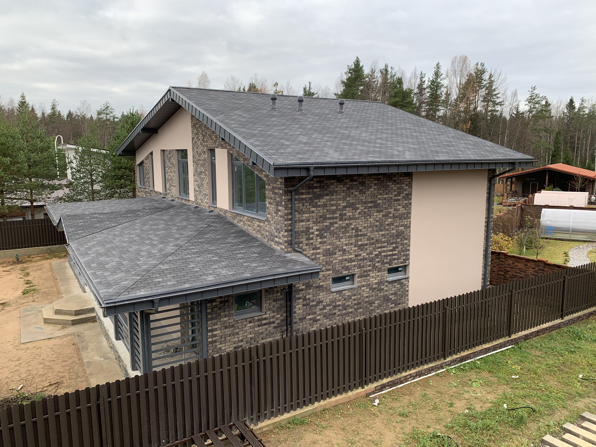
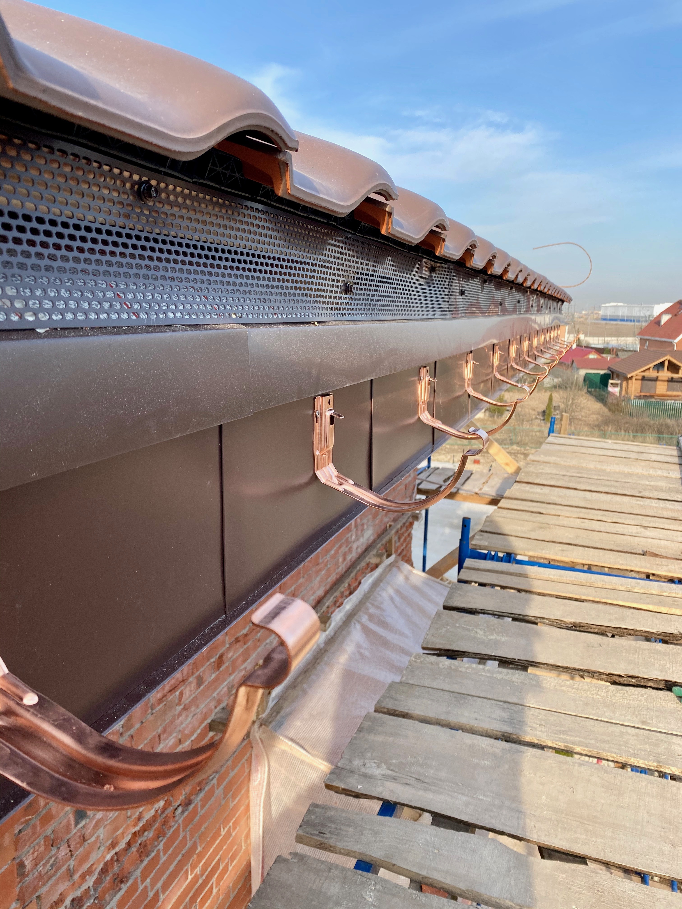
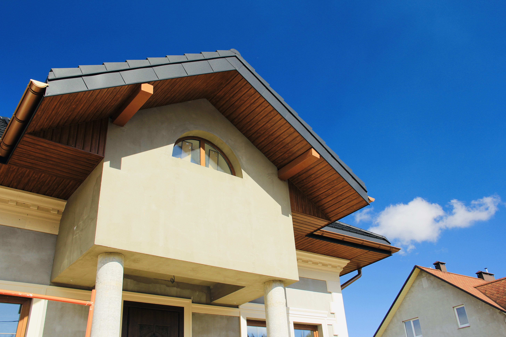
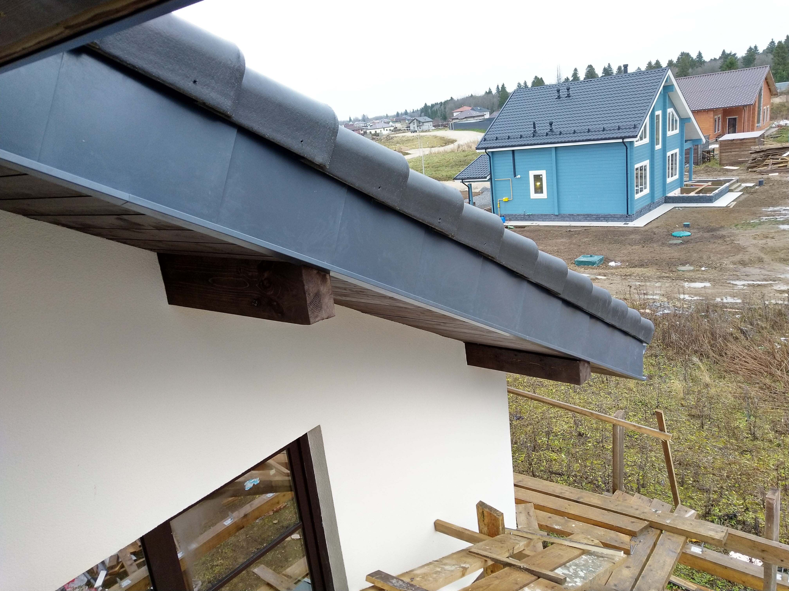
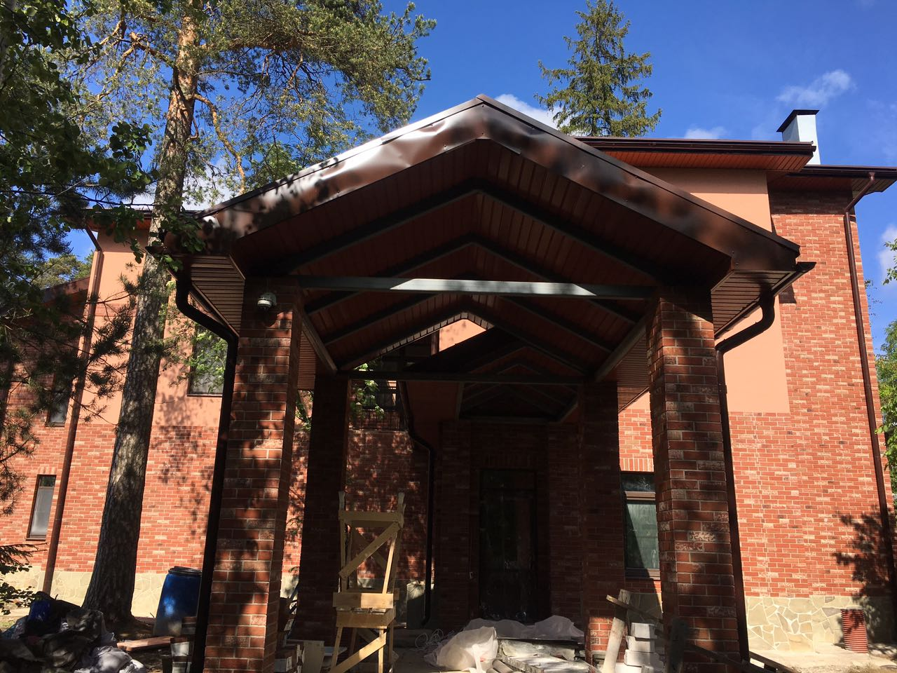

О компании
Производитель и поставщик кровельных материалов и кровельных и фасадных комплектующих по всей России.
История
Компания работает более 15 лет. Начинали с перепродажи кровельных материалов — поставки IKO и Budmatt. Сегодня — собственное замкнутое производство и полный цикл услуг.
🏆 Знаковые объекты
- Остров Новая Голландия (СПб) — поставка кровли и водосточной системы на 12 корпусов
- 11-я Красноармейская, 11 (СПб) — изготовление элементов фасада
- Дом Корякова, 12 (СПб) — медные колпаки со шпилями
- Портовые терминалы Усть-Луга — поставка промышленных колпаков
- Волейбольная арена (Ленинский проспект) — изготовление угловых элементов
География: отгрузки по всей России.
📊 Почему мы — не просто гибочное производство
Мы не просто гнём металл. Мы — завод полного цикла:
- Придумываем и проектируем — собственный конструкторский отдел
- Визуализируем и согласовываем — клиент видит результат до производства
- Режем лазером — точность реза, сложные контуры, без деформации
- Свариваем лазером — невидимые швы, минимальная зона нагрева
- Гнём от 0,35 до 10 мм — от тонкой доборки до промышленных конструкций
- Длина гиба до 6 метров — цельные изделия без стыков
- Порошковая окраска — собственная покрасочная камера
- Сборочный цех — сложные изделия собираются на заводе, а не на объекте
- Монтаж — 6+ звеньев монтажников, отдельное звено замерщиков
| Параметр | Наше производство | Типичный конкурент |
|---|---|---|
| Цикл | Полный: проект → изготовление → монтаж | Только гибка по чертежу заказчика |
| Толщина металла | 0,35–10 мм | 0,4–1,2 мм |
| Длина гиба | До 6 метров | До 3 метров |
| Лазерная резка и сварка | Да | Нет (болгарка, ручная сварка) |
| Порошковая окраска | Своя камера | Отдают на сторону или не делают |
| Точность разметки | До 1 мм (микронасечки) | До 3 мм (фломастер) |
| Брак | Менее 2% | 5–10% |
| Упаковка | Плотная плёнка, объёмные — в пузырчатую | Стрейч или без упаковки |
| Срочное изготовление | В течение часа | 3–5 дней |
| Режим работы | Две смены | Одна смена |
| Гарантия | Бессрочная на сложные системы | 1 год или без гарантии |
| Проектирование | Своё КБ, визуализация | Нет |
| Монтаж | 6+ бригад, замерщики | Рекомендуют подрядчиков |
Чем занимаемся
16 направлений металлоизделий для кровли и фасада:
- Колпаки на трубы (вентиляционные, дымоходные)
- Кожухи труб (система «Берлин» и другие)
- Оклады примыкания к трубам
- Парапетные крышки (6 видов)
- Откосы окон
- Лобовые системы
- Доборные элементы
- Фасадные кассеты
- Водосточная система
- Сварочные работы
- Покрасочные работы
- Лазерная резка
Работаем с ведущими производителями:
- Металлочерепица и профнастил — Grand Line, Металл Профиль, Стинерджи
- Гибкая черепица — Технониколь, Docke, Tegola, Руфлекс
- Сайдинг — Docke, Grand Line, Альта-Профиль
- Водосточные системы — Аквасистем, Docke, Технониколь, Grand Line
- Гидро- и пароизоляция — Delta, Tyvek, Изоспан
- Мансардные окна — Velux, Fakro, Roto, Verso
- Замер — выезд специалиста на объект
- Монтаж — собственные бригады с сертификатами Технониколь, Fakro, Velux, Grand Line
- Техническая консультация
- Гарантийное обслуживание
Наши клиенты
- Дилеры — партнёры, которые продают нашу продукцию в своих регионах
- Строители и подрядчики — бригады, которые закупают материалы для своих объектов
- Архитекторы и проектировщики — специалисты, которые закладывают наши решения в проекты
Миссия и ценности
«Мы создаём новый подход через нестандартные решения»
Любая задача начинается с вопроса «как правильно», а не «что есть». Мы — инженерное производство. Проектируем и изготавливаем решения, которых раньше не было.
Четыре ключевые ценности
Мы не гонимся за дешевизной. Лучше продать меньше, но уверенно. Наш клиент возвращается — потому что ему не пришлось переделывать.
Если материал не подходит — скажем. Если срок нереальный — предупредим. Доверие строится годами, теряется за секунду.
Каждый сотрудник знает продукт. Мы не перекладываем ответственность на «технического специалиста» — каждый менеджер сам эксперт.
Быстро — не значит халтурно. Мы автоматизировали рутину, чтобы тратить время на качество, а не на бумажки.
Добро пожаловать в компанию!
Этот курс поможет тебе быстро войти в работу, понять специфику кровельного рынка и начать продавать уверенно.
Прежде чем приступить к обучению, убедись что у тебя есть все необходимые доступы. Если чего-то нет — обратись к руководителю.
| Система | Зачем нужна | Как получить |
|---|---|---|
| 1С (удалённый доступ) | Создание заказов, работа с клиентами, расчёты | Заявка через руководителя → IT-отдел |
| Гранд Лайн (личный кабинет) | Проверка наличия, цены, заказ металла | Регистрация на grandline.ru → привязка к дилеру |
| Металл Профиль (личный кабинет) | Проверка наличия, цены, заказ металла | Регистрация на metallprofil.ru → привязка к дилеру |
| Kiro (ИИ-ассистент) | Помощь с расчётами, ответы на вопросы, автоматизация | Учётная запись создаётся IT-отделом |
⚠️ Без этих доступов ты не сможешь полноценно работать! Не откладывай — запроси доступы в первый же день.
Курс состоит из двух частей:
- Часть 1. Основы — фундаментальные знания о кровле и строительстве, информация о компании, продукты, техника продаж
- Часть 2. Материалы — кровельные и фасадные материалы, которые ты будешь продавать
После каждого блока — тест из 10 вопросов. Ответы сразу показывают, правильно ты понял или нет. В конце курса — итоговый балл.
На полное прохождение отводится 2 недели. Рекомендуем проходить по 1–2 раздела в день, чтобы материал усваивался.
Что ты узнаешь
- Как устроена кровля, зачем нужна вентиляция и что такое стропильная система
- Чем занимается компания и почему клиенты выбирают нас
- Какие продукты мы производим и в чём их уникальность
- Как работать с клиентами: от первого контакта до закрытия сделки
- Всё о кровельных и фасадных материалах — металлочерепица, гибкая черепица, сайдинг, водостоки
Фишки курса
- Подсказки на терминах — наведи на подчёркнутое словоЭто пример подсказки. Такие всплывающие окна помогут разобраться в терминах. и увидишь объяснение
- Ссылки на продукты — нажми на название продукта и узнаешь подробности
- Готовые речевые модули — в каждой лекции есть фразы, которые можно использовать в разговоре с клиентом
- Ссылки на производителей — переходи на официальные сайты для изучения каталогов
👋 Представление компании
Готовые шаблоны для первого контакта с клиентами. Копируй, адаптируй под себя, отправляй.
Эти тексты можно копировать и отправлять в мессенджеры (WhatsApp, Telegram) или письмом. Замени [ИМЯ] на своё имя, добавь свои контакты.
Короткое представление для строителя (первый контакт)
Когда руководитель передал контакт клиента и нужно представиться:
[ИМЯ]— на своё имя- «по поводу работ по цоколю и перфокассет» — на реальную тему разговора руководителя
- Контакты — на свой телефон и почту
Почему этот шаблон работает
- ☀️ Приветствие — тёплое, но без панибратства
- Представление — кто ты и от кого
- Контекст — напоминание о чём говорил руководитель
- Польза — информация «на будущее» без навязывания
- Что делаем — короткий список с эмодзи (легко читать)
- Открытость — готовность ответить на вопросы
- Контакты — телефон и почта
Фундаментальные знания
Прежде чем продавать кровельные материалы, нужно понимать, как устроен дом. Этот раздел — база, без которой сложно разговаривать с клиентом на равных.
Как устроен частный дом
Любой дом состоит из нескольких основных частей:
- Фундамент — основание, которое передаёт нагрузку на грунт
- Стены — несущие (держат нагрузку) и ненесущие (перегородки)
- Перекрытия — горизонтальные конструкции между этажами
- Кровля — защита дома сверху от осадков и потерь тепла
- Фасад — внешняя отделка стен
Стропильная система
Стропильная системаНесущий каркас крыши из деревянных или металлических элементов. Воспринимает снеговую, ветровую нагрузку и вес кровельного покрытия. — это несущий каркас крыши. От неё зависит форма кровли и её надёжность.
- МауэрлатБрус, который укладывается по периметру стены и служит опорой для стропил. Равномерно распределяет нагрузку от крыши на стены. — опорный брус по периметру стен
- Стропильные ногиНаклонные балки, которые формируют скат кровли. Шаг стропил обычно 60–90 см в зависимости от нагрузки и утепления. — наклонные балки, формирующие скат
- КонёкВерхний горизонтальный стык двух скатов кровли. Через конёк выходит тёплый воздух — важная точка для вентиляции. — верхняя линия, где сходятся скаты
- ОбрешёткаДоски или бруски, на которые крепится кровельное покрытие. Бывает разреженная (для металлочерепицы) и сплошная (для гибкой черепицы). — основание для кровельного покрытия
- КонтробрешёткаБруски, которые создают вентиляционный зазор между гидроизоляцией и кровельным покрытием. Без неё конденсат не уходит и разрушает конструкцию. — создаёт вентиляционный зазор
Дополнительные элементы стропильной системы
- Коньковый прогон (брус)Горизонтальный брус в вершине кровли, на который опираются верхние концы стропил. Распределяет нагрузку на стойки или фронтоны. — горизонтальная балка на вершине, к которой крепятся стропила
- ПодкосНаклонный брус, подпирающий стропильную ногу снизу. Передаёт нагрузку на лежень или стойку. Угол наклона обычно 45-60°. — наклонная подпорка стропильной ноги
- СтойкаВертикальный брус, поддерживающий конёк или стропила. Опирается на лежень или внутреннюю стену. — вертикальная опора под коньком или прогоном
- ЛеженьГоризонтальный брус, лежащий на внутренней несущей стене. Служит опорой для стоек. По функции похож на мауэрлат, но внутри здания. — горизонтальный брус на внутренней стене, опора для стоек
- Затяжка (ригель)Горизонтальный брус, соединяющий нижние концы стропильных ног. Работает на растяжение, не даёт стропилам «разъехаться». — горизонтальная стяжка между стропильными ногами
- КобылкаДоска, удлиняющая стропильную ногу для формирования карнизного свеса. Применяется, когда длины стропил не хватает. — доска для удлинения стропила (формирует карнизный свес)
- НарожникУкороченная стропильная нога, которая упирается верхним концом не в конёк, а в накосное (диагональное) стропило вальмовой крыши. — укороченное стропило, упирающееся в накосную ногу (для вальмовых крыш)
- Накосное (диагональное) стропилоСтропило, идущее от угла здания к коньку. Формирует рёбра вальмовой крыши. Несёт повышенную нагрузку. — угловое стропило вальмовой крыши
- ШпренгельГоризонтальная балка на углу мауэрлата, на которую опирается стойка под накосным стропилом. — балка под стойкой накосного стропила
Типы стропильных систем
Стропильные системы делятся на две большие категории: классические (из отдельных элементов) и фермы (готовые сборные конструкции).
Собираются на месте из отдельных элементов: стропильных ног, затяжек, подкосов и т.д.
1. Висячие стропила
Висячие стропилаСтропила, опирающиеся только на наружные стены (мауэрлат). Стропильные ноги соединяются затяжкой, которая работает на растяжение и не даёт стропилам «разъехаться». — опираются только на наружные стены и соединяются затяжкой.
- Когда применяется: нет внутренних опор, пролёт перекрывается «одним махом»
- Преимущества: свободное пространство под крышей (мансарда)
- Недостаток: передаёт распирающую нагрузку на стены — нужна затяжка
- Пролёт: до 6-9 м без промежуточных опор
2. Наслонные стропила
Наслонные стропилаСтропила, имеющие опору не только на мауэрлат (внизу), но и на коньковый прогон или внутреннюю стену (вверху). Нагрузка передаётся вертикально. — опираются на мауэрлат снизу и на коньковый прогон (или внутреннюю стену) сверху.
- Когда применяется: есть внутренняя несущая стена или колонны
- Преимущества: проще конструкция, меньше распирающих нагрузок на стены
- Пролёт: до 16 м (с промежуточными опорами)
3. Комбинированная система
Сочетание наслонных и висячих стропил в одной крыше — для сложных конфигураций и больших пролётов.
ФермаГотовая сборная конструкция из стержней, соединённых в узлах. Работает как единое целое, изготавливается на заводе и монтируется краном. Используется для больших пролётов. — готовая сборная конструкция, которая изготавливается на заводе и устанавливается целиком.
Преимущества ферм:
- Большие пролёты — до 30 м и более без промежуточных опор
- Скорость монтажа — ферма ставится краном за минуты, не нужна сборка на месте
- Точность — заводское изготовление исключает ошибки на объекте
- Экономия материала — оптимизированная конструкция, меньше древесины на единицу пролёта
Недостатки ферм:
- Нужен кран — тяжёлые конструкции не поднять вручную
- Транспортировка — габаритный груз, не везде проедет
- Меньше гибкости — форма задана проектом, переделать нельзя
Где применяются фермы:
- Промышленные здания (ангары, склады, цеха)
- Спортивные сооружения (бассейны, манежи)
- Коммерческие объекты (торговые центры)
- Большие частные дома с открытой планировкой
| Ситуация | Решение |
|---|---|
| Частный дом, пролёт до 9 м | Классические (висячие или наслонные) |
| Пролёт более 12 м без внутренних стен | Фермы |
| Нет крана на объекте | Классические (собираются вручную) |
| Нужен высокий потолок внутри | Висячие или фермы |
Ножничная ферма (scissor truss)
Ножничные стропилаСтропила с перекрёстными затяжками, похожими на раскрытые ножницы. Создают сводчатый потолок внутри — без горизонтального перекрытия. — перекрёстные затяжки образуют «ножницы». Позволяют сделать сводчатый (кафедральный) потолок.
- Эффект: высокий потолок внутри, следующий за линией крыши
- Применение: гостиные, холлы, церкви
Распорная vs Безраспорная система
Распорная — стропила без затяжки передают горизонтальный распор на стены. Требует усиленного мауэрлата и армопояса.
Безраспорная — затяжки компенсируют распор, на стены действует только вертикальная нагрузка. Подходит для любых стен, включая каркасные.
Как выбрать тип стропильной системы
| Условие | Рекомендуемый тип | Почему |
|---|---|---|
| Есть внутренняя несущая стена | Наслонная | Проще, дешевле, меньше распора |
| Нет внутренних стен, пролёт до 9 м | Висячая с затяжкой | Свободное пространство |
| Хочется высокий сводчатый потолок | Ножничная | Потолок повторяет линию крыши |
| Стены из газобетона/каркас | Безраспорная | Стены не выдержат распор |
| Мансарда + минимум опор внутри | Висячая / комбинированная | Свобода планировки |
Мы не проектируем стропильные системы — это работа проектировщика или конструктора. Но понимать терминологию нужно, чтобы:
- Правильно определить шаг стропил для расчёта материалов
- Понять, какие узлы потребуют дополнительных доборных элементов
- Говорить с клиентом на одном языке
Качество древесины и крепёж
Долговечность кровли напрямую зависит от материала стропильной системы и способа крепления. Это важно обсуждать с клиентом, потому что экономия на древесине и крепеже приводит к дорогим ремонтам через 3-5 лет.
Сухая строганная доскаДоска с влажностью 8-12% (камерная сушка) и обработанной гладкой поверхностью. В отличие от пиломатериала «естественной влажности» (40-60%) не усыхает, не растрескивается, не «ведёт». — это древесина камерной сушки (влажность 8-12%) с обработанной поверхностью. Почему это критически важно:
- Усадка и деформация. Доска естественной влажности (40-60%) при высыхании теряет до 5-8% объёма. Стропила «ведёт», появляются щели, ослабляются узловые соединения
- Точность размеров. Сырая доска «гуляет» в размерах — невозможно выдержать ровную плоскость ската. Это приводит к волнам на металлочерепице и протечкам
- Долговечность. В сырой древесине развивается грибок и плесень. Синева — первый признак поражения. Антисептирование сырой доски малоэффективно — состав не проникает в глубину
- Нагрузочная способность. Сухая древесина на 20-30% прочнее при тех же размерах сечения
Строганная сухая доска — гладкая на ощупь, светлая, без синевы и чёрных точек, лёгкая. Сырая — шершавая, тяжёлая, часто с потёками смолы и пятнами.
Для ответственных соединений стропильной системы используют конструкционные саморезыСаморезы с усиленным стержнем, рассчитанные на работу на срез и выдёргивание. Примеры: Spax, Essve, Fischer Power-Full. Диаметр от 6 мм, длина по расчёту узла., а не гвозди. Причины:
- Работа на выдёргивание. Саморез держит нагрузку 400-600 кг, гвоздь — 100-150 кг. При усадке древесины гвоздь «вылезает», саморез — нет
- Работа на срез. Конструкционный саморез с полной резьбой передаёт усилие равномерно по всей длине стержня
- Демонтаж и ремонт. Саморез можно выкрутить и закрутить заново. Гвоздь при выдёргивании разрушает древесину
- Контроль затяжки. Саморез затягивается до упора с контролируемым моментом. Гвоздь легко «перебить» или недобить
Где гвозди допустимы: крепление обрешётки и контробрешётки (нагрузки небольшие, много точек крепления). Для узлов стропильной системы (мауэрлат, стропильные ноги, затяжки) — только саморезы или болты.
«Понимаю желание сэкономить. Давайте посчитаем: разница между сырой и сухой доской — примерно 30-40% в цене. Но если через 3 года стропила поведёт и придётся перекладывать кровлю — это стоимость всей работы плюс новые материалы. Экономия в 50 тысяч превращается в убыток в 500 тысяч. Плюс нервы и время.»
Типы крыш
- Односкатная — один наклонный скат. Самая простая и недорогая, часто для хозпостроек, гаражей, пристроек. Особенность — весь водосток на одну сторону
- Двускатная — два ската, соединённых коньком. Самая распространённая в России: надёжная, простая в монтаже, хорошо сбрасывает снег и воду
- Четырёхскатная — четыре ската, сходящихся к коньку или в одну точку. Устойчива к ветру, нет вертикальных фронтонов
- Вальмовая — разновидность четырёхскатной: два трапециевидных ската + два треугольных (вальмы). Классика для южных регионов, выглядит респектабельно
- Полувальмовая — компромисс между двускатной и вальмовой: вальмы укорочены, под ними часть фронтона. Позволяет сделать полноценные окна во фронтоне
- Шатровая — четыре одинаковых треугольных ската, сходящихся в одной точке (нет конька). Только для квадратных зданий
- Многоскатная (многощипцовая) — сложная форма с несколькими коньками и ендовами. Красиво, но дорого: много ендов = много потенциальных протечек, требует высокого качества монтажа
- Плоская — угол наклона до 5°. Используется рулонная или мембранная гидроизоляция. Не наша специализация
- Количество доборных элементов — чем сложнее форма, тем больше коньков, ендов, примыканий
- Сложность монтажа — ендова и многоскатка = риск протечек, дороже работа
- Наши продукты — на сложных крышах больше наших изделий: ендовы, хребты, оклады примыканий
- ЕндоваВнутренний угол на стыке двух скатов. Самое уязвимое место кровли — здесь скапливается вода и снег. Требует особого внимания при монтаже. — внутренний угол между скатами, самое уязвимое место
- ХребетНаружный угол на стыке двух скатов (как конёк, но не на вершине, а на пересечении плоскостей). — наружный угол между скатами
- КарнизНижний край кровли, выступающий за стену. Защищает стены от осадков и обеспечивает приток воздуха в подкровельное пространство. — нижний край кровли
- ФронтонТорцевая часть крыши между скатами. Часто утепляется и отделывается сайдингом или другим материалом. — торцевая стена под крышей
Вентиляция подкровельного пространства
Это критически важный момент, который часто упускают. Без правильной вентиляции:
- Скапливается конденсатВлага, которая выпадает из воздуха при охлаждении. Тёплый влажный воздух из дома поднимается вверх, встречает холодную поверхность и превращается в воду. — вода на внутренних поверхностях
- Намокает утеплитель — теряет свойства, тяжелеет
- Гниёт стропильная система
- Образуется плесень и грибок
Холодный воздух заходит через карниз, проходит по вентиляционному зазору (созданному контробрешёткой), нагревается и выходит через конёк или специальные аэраторы. Этот поток уносит влагу из подкровельного пространства.
Физика: что нужно понимать
Точка росыТемпература, при которой влага из воздуха начинает конденсироваться. Если стена или кровля «промерзает» до точки росы — внутри появляется вода. — температура, при которой влага в газообразном состоянии превращается в воду. Если внутри конструкции есть место, где температура падает до точки росы — там выпадет конденсат.
Пример: Тёплый воздух из дома (+22°C, влажность 50%) встречает холодную металлочерепицу (−10°C). Точка росы — около +11°C. Везде, где температура ниже +11°C, влага конденсируется.
Вывод: Нужна пароизоляция со стороны помещения (не пускает влагу в газообразном состоянии) и вентиляция снаружи (выводит влагу, если она всё же попала).
ПаропроницаемостьСпособность материала пропускать влагу в газообразном состоянии. Измеряется в мг/(м·ч·Па). Чем выше — тем лучше материал «дышит». — способность материала пропускать влагу в газообразном состоянии. Ключевое правило: паропроницаемость должна увеличиваться изнутри наружу.
- Изнутри — пароизоляция (не пропускает влагу)
- Утеплитель — средняя паропроницаемость
- Снаружи — гидроизоляция-мембрана (пропускает влагу наружу, не пускает воду внутрь)
ТеплопроводностьСпособность материала передавать тепло. Чем ниже коэффициент теплопроводности, тем лучше материал удерживает тепло. У воздуха — 0.025, у минваты — 0.035-0.045, у металла — 50+. — скорость передачи тепла через материал. Металл проводит тепло отлично — поэтому металлическая кровля без утепления промерзает и «потеет».
Утеплитель нужен не только для сохранения тепла, но и для того, чтобы «отодвинуть» точку росы от внутренней поверхности.
Фундаментальные принципы строительной физики
Эти принципы работают одинаково в кровле, цоколе, фасаде. Понимание физики — ключ к правильным рекомендациям клиенту.
Классический пример, где менеджеры ошибаются: пол первого этажа над продуваемым подпольем (свайный или ленточный фундамент с продухами). Утепление снизу — вата + мембрана. Но какой стороной мембрану?
Диффузионная мембрана работает на отток влаги только при отрицательном давлении — когда воздух движется ОТ мембраны, а не К ней.
Как это работает на цоколе:
- Ветер сталкивается со стеной дома
- У стены создаётся избыточное давление (с наветренной стороны)
- Воздух ищет выход и уходит вверх вдоль фасада
- Под домом (за мембраной) создаётся относительное разрежение
- Мембрана «подсасывает» влагу из утеплителя наружу
Правильная схема: Изнутри (из комнаты) → пол → пароизоляция → утеплитель → диффузионная мембрана → продуваемое подполье.
Ошибка: Мембрана снаружи ватой вверх (к полу). В этом случае давление прижимает мембрану к утеплителю, и она не работает на вывод влаги.
На неутеплённой (холодной) кровле тоже нужен вентзазор. Многие думают, что он нужен только для вывода конденсата. Но у холодной кровли другая главная задача:
Главная функция вентзазора на холодной кровле — охлаждение покрытия, чтобы снег на крыше не таял неравномерно.
Что происходит без вентзазора:
- Тепло из дома (через чердачное перекрытие) нагревает кровельное покрытие снизу
- Снег на крыше начинает таять в центре ската (там теплее)
- Вода стекает к карнизу
- На карнизе холоднее (свес выходит за контур стены) — вода замерзает
- Образуется ледяная плотина и сосульки
- Следующая порция воды не может стечь — затекает под покрытие
Вентзазор решает проблему: холодный воздух заходит через карниз, охлаждает покрытие изнутри, выходит через конёк. Температура покрытия выравнивается — снег тает равномерно.
Стандартная высота вентзазора — 40-50 мм (толщина контробрешётки). Но бывают ситуации, когда этого мало.
Проблема укрытого конька:
- На сложных кровлях конёк часто закрывают плотно (эстетика, защита от снега)
- Воздух выходит медленнее, чем заходит
- В морозы влага не успевает выйти и замерзает внутри вентзазора — образуется изморозьЛедяные кристаллы, образующиеся при замерзании водяного пара. В отличие от конденсата, изморозь объёмная и может забить вентзазор.
- Весной изморозь тает — вода течёт в утеплитель
Решение: Увеличить высоту вентзазора до 70-100 мм. Больший объём = больше воздуха = изморозь успевает сублимироваться (переходить в пар), не накапливаясь.
Когда применять увеличенный зазор:
- Укрытый конёк (без аэраторов)
- Длинные скаты (более 6 м)
- Регионы с суровыми зимами
- Кровли с малым уклоном (медленный воздухообмен)
МорозостойкостьСпособность материала выдерживать многократное замораживание и оттаивание без разрушения. Обозначается буквой F и числом циклов (F50, F100, F200). — критически важный параметр для кровельных материалов в России.
Как это работает:
- Материал впитывает влагу (даже «водонепроницаемый» — через микропоры)
- При замерзании вода расширяется на 9%
- Лёд давит на стенки пор — возникают микротрещины
- В следующий цикл вода проникает глубже
- Через N циклов материал разрушается
Марки морозостойкости:
| Марка | Циклов | Применение |
|---|---|---|
| F25-F35 | 25-35 | Только внутренние работы |
| F50 | 50 | Южные регионы, защищённые конструкции |
| F100 | 100 | Средняя полоса России |
| F150-F200 | 150-200 | Северные регионы, экстремальные условия |
Что влияет на реальную морозостойкость:
- Водопоглощение — чем меньше воды впитывает, тем дольше служит
- Пористость — закрытые поры лучше открытых
- Переходы через 0°C — один цикл = одно замерзание-оттаивание. В межсезонье может быть 2-3 цикла в сутки!
- Дренаж — если вода застаивается, циклов больше
F100 не означает «прослужит 100 лет». В Петербурге за зиму может быть 60+ переходов через ноль. F100 = примерно 2 года в экстремальных условиях. Поэтому качество гидроизоляции и отвод воды критичнее, чем марка материала.
Приток воздуха в подкровельное пространство организуется на карнизе. Есть два принципиально разных способа:
| Параметр | Через перфорированный софит | Через вентиляционную сетку |
|---|---|---|
| Точка входа воздуха | Снизу, в карнизный свес | Снаружи, за капельником |
| Куда течёт конденсат | В карнизный свес, на софит | На улицу |
| Сечение вентиляции | Ограничено перфорацией | Полное сечение зазора |
| Засорение | Перфорация забивается пылью | Сетка продувается |
Конденсат, образующийся на гидроизоляции, стекает вниз по мембране к карнизу. При организации притока через софит вода попадает В карнизный свес — на деревянные конструкции, утеплитель, софиты. Результат: гниение, плесень, потёки на фасаде.
При организации притока через сетку (перфорированная планка или вентиляционная лента над капельником) конденсат стекает НА УЛИЦУ — по капельнику в водосток. Деревянные конструкции карниза остаются сухими.
Как организовать правильно:
- Капельник конденсата (нижний) — крепится на стропила/кобылки, направляет конденсат с гидроизоляции в водосток
- Вентиляционная сетка (лента) — монтируется между капельником конденсата и капельником кровельного покрытия. Обеспечивает приток воздуха и защиту от птиц и насекомых
- Капельник кровельного покрытия (верхний) — крепится на обрешётку, направляет дождевую воду в водосток
- Софит — выполняет только декоративную функцию (закрывает свес снизу). Перфорация не нужна!
Сетка = между капельниками. Нижний капельник отводит конденсат, верхний — дождевую воду. Сетка между ними впускает воздух, но не даёт попасть птицам и мусору.
Кровельный пирог
Так называют правильную последовательность слоёв утеплённой кровли (изнутри наружу):
- Внутренняя отделка (гипсокартон, вагонка)
- Пароизоляция — плёнка, не пропускающая влагу из помещения
- Утеплитель — минвата, обычно 150–250 мм
- Гидроизоляция — мембрана, защищающая от воды сверху
- Вентиляционный зазор — создаётся контробрешёткой (40–50 мм)
- Обрешётка
- Кровельное покрытие
Важно: Если нарушить порядок слоёв или забыть про вентзазор — кровля будет «течь» изнутри. Клиенты часто грешат на кровельное покрытие, а проблема в неправильном пироге.
Базовая математика для кровельщика
Менеджер — не инженер, но базовую математику знать обязательно. Без неё не рассчитать материал, не объяснить клиенту, почему именно столько, не проверить замер.
Простыми словами: косинус угла показывает, какая часть длины «уходит в горизонталь».
Пример из жизни: Представь лестницу длиной 5 метров, приставленную к стене. Если угол наклона 60°, то её основание отходит от стены на 2.5 метра (5 × cos60° = 5 × 0.5 = 2.5). Если угол 30° — на 4.3 метра (5 × 0.87).
Когда знаешь длину ската и угол наклона — можно посчитать горизонтальную проекцию (ширину, которую крыша «занимает» по горизонтали). Это нужно для расчёта свесов, водосточки, примыканий.
Формула: Горизонтальная проекция = Длина ската × cos(угол)
Шпаргалка косинусов:
| Угол | Косинус | Что это значит |
|---|---|---|
| 0° | 1.0 | Вся длина — в горизонтали (плоский) |
| 15° | 0.97 | 97% длины в горизонтали |
| 30° | 0.87 | 87% длины в горизонтали |
| 45° | 0.71 | 71% длины в горизонтали |
| 60° | 0.5 | Половина длины в горизонтали |
Треугольник — где встретишь в работе:
- ФронтонТорцевая часть здания от карниза до конька. Треугольная форма при двускатной крыше. Может быть кирпичным, каркасным или обшитым. Часто требует утепления и отделки. — торцевая стена дома под крышей (от карниза до конька)
- ЩипецВерхняя треугольная часть торцевой стены, не отделённая карнизом. Продолжение стены до самого конька. В отличие от фронтона, не выступает и не имеет горизонтального карнизного профиля. — то же, что фронтон, но без карнизного выступа (стена идёт прямо до конька)
- Фартук клиномПланка примыкания треугольной формы. Устанавливается там, где скат крыши подходит к стене под углом (например, слуховое окно, мансардное окно, примыкание ската к боковой стене). — планка примыкания к стене, когда кровля «врезается» в стену под углом
Формула: S = (основание × высота) ÷ 2
Пример: Фронтон с основанием 8 м и высотой 3 м. Площадь = (8 × 3) ÷ 2 = 12 м²
Трапеция — вальмовая часть кровли, фасад с наклонным верхом.
Формула: S = (верхнее основание + нижнее основание) ÷ 2 × высота
Пример: Вальма с нижним краем 10 м, верхним 4 м, высота ската 5 м. Площадь = (10 + 4) ÷ 2 × 5 = 35 м²
Практический совет: Сложную кровлю мысленно разбивай на прямоугольники, треугольники и трапеции. Считай каждый элемент отдельно, потом складывай. Это проще, чем пытаться посчитать всё сразу.
Уклон кровли можно выразить двумя способами, и это часто путает. Производители пишут в градусах, строители — в процентах.
В градусах — угол между скатом и горизонтом. Понятно интуитивно.
В процентах — сколько сантиметров подъёма на каждый метр длины по горизонтали.
Проценты → градусы: α = arctan(P / 100), где P — уклон в %
Градусы → проценты: P = tan(α) × 100, где α — угол в градусах
Пример: 20% = arctan(0.20) ≈ 11.3°. Или: 30° = tan(30°) × 100 ≈ 57.7%
Шпаргалка для ежедневной работы:
| Градусы | Проценты | Подъём на 1 м | Где применяется |
|---|---|---|---|
| 1° | 1.7% | 1.7 см | Минимум для плоской (1:60) |
| 3° | 5.2% | 5.2 см | Мембранная кровля |
| 5° | 8.7% | 8.7 см | ПВХ мембрана, рулонные |
| 7° | 12.3% | 12.3 см | Фальц с двойным замком |
| 10° | 17.6% | 17.6 см | Фальц, профлист (мин.) |
| 12° | 21.3% | 21.3 см | Металлочерепица (техн. мин.) |
| 14° | 24.9% | 24.9 см | Металлочерепица (рекоменд.) |
| 18° | 32.5% | 32.5 см | Ондулин, гибкая черепица |
| 22° | 40.4% | 40.4 см | Оптимум для металлочерепицы |
| 25° | 46.6% | 46.6 см | Стандартный скат |
| 30° | 57.7% | 57.7 см | Крутой скат, сход снега |
| 35° | 70.0% | 70.0 см | Очень крутой |
| 40° | 83.9% | 83.9 см | Мансардный нижний скат |
| 45° | 100% | 100 см | 1:1, мансарда |
| 60° | 173% | 173 см | Крутая мансарда, шпиль |
Частая ошибка: Клиент говорит «уклон 20%», менеджер думает это 20° и предлагает металлочерепицу. А 20% — это всего ~11°, для черепицы мало! Всегда уточняй: «В градусах или процентах?»
На коммерческих объектах и крупных проектах архитекторы часто указывают уклон в процентах — это их стандарт. Ошибка в понимании = неправильно подобранный материал = проблема на объекте.
Правило: Если проект от архитектора или проектной организации — скорее всего проценты. Если от частного клиента или замерщика — скорее всего градусы. Всегда переспрашивай!
Дорожные знаки подъёма/спуска (треугольник с процентом) — это тоже проценты, не градусы! Знак «12%» на дороге означает подъём 12 см на каждый метр (примерно 7°), а не угол 12°.
Полезная ассоциация: если клиент сказал уклон «как на крутом горном серпантине» — это обычно 8-15%, то есть 5-9°.
На чертежах от архитектора или замерщика ты увидишь три типа изображений. Важно понимать, что каждый показывает.
Вид сверху (план кровли) — смотришь на крышу с вертолёта. Видишь:
- Контуры скатов
- Расположение ендов, коньков, хребтов
- Размеры по горизонтали (НЕ по скату!)
- Места примыканий к трубам, стенам
Ловушка: На виде сверху скат 6 метров может выглядеть как 5 метров — ты видишь проекцию, а не реальную длину. Чем круче уклон, тем больше разница!
Вид сбоку (фасад) — смотришь на дом со стороны. Видишь:
- Высоту конька
- Угол наклона скатов
- Свесы карнизные и фронтонные
- Расположение окон, слуховых проёмов
Разрез — как будто дом разрезали пополам и смотришь внутрь. Видишь:
- Толщину стен и перекрытий
- Структуру кровельного пирога
- Высоту помещений
- Узлы примыканий
Для расчёта материала нужна РЕАЛЬНАЯ площадь ската, а не проекция. Если есть только вид сверху — умножай на коэффициент уклона (для 30° это примерно 1.15, для 45° — 1.41).
Базовая физика: конвекция и диффузия
Эти два процесса — причина большинства проблем с кровлей. Понимаешь их — понимаешь, почему важен правильный пирог.
Простыми словами: тёплый воздух легче холодного и поднимается вверх. Это конвекция.
Примеры из жизни:
- Дым от костра поднимается вверх
- В комнате у потолка теплее, чем у пола
- Батарея греет воздух, он поднимается, у окна остывает и опускается — образуется круговорот
Тёплый воздух из жилых помещений стремится вверх — на чердак, в подкровельное пространство. Вместе с ним поднимается влага (пар от дыхания, готовки, ванной). Если путь открыт — влага попадает в утеплитель.
Решение: Пароизоляция снизу (со стороны помещения) — перекрывает путь тёплому влажному воздуху.
Почему важна герметичность: Конвекция переносит влаги в 100 раз больше, чем диффузия. Одна щель в пароизоляции — и весь эффект теряется. Воздух «находит» дырку и несёт через неё пар.
Простыми словами: молекулы воды (пар) медленно просачиваются сквозь материалы — даже сквозь бетон и кирпич. Это диффузия.
Примеры из жизни:
- Запах духов распространяется по комнате, даже если воздух неподвижен
- Надутый шарик сдувается за несколько дней — воздух просачивается через резину
- В погребе сыро, хотя вода не течёт — влага диффундирует через стены
Внутри дома влажность выше, чем на улице (люди дышат, готовят, моются). Пар стремится наружу — из области высокого давления в область низкого. Он медленно проникает через все слои: отделку, пароизоляцию, утеплитель.
Задача конструкции: Пропускать пар наружу, но не внутрь. Каждый следующий слой (изнутри наружу) должен быть более паропроницаемым, чем предыдущий.
Почему снаружи мембрана, а не плёнка: Диффузионная мембрана пропускает пар (молекулы воды), но не пропускает воду (капли). Пар, который всё-таки прошёл через пароизоляцию и утеплитель, выходит через мембрану наружу и уносится вентиляцией. Если поставить снаружи глухую плёнку — пару некуда деться, он конденсируется в утеплителе.
| Параметр | Конвекция | Диффузия |
|---|---|---|
| Скорость переноса влаги | Быстро (секунды-минуты) | Медленно (дни-недели) |
| Объём влаги | Много (до 100 г/м²·сутки) | Мало (1-2 г/м²·сутки) |
| Как остановить | Герметичность (проклеить стыки) | Пароизоляционная плёнка |
| Что будет, если не остановить | Утеплитель намокнет за неделю | Утеплитель отсыреет за сезон |
Главный вывод: Борьба с конвекцией важнее борьбы с диффузией. Можно поставить дорогую пароизоляцию, но если не проклеить стыки скотчем — толку ноль. Воздух найдёт щель и принесёт в 100 раз больше влаги, чем просочится через саму плёнку.
❄️ Снеговая нагрузка — сколько весит снег на кровле
Снег — это не просто белое покрывало. Это реальная нагрузка на стропильную систему, и она может быть огромной. Менеджер должен понимать эти цифры, чтобы правильно подбирать материалы и объяснять клиенту, зачем нужны снегозадержатели и чистка кровли.
| Тип снега | Плотность | Вес 1 м² при толщине 10 см | Вес 1 м² при толщине 50 см |
|---|---|---|---|
| Свежий пушистый | 50–100 кг/м³ | 5–10 кг | 25–50 кг |
| Слежавшийся (через неделю) | 200–300 кг/м³ | 20–30 кг | 100–150 кг |
| Мокрый (оттепель, дождь по снегу) | 400–600 кг/м³ | 40–60 кг | 200–300 кг |
| Лёд (наледь, ледяная корка) | 800–900 кг/м³ | 80–90 кг | 400–450 кг |
Пример: Кровля 100 м². После снегопада лежит 40 см слежавшегося снега. Нагрузка: 100 × 0,4 × 250 = 10 000 кг = 10 тонн. Это вес двух гружёных газелей — на вашей крыше.
- Санкт-Петербург: средний снегопад — 10–15 см за сутки. Рекордные — до 30–40 см. Снеговой район III по СП 20.13330 (нормативная нагрузка 180 кг/м²)
- Москва: средний — 10–20 см. Рекордные — до 40–50 см. Снеговой район III (180 кг/м²)
- Зима в цифрах: за сезон в СПб выпадает суммарно 1,5–2 м снега. Он не лежит весь сразу — тает, уплотняется, снова засыпает
Ключевой момент: свежие 30 см снега весят 15–30 кг/м². Но через неделю оттепелей и заморозков те же 30 см превращаются в 15 см плотного снега и весят уже 45–90 кг/м². Мокрый снег в 5–6 раз тяжелее сухого!
Чистить кровлю нужно, когда снег поднимается выше уровня снегозадержателей (~15 см над кровлей).
Почему именно тогда: снег на кровле не лежит единым монолитным слоем. Он расслаивается — нижний слой подтаивает от тепла дома, верхний — промерзает. При сходе снег движется послойно: верхний пласт скользит по нижнему. Если слой выше снегозадержателя — он перелетает через него и сходит лавиной.
- Трубчатые снегозадержатели — дозируют сход, пропускают снег порциями. Но если слой 50+ см — не удержат
- Решётчатые — держат полностью, но при перегрузке могут деформироваться вместе с кронштейнами
- Снегорезы (точечные) — работают только до определённой толщины слоя
Правило для клиента: если снег на кровле выше 30 см — пора чистить. Если пошла оттепель и снег стал мокрым — чистить СРОЧНО (нагрузка удваивается за часы).
| Район | Нормативная нагрузка | Примеры городов |
|---|---|---|
| I | 80 кг/м² | Астрахань, Калмыкия |
| II | 120 кг/м² | Краснодар, Ростов-на-Дону |
| III | 180 кг/м² | Москва, Санкт-Петербург, Тверь |
| IV | 240 кг/м² | Нижний Новгород, Вологда |
| V | 320 кг/м² | Пермь, Сыктывкар |
🌧️ Дождь и водосбор — сколько воды с кровли
Дождь кажется безобидным, но кровля — это огромная воронка. Каждый квадратный метр собирает литры воды, и всё это должно куда-то уйти. Если водосток не справляется — вода льётся мимо, размывает фундамент, заливает фасад.
1 мм осадков = 1 литр воды на 1 м². Это базовое правило.
| Тип дождя | Интенсивность | Водосбор с кровли 100 м² |
|---|---|---|
| Мелкий (морось) | 1–2 мм/час | 100–200 л/час |
| Обычный | 5–10 мм/час | 500–1 000 л/час |
| Сильный | 15–30 мм/час | 1 500–3 000 л/час |
| Ливень | 50–80 мм/час | 5 000–8 000 л/час |
Пример: Кровля 200 м², ливень 60 мм/час. Водосбор: 200 × 60 = 12 000 литров в час = 200 литров в минуту. Это 3,3 литра в секунду — как два открытых крана.
- Санкт-Петербург: ~660 мм в год, максимум за сутки 40–60 мм. Ливни до 30 мм/час
- Москва: ~700 мм в год, максимум за сутки 50–70 мм. Ливни до 40 мм/час
- Расчётная интенсивность для водостока: принимают 75 мм/час (по СП) — это сильный ливень, на который проектируют систему
Чем круче скат и чем он длиннее, тем быстрее разгоняется вода. На длинном скате 9 метров вода у карниза уже летит, а не стекает:
| Угол ската | Скорость воды у карниза (скат 9 м) | Что происходит |
|---|---|---|
| 20° | ~2,5 м/с | Вода стекает быстро, но управляемо. Водосток справляется |
| 30° | ~3,2 м/с | Вода разгоняется, может перелетать через жёлоб на карнизе |
| 45° | ~4,2 м/с | Поток сильный, при ливне вода перехлёстывает через край жёлоба |
Вывод: на крутых длинных скатах нужен увеличенный жёлоб (150 мм вместо 125 мм), воронки с большим приёмным отверстием, и категорически нельзя уменьшать сечение трубы.
- Ендова — в неё сливается вода с двух скатов. Водосбор удваивается! Если ендова длинная — нижняя часть не справляется, вода переливается через край под кровлю
- Скат, нависающий над другим скатом — вода с верхнего ската падает на нижний, создавая точечную нагрузку. Нужен дополнительный водосток на стыке или усиленная ендова
- Длинные скаты (8+ м) — поток у карниза мощный, стандартный жёлоб 125 мм не справляется при ливне
- Переломы ската — если скат меняет угол (мансардная крыша), на переломе вода разбрызгивается и попадает под покрытие
🔒 Защищённый раздел
Этот раздел содержит внутреннюю информацию о системе мотивации и условиях работы. Доступ только для сотрудников.
Пароль можно узнать у руководителя отдела продаж.
🔓 Закрытый раздел для сотрудников
Здесь находятся внутренние материалы компании с тестами для проверки знаний.
- О компании — полная версия с тестом на 10 вопросов
- Миссия и ценности — речевые модули и тест
- Условия работы — система мотивации и тест
- Работа в 1С — алгоритмы работы с системой
- Работа с ИИ (Kiro) — как использовать ИИ-ассистента
- Правила замера — инструкции по выполнению замеров
О компании
Производитель и поставщик кровельных материалов и кровельных и фасадных комплектующих по всей России.
История
Компания работает более 15 лет. Начинали с перепродажи кровельных материалов — поставки IKO и Budmatt. Сегодня — собственное замкнутое производство и полный цикл услуг.
Команда
Сейчас в компании около 20 человек:
- Отдел продаж — менеджеры-хантеры и менеджеры по работе с партнёрами
- Производство — операторы ЧПУ, гибщики, сборщики
- Монтажные бригады — сертифицированные специалисты
- Логистика и склад
Чем занимаемся
16 направлений металлоизделий для кровли и фасада:
- Колпаки на трубы (вентиляционные, дымоходные)
- Кожухи труб (система «Берлин» и другие)
- Оклады примыкания к трубам
- Парапетные крышки (6 видов)
- Откосы окон
- Лобовые системы
- Доборные элементы
- Фасадные кассеты
- Водосточная система
- Сварочные работы
- Покрасочные работы
- Лазерная резка
Работаем с ведущими производителями:
- Металлочерепица и профнастил — Grand Line, Металл Профиль, Стинерджи
- Гибкая черепица — Технониколь, Docke, Tegola, Руфлекс
- Сайдинг — Docke, Grand Line, Альта-Профиль
- Водосточные системы — Аквасистем, Docke, Технониколь, Grand Line
- Гидро- и пароизоляция — Delta, Tyvek, Изоспан
- Мансардные окна — Velux, Fakro, Roto, Verso
- Замер — выезд специалиста на объект
- Монтаж — собственные бригады с сертификатами Технониколь, Fakro, Velux, Grand Line
- Техническая консультация
- Гарантийное обслуживание
Наши клиенты
- Дилеры — партнёры, которые продают нашу продукцию в своих регионах
- Строители и подрядчики — бригады, которые закупают материалы для своих объектов
- Архитекторы и проектировщики — специалисты, которые закладывают наши решения в проекты
Дилер, строитель и архитектор — это разные клиенты с разными потребностями. Дилеру важны условия и маржинальность, строителю — цена и сроки, архитектору — техническая документация и варианты решений. Аргументация для каждого своя.
Миссия и ценности
«Строим крыши, которые переживут тренды»
Мы не просто продаём материалы. Мы решаем проблему, которая есть у каждого владельца дома: сделать так, чтобы крыша не текла, фасад не облезал, а деньги не улетали в трубу.
Когда клиент приходит к нам, он не покупает металлочерепицу — он покупает уверенность, что следующие 30 лет не будет думать о кровле. И наша задача — дать ему эту уверенность.
Четыре ключевые ценности
Мы не продаём то, что не готовы поставить на свой дом. Точка.
На изделия собственного производства даём бессрочную гарантию — она ограничена только сроком службы самого покрытия.
Клиент должен быть уверен:
- Заказ приедет в срок — не «примерно на следующей неделе», а в конкретный день
- Размеры будут точными — не «плюс-минус», а как в спецификации
- Если что-то пойдёт не так — мы решим проблему, а не будем искать виноватых
Мы — эксперты в своём деле. Менеджер должен знать продукт лучше клиента и уметь объяснить сложное простым языком.
- Знать, чем Pural отличается от Полиэстера
- Понимать, почему на сложной кровле нужен оклад примыкания, а не просто герметик
- Сказать «это вам не подходит», если это правда
Строительный сезон короткий. Бригада простаивает — деньги горят. Мы это понимаем.
- Расчёт — в тот же день
- Изделия на заказ — от 3 рабочих дней
- Складская программа — отгрузка день в день
Условия работы и мотивация
Прозрачная система оплаты: ты точно знаешь, сколько заработаешь и от чего это зависит.
Структура дохода
Доход менеджера состоит из двух частей:
- Оклад — фиксированная часть, выплачивается независимо от результата
- Премия — процент от маржи с продаж
Премия = % от маржи. Маржа = Цена продажи − Себестоимость.
Процент зависит от выполнения плана и типа продукта:
| Тип продукта | % от маржи |
|---|---|
| Перепродажа (металлочерепица, сайдинг и т.д.) | 10-15% |
| Собственное производство (колпаки, кожухи и т.д.) | 15-20% |
| Монтаж | 5-10% |
Что влияет на доход
| Фактор | Как влияет |
|---|---|
| Количество сделок | Больше сделок = больше базы для расчёта премии |
| Маржинальность | Продажа с хорошей наценкой приносит больше, чем «слив» по минимальной цене |
| Продажа собственного производства | Маржа выше, чем на перепродаже — выгоднее для тебя |
| Допродажи | Доборные элементы, монтаж, аксессуары — это дополнительная прибыль |
Испытательный срок
- Длительность: 3 месяца
- Оклад: полный с первого дня
- Премия: начисляется со второго месяца
- Обучение: прохождение этого курса + работа с наставником
Рабочий график
- Режим: 5/2, с 9:00 до 18:00
- Обед: 1 час
- Формат: офис (после испытательного срока возможна частичная удалёнка)
Чем лучше ты знаешь продукт и умеешь работать с клиентом — тем больше зарабатываешь. Система прозрачная: каждый может посчитать свою премию.
💻 Работа в 1С
Алгоритмы работы с системой 1С:Управление торговлей. Все действия менеджера — от создания партнёра до проверки оплаты.
Два обязательных шага перед началом работы. Без них не работает авторасчёт стоимости и CRM.
1. Ручное выставление стоимости ЗАПРЕЩЕНО.
Стоимость изделий всегда формируется только через авторасчёт (Астра Раскрой). Нельзя вписывать цену руками — даже если «знаешь, сколько стоит».
2. Корректировка цены — только ручной скидкой.
Если нужно изменить стоимость (скидка клиенту, акция, особые условия) — делаем это только через поле «Ручная скидка» в строке заказа. Не через редактирование цены!
3. После ЛЮБОГО изменения счёта — прогнать авторасчёт заново.
Добавил строку, удалил строку, изменил размеры, поменял количество — обязательно запусти авторасчёт после последних изменений в строках номенклатуры. Иначе стоимость не пересчитается и будет расхождение с раскроем.
Нарушение этих правил = ошибки в себестоимости, убытки на заказе, проблемы с раскроем.
При работе с листовым металлом (списание остатков, оприходование новых поставок) — обязательно проверяй остатки через отчёт «Листики».
Алгоритм после списания или оприходования:
- Провести документ списания / оприходования
- Открыть отчёт «Листики»
- Проверить, что ни один металл не ушёл в минус
- Если минус — найти причину (ошибка в документе, не проведён приход, пересортица)
⚠️ Металл в минусе = проблема. Если на складе минусовой остаток — раскрой будет считать, что металла нет, заказы встанут. Всегда проверяй после любых движений.
0. Интерфейс 1С — начни с этого!
Прежде чем создавать документы — освой базовые инструменты навигации. Это сэкономит часы времени.
Самый быстрый способ найти что угодно в базе:
- Нажми Ctrl+F (или значок лупы вверху справа)
- Введи номер заказа, ИНН, название партнёра, номер телефона
- Система покажет все документы и справочники, где это встречается
Примеры поиска:
000-001234— найдёт заказ по номеруТопхаус— найдёт партнёра, контрагента, все его заказы7840123456— найдёт контрагента по ИНН
Добавляй в избранное документы и справочники, к которым часто возвращаешься:
- Открой любой документ или справочник
- Нажми звёздочку ⭐ в правом верхнем углу
- Документ появится в разделе «Избранное» в главном меню
Что добавить в избранное:
- Журнал «Интересы клиентов»
- Журнал «Заказы клиентов»
- Своих постоянных клиентов (партнёров)
- Крупные текущие заказы
Вернуться к недавно открытым документам:
- Нажми значок часов 🕐 (рядом с избранным)
- Увидишь список последних 20-30 открытых документов
- Кликни по нужному — сразу откроется
Когда полезно: Работал с заказом, отвлёкся, закрыл — не надо искать заново, просто открой из истории.
У каждого документа есть история версий. Если что-то сделал неправильно — можно вернуться к предыдущей версии.
- Открой документ (заказ, интерес и т.д.)
- Меню «Ещё» (или правая кнопка мыши)
- Выбери «История изменений» или «Версии объекта»
- Увидишь список версий с датой и автором изменения
- Выбери нужную версию → «Восстановить»
Умник — это бот-помощник в 1С. Он присылает напоминания, уведомления о событиях и подсказки.
- Главное меню → CRM → Умник
- Нажми «Подписаться»
- Настрой уведомления (письма, задачи, упоминания)
Без подписки на Умника ты будешь пропускать важные события по своим клиентам!
0.1 Роли менеджеров: хантер, фермер, сервис
В компании три роли менеджеров. Каждая роль имеет свои задачи и ограничения.
| Роль | Основная задача | Кто это |
|---|---|---|
| 🎯 Хантер | Привлечение новых клиентов, первая продажа | Менеджер по продажам |
| 🌾 Фермер | Работа с существующими клиентами, повторные продажи | Менеджер по работе с клиентами |
| 🔧 Сервис | Сопровождение заказов, решение проблем | Сервис-менеджер |
Что может и должен делать каждый
Входящее письмо должно быть обработано в течение 15 минут.
- Письмо приходит → основной менеджер клиента видит его в почте
- Если за 15 минут не отреагировал — любой фермер обязан взять письмо себе
- «Обработано» = ответил клиенту ИЛИ создал задачу ИЛИ передал коллеге с комментарием
Цель: Клиент не должен ждать ответа больше 15 минут в рабочее время.
Обсуждения vs Задачи — когда что использовать
| 💬 Обсуждение | 📋 Задача |
|---|---|
| Просто информирование | Требуется действие и контроль |
| «К сведению», «FYI» | «Сделай до...», «Проверь...» |
| Не требует проверки выполнения | Есть срок, есть ответственный |
| Обсуждение идей, вопросов | Конкретное поручение |
Если тебя упомянули в обсуждении (@Имя), уведомление появится в колокольчике 🔔.
- Все упоминания требуют внимания (ответа или реакции)
- Проверяй колокольчик минимум 2 раза в день
- Не игнорируй упоминания — коллеги ждут твоей реакции
Ценообразование: розница + скидка
Главное правило: Мы ВСЕГДА выставляем розничную цену — и на продукты производства, и на перепродажу. Скидка даётся вручную.
- В заказ подтягивается розничная цена из прайса
- Если клиенту нужна скидка — вводишь её вручную в поле «Скидка %»
- Скидка применяется к позиции или ко всему заказу
Почему так:
- Прозрачность — клиент видит реальную цену и размер скидки
- Контроль — руководитель видит, кто какие скидки даёт
- Гибкость — можно дать скидку на отдельные позиции
1. Интерес CRM (начало работы)
Главное правило: Вся работа с клиентом начинается с Интереса. Не с партнёра, не с заказа — с интереса. Это точка входа, где фиксируется первый контакт и ведётся вся история общения.
CRM_Интерес — это документ-воронка в 1С, который ведёт клиента от первого обращения до заказа.
- Переписка с клиентом — вся почта ведётся в интересе
- Создание партнёра — новый партнёр создаётся из интереса
- Заказ клиента — формируется на основании интереса
- История — все действия сохраняются в карточке интереса
- Главное меню → CRM → Интересы клиентов
- Кнопка «Создать»
- Заполнить:
- Источник — откуда пришёл клиент (сайт, звонок, рекомендация)
- Партнёр — выбрать существующего или создать нового (см. раздел 2)
- Контактное лицо — с кем общаемся
- Описание — кратко о потребности (например, «колпаки на трубы, коттедж в Токсово»)
- Потенциальная сумма — примерный бюджет клиента
- Нажать «Записать»
Интерес проходит этапы воронки продаж:
- Первичный контакт — получили обращение, выясняем потребность
- Квалификация — понимаем, что нужно клиенту
- Предложение — сформировали расчёт или КП
- Согласование — клиент думает, уточняет
- В работе — создан заказ, идёт производство
- Успешно завершён / Проигран — итог
Важно: Двигайте интерес по этапам — это даёт статистику конверсии и прогноз продаж.
Вся email-переписка с клиентом ведётся через интерес:
- В интересе → вкладка «Переписка»
- Кнопка «Написать письмо»
- Письмо уходит клиенту и сохраняется в истории
Входящие письма от клиента автоматически привязываются к интересу по email-адресу.
2. Партнёр и контрагент
Важно: Партнёр ≠ Контрагент. Это разные сущности в 1С!
Партнёр — это «папка» с названием клиента. Как папка на компьютере.
Контрагент — это «файлы» внутри папки. Каждый файл — отдельное юрлицо или ИП.
Пример:
📁 Партнёр «Топхаус» — это компания-клиент, как мы её знаем
📄 Контрагент «ООО Топхаус» — юрлицо с ИНН, на него выставляем счета
📄 Контрагент «ИП Петров» — ещё одно юрлицо того же клиента
📄 Контрагент «Петров Иван» — физлицо (директор платит картой)
Зачем так сделано:
- Один клиент может платить с разных юрлиц
- Все его заказы, история, переписка — в одном месте (у партнёра)
- Счета и документы — на конкретное юрлицо (контрагента)
Правило: Сначала создаём партнёра, потом добавляем ему контрагентов. Не наоборот!
Партнёр создаётся прямо в интересе, не отдельно:
- В форме интереса → поле «Партнёр»
- Нажать кнопку «+» или «Создать»
- Заполнить:
- Наименование — как называем клиента внутри компании
- Основной менеджер — выбрать себя (это «хантер» в системе мотивации)
- Рабочее наименование — если отличается от официального
- Нажать «Записать и закрыть» — партнёр автоматически подставится в интерес
Контрагент не может быть создан без:
- ✅ Контактной информации — телефон и/или email
- ✅ Кода идентификатора ЭДО — для электронного документооборота
- Открыть карточку партнёра
- Вкладка «Контрагенты» → «Создать»
- Заполнить:
- ИНН — система подтянет данные из ЕГРЮЛ/ЕГРИП
- Контактная информация — телефон, email (⚠️ обязательно!)
- Код идентификатора ЭДО (⚠️ обязательно!)
- Банковские реквизиты — БИК, расчётный счёт
- Нажать «Записать»
Создание партнёра сопряжено с созданием для него договора. Договор определяет условия работы и привязывается к организации.
| Организация | Налогообложение | Когда использовать |
|---|---|---|
| ОООМ | ОСНО (с НДС) | Юрлица, работающие с НДС |
| ИПМ | УСН (без НДС) | Клиенты на упрощёнке, физлица |
| Монастыренко | Без налогов | Специальные случаи |
- В карточке партнёра → вкладка «Договоры»
- Кнопка «Создать»
- Выбрать Организацию в зависимости от НДС клиента
- Указать Тип договора — обычно «С покупателем»
- Нажать «Записать»
- В карточке партнёра → вкладка «Контактные лица»
- Кнопка «Создать»
- Заполнить: ФИО, телефон, email, должность
- Установить флаг «Основное контактное лицо» для главного контакта
Зачем: Контактное лицо подставляется в заказы и документы. По нему ведётся статистика продаж.
3. Номенклатура и характеристики
🚫 КАТЕГОРИЧЕСКИ ЗАПРЕЩЕНО копировать производственную номенклатуру!
Единственное исключение — копирование при повторении заказа (когда клиент заказывает точно такое же изделие повторно).
В базе всё — товар. Монтаж, доставка, аренда — тоже номенклатура, не услуга.
Характеристика — уточнение к номенклатуре:
- Для готовых изделий: цвет-толщина-покрытие (например, «7024 - 0.45 - PE»)
- Для листового металла: размер листа (например, «800×1250», «2000»)
Виды продукции — что и как создавать
Готовая продукция, которую мы покупаем и продаём без изменений.
- Важно: правильно выбрать вид номенклатуры
- Часть товара уже может быть создана — сначала ищи в базе
- Если нет — создаёшь новую номенклатуру с правильным видом
Примеры: черепица, мембраны, утеплитель, водостоки заводские, мансардные окна
ВСЕ планки заводятся исключительно через рисовалку!
Это изделия, которые гнутся в одном направлении или имеют борта.
- Рисовалка автоматически создаёт номенклатуру
- Рассчитывает раскрой и себестоимость
- Определяет производственный маршрут
Исключение: если планки заказываются на заводе с перепродажей — тогда это товар, не производство.
Где найти: Заказ клиента → кнопка «Рисовалка» или меню Производство → Рисовалка
Изделия, изготавливаемые из листа, когда он проходит через раскрой.
- Колпаки, кожухи, оклады, парапетные крышки
- Любые изделия со сложной развёрткой
- Лист режется на гильотине/лазере → гибка → сборка
Как создавать: через специальные формы для каждого вида изделий (форма колпака, форма кожуха и т.д.)
Изделия, которые мы изготавливаем, но лист не проходит через раскрой — идёт сразу на сборку.
- Лист используется целиком или уже порезан
- Сборочные операции без раскроя
- Комплектация из готовых компонентов
Все стандартные изделия (колпаки ВЕНА, ЗАЛЬЦБУРГ, кожухи БЕРЛИН и т.д.) имеют свои виды номенклатуры. Система сама определяет маршрут и расчёт.
Сроки производства
Сроки рассчитываются программой автоматически на основании:
- Времени, выставленного на вкладке «Дополнительно» в карточке номенклатуры
- Загруженности производства
- Наличия материалов
Робот пересчитывает сроки каждые 60 секунд для новых заказов.
Складской металл — есть в справочнике «Складская программа». Цена по прайсу, сроки стандартные.
Заказной металл — нет в справочнике. Цена с наценкой и доставкой.
🔴 Экстрапоинт по срокам!
На заказной металл сроки увеличиваются из-за:
- Сроков прокатки на заводе
- Сроков доставки от поставщика
Продающий менеджер ОБЯЗАН проверить наличие сырья в личном кабинете поставщика!
Вкладка «Дополнительно» в номенклатуре
Здесь задаются параметры для автоматического раскроя:
- Развёртка изделия — размеры заготовки
- Количество деталей — сколько частей в изделии
- Направление раскроя — вдоль или поперёк листа
Заполняется автоматически при создании через формы (рисовалка, форма колпака и т.д.)
Дополнительные материалы, которые нужны для изготовления:
- Крепёж (саморезы, заклёпки)
- Уплотнители, герметики
- Упаковка
Система автоматически добавляет их в заказ поставщику при необходимости.
Настройки для планирования производства:
- Время изготовления — сколько минут/часов на единицу
- Рабочий центр — на каком оборудовании делается
- Очерёдность операций — последовательность обработки
На основании этих данных система планирует загрузку цеха и рассчитывает сроки.
- Главное меню → НСИ → Номенклатура
- В строке поиска ввести часть названия
- Для фильтрации:
- По виду номенклатуры (планки, колпаки, кожухи)
- По группе (Готовая продукция, Материалы)
Колпаки и кожухи: ВЕНА, ЗАЛЬЦБУРГ, ИНСБУРК (колпаки), БЕРЛИН, КИЛЬ, КЕЛЬН (кожухи), ЛОНДОН, ДУГЛАС (юбки).
При добавлении товара в заказ:
- Выбрать номенклатуру
- В колонке «Характеристика» нажать «...»
- Выбрать цвет/покрытие из справочника
Если нужной характеристики нет: обратитесь к руководителю для добавления.
4. Заказ клиента
Заказ клиента формируется на основании интереса. Это связывает заказ с историей общения и воронкой продаж.
Алгоритм создания заказа
- Открыть интерес клиента
- Кнопка «Создать на основании» → «Заказ клиента»
- Заполнить ВСЕ обязательные поля шапки:
- Партнёр — выбрать клиента
- Контрагент — юрлицо для документов
- Контактное лицо — кто заказывает
- Соглашение — условия оплаты
- Склад — откуда отгрузка
- Добавить номенклатуру производства (через формы или рисовалку)
- Добавить стоимость товаров для перепродажи (вручную или из прайса)
- Рассчитать стоимость производства — кнопка «Рассчитать цены»
- Присвоить статус «Готов к производству» (состояние 3)
- Записать и провести
⚠️ Важно! Не проводите заказ до полного заполнения всех полей и расчёта цен. Иначе сроки и цены будут некорректными.
Изменение строк с номенклатурой производства
Если нужно изменить строку с производственной номенклатурой:
- Распровести автораскрой:
- Меню Производство → Документы раскроя
- Найти раскрой по номеру заказа
- Открыть → «Отменить проведение»
- Внести изменения в строки заказа (количество, размеры, характеристики)
- Пересчитать заново:
- Кнопка «Рассчитать цены»
- Дождаться нового раскроя (робот каждые 60 сек)
- Записать и провести заказ
Комплект документов для клиента
- Счёт-оферта — документ для оплаты с условиями договора
- Спецификация — детальный состав заказа с размерами
- Схема проезда — как добраться до склада/производства
Формирование: Заказ клиента → кнопка «4for» → «Сформировать и отправить»
Проверка оплаты (3 способа)
Откройте Журнал заказов клиента — в колонках видны:
- Сумма — общая сумма заказа
- Оплачено — сколько получено
- Долг — остаток к оплате
Откройте заказ → меню Отчёты → Задолженность клиента
Показывает детальную информацию по всем расчётам с этим клиентом.
Откройте заказ → меню Отчёты → Состояние выполнения
Показывает:
- Статус оплаты
- Статус производства
- Статус отгрузки
- Обеспечение товаров — наличие материалов
Отчёт «Состояние выполнения» в заказе клиента показывает наличие всех необходимых материалов для производства.
Состояния заказа
| Код | Состояние | Что происходит |
|---|---|---|
| 1 | Согласование | Заказ создан, ждёт утверждения |
| 2 | Расчёт стоимости | Идёт расчёт цены и раскрой |
| 3 | Готов к производству | Цена рассчитана, ждёт оплаты |
| 33 | Ожидает запуск | Оплата есть, ждёт запуска |
| 4 | Согласован запуск | Готов к автоматическому запуску |
| 5 | Запущен в производство | Идёт изготовление |
| 6 | Готов к отгрузке | Изделия готовы, можно забирать |
| 7 | Отгружен частично | Часть товара отдана |
| 8 | Отгружен полностью | Всё отдано клиенту |
После записи заказа система автоматически:
- Создаёт предварительный раскрой (расчёт металла)
- Рассчитывает цену
- Определяет срок изготовления
Робот автоматического расчёта цен каждые 60 секунд обрабатывает новые заказы.
5. Комплект документов 4for
Важно: Мы не используем счета на оплату как отдельные документы. Вместо этого применяется комплект документов 4for — единый пакет документов для клиента.
4for — это набор документов, который формируется прямо из заказа клиента и отправляется одним пакетом:
- Коммерческое предложение — с ценами и описанием товаров
- Счёт-договор — юридический документ для оплаты
- Спецификация — детальный состав заказа
- Реквизиты — для оплаты
- Открыть заказ клиента
- Кнопка «4for» или «Комплект документов»
- Проверить:
- Состав и суммы
- Реквизиты контрагента
- Контактное лицо для отправки
- Нажать «Сформировать и отправить»
Клиент получает на email полный пакет документов в PDF — удобно, профессионально, всё в одном месте.
- Один клик вместо нескольких документов
- Единый стиль оформления
- История отправок сохраняется в заказе
- Клиент видит всё сразу: что, сколько, куда платить
6. Проверка оплаты
Критически важно: Нельзя проверять оплату «на глаз» по документам поступления денег. Единственно верный способ — регистр «Расчёты с клиентами».
- Открыть заказ клиента
- Перейти на вкладку «Расчёты» или кнопка «Состояние расчётов»
- Посмотреть поля:
- Сумма документа — сколько нужно
- Оплачено — сколько получено
- Долг — разница
- Долг > 0 — клиент должен нам (задолженность)
- Долг < 0 — у нас аванс клиента
- Долг = 0 — всё оплачено
Регистр РасчетыСКлиентами ведёт учёт по партнёру, не по контрагенту. При проверке дебиторки — сначала получите заказы нужного контрагента, потом сопоставьте с регистром.
Просрочка считается от даты платежа в соглашении:
- Сегодня > Дата платежа И Долг > 0 — просрочено
- Оплата гасит сроки по FIFO (первыми — самые старые)
Отчёт по задолженностям: попросите ИИ «покажи дебиторку» или «сформируй отчёт по долгам».
7. Запуск в производство
Система сама запускает заказы в производство при выполнении условий:
- Заказ в состоянии «4. Согласован запуск»
- Оплата получена (или соответствует условиям соглашения)
- Раскрой зафиксирован
Регламент «Запуск заказов» срабатывает каждые 15 минут и автоматически:
- Переводит заказ в состояние «5. Запущен в производство»
- Создаёт заказы поставщикам на заказной металл
- Распределяет по рабочим центрам
Автозапуск раскроев при поступлении материала. Когда нужный металл приходит на склад — «Гагарин» автоматически запускает ожидающие его заказы.
🔴 КРИТИЧНО: Если заказ не оплачен и не запущен более 30 минут, система автоматически отменяет предварительный раскрой.
Что происходит при отмене раскроя:
- ❌ Сроки производства слетают — дата готовности становится неактуальной
- ❌ Зарезервированный металл освобождается для других заказов
- ❌ Место в очереди производства теряется
Для восстановления сроков необходимо:
- Открыть заказ клиента
- Нажать кнопку «Рассчитать цены» — запустит новый раскрой
- Дождаться пересчёта роботом (до 60 секунд)
- Проверить новую дату готовности — она может сдвинуться!
Если клиент берёт паузу на раздумья — предупредите его, что сроки актуальны 30 минут. После этого дата готовности пересчитается с учётом текущей загрузки.
8. Отслеживание заказа
- Открыть заказ клиента
- Поле «Состояние» показывает текущий этап
- Вкладка «Производство» — детали по сборкам
- Поле «Дата готовности» — когда ожидается готовность
Для просмотра всех заказов в работе:
- Главное меню → Производство → Монитор производства
- Фильтр по менеджеру — ваши заказы
- Цветовая индикация:
- 🟢 Зелёный — по графику
- 🟡 Жёлтый — есть риски
- 🔴 Красный — опоздание
«Дата отгрузки» рассчитывается автоматически как максимальная дата готовности среди всех сборок заказа. Используйте её для информирования клиента.
9. Обеспечение материалами
- Со склада — металл есть, можно запускать сразу
- Под заказ — нужно заказать у поставщика, ждать поставку
- Из резерва — металл зарезервирован для другого заказа, но можно перераспределить
При запуске заказа с заказным металлом система автоматически создаёт Заказ поставщику:
- Статус «Подтверждён»
- Желаемая дата поступления = сегодня + срок поставки
- Партнёр, контрагент, склад — заполняет менеджер
Важно: Следите за заказами поставщикам — от них зависит срок вашего заказа!
Некоторые металлы можно получить быстрее стандартного срока, если они уже прокатаны на заводе:
- ✅ Плюс: срок поставки короче (металл уже готов)
- ❌ Минус: цена выше из-за срочности и логистики
Если клиенту критичны сроки и он готов доплатить — проверьте наличие прокатанного металла в личном кабинете поставщика. Это может сэкономить несколько дней.
Если хантер имеет предпочтения по поставщику или металлу:
- Конкретный поставщик (например, «только Гранд Лайн»)
- Срочность (готов доплатить за прокатанный)
- Особые условия (конкретная партия, сертификат)
Обязательно укажите это в обсуждении заказа клиента!
- Откройте заказ клиента
- Вкладка «Обсуждения» или кнопка 💬
- Напишите комментарий с @упоминанием ответственного
⚠️ Без записи в обсуждении — информация потеряется!
Если заказ запущен, но металла нет — он перейдёт в состояние «5. Ожидает материал». Когда материал поступит, «Гагарин» автоматически запустит раскрой.
С кем работаем чаще всего — статистика из 1С:
| Поставщик | Закупки, млн ₽ | Заказов | Что поставляет |
|---|---|---|---|
| ОДИН | 12.6 | 51 | Листовой металл (крупные партии) |
| Топхаус (SR) | 8.7 | 250 | Металл, комплектующие (доборные элементы) |
| ОРИМА | 7.4 | 7 | Снегозадержатели, кровельная безопасность |
| Компания Металл Профиль | 5.0 | 88 | Металлочерепица, профнастил, сайдинг |
| БАЛТПРОФИЛЬ | 4.8 | 2 | Листовой металл (крупные партии) |
| ПК Профиль | 3.1 | 41 | Листовой металл, прокатка |
| ПМК | 2.1 | 14 | Листовой металл |
| А-Микс | 1.8 | 53 | Утеплители, изоляция |
| ВИЛЛА-БАЛТ | 1.7 | 27 | Мансардные окна Velux |
| ТЕХНОНИКОЛЬ | 1.3 | 9 | Гибкая черепица, утеплители |
- ОДИН, Топхаус — основные по листовому металлу, проверять наличие в ЛК
- Металл Профиль — прокатка под заказ, есть ЛК с личным кабинетом
- ОРИМА — снегозадержатели и кровельная безопасность (редкие крупные заказы)
📊 Данные: октябрь 2024 — октябрь 2026, проведённые заказы поставщикам
9.1 Выбор поставщика металла
Поставщик зависит от покрытия, длины и срочности. Ниже — краткий справочник.
| Покрытие | Склад (1-3 дня) | Прокат (5-14 дней) |
|---|---|---|
| Полиэстер (PE) | ОДИН, Топхаус | Металл Профиль, ПК Профиль |
| Матовый (Matt, DRAP) | Топхаус | Металл Профиль (VikingMP) |
| Pural / Pural Matt | БАЛТПРОФИЛЬ (если есть) | Металл Профиль (Purman, Puretan) |
| Printech / под дерево | — | Металл Профиль, Топхаус (Grand Line) |
| Оцинковка | ОДИН, БАЛТПРОФИЛЬ, ПМК | — |
| Длина | Где брать | Примечание |
|---|---|---|
| До 2 м | Наш склад, любой поставщик | Проверь «Листики» в 1С — может быть в наличии |
| 2-3 м | ОДИН, Топхаус, Металл Профиль | Стандарт, есть у большинства |
| 3-4 м | Металл Профиль, Топхаус (Grand Line) | Только прокат под заказ |
| 5+ м | Металл Профиль (до 8 м) | Уточни возможность доставки! |
- Металл Профиль — могут прокатать почти любой RAL
- Срок: 14-21 день (дольше обычного)
- Минимальная партия — уточняй у менеджера
- Определи покрытие — PE, Matt, Pural, Printech, оцинковка
- Определи длину — до 2 м / 2-3 м / длинномер
- Определи срочность
Если срочно (1-3 дня):
- Проверь «Листики» в 1С — есть ли на складе
- Проверь ЛК Топхаус (grandline.ru)
- Проверь ЛК Металл Профиль — бывает готовый прокат
- Позвони в ОДИН
Если не срочно (5+ дней):
- Базовые покрытия (PE, Matt) → ОДИН или Топхаус дешевле
- Премиум (Pural, Printech) → Металл Профиль надёжнее
- Длинномер → только прокат (МП или Grand Line)
- Наш склад — отчёт «Листики» в 1С
- Топхаус / Grand Line — личный кабинет grandline.ru
- Металл Профиль — личный кабинет metallprofil.ru
- ОДИН, ПК Профиль — через менеджера (контакт в 1С, карточка партнёра)
10. Реализация (отгрузка)
- Открыть заказ клиента в состоянии «6. Готов к отгрузке» или выше
- Кнопка «Создать на основании» → «Реализация товаров и услуг»
- Проверить:
- Состав товаров
- Количество (можно отгрузить частично)
- Склад отгрузки
- Провести
- Частичная отгрузка → заказ переходит в «7. Отгружен частично»
- Полная отгрузка → заказ переходит в «8. Отгружен полностью»
При отгрузке возникает долг: в регистре расчётов появляется приходное движение (отгрузка = возникновение долга).
11. Документы (УПД, СФ)
🟢 Главное правило: При отгрузке выдаём УПД, а не накладную + счёт-фактуру отдельно. УПД — это единый документ, который заменяет оба.
УПД — основной документ при отгрузке. Заменяет накладную и счёт-фактуру:
- В реализации нажать «Печать» → «УПД»
- Статус 1 (СФ + накладная) — для плательщиков НДС
- Распечатать в 2 экземплярах
- Подписать у клиента при отгрузке
- Один экземпляр — клиенту, второй — нам
Когда нужна: В последний месяц квартала (март, июнь, сентябрь, декабрь) при авансе > 50 000 ₽.
🔴 Это требование налогового кодекса. Если получили аванс в конце квартала и не выставили СФ — штраф от ФНС.
Как создать:
- Открыть поступление оплаты (ПКО или банковская выписка)
- Кнопка «Создать на основании» → «Счёт-фактура выданный (на аванс)»
- Проверить сумму и реквизиты
- Провести
| Месяц | Квартал | СФ на аванс нужна? |
|---|---|---|
| Январь, февраль | Q1 | Нет |
| Март | Q1 | Да, если > 50 000 ₽ |
| Апрель, май | Q2 | Нет |
| Июнь | Q2 | Да, если > 50 000 ₽ |
| Июль, август | Q3 | Нет |
| Сентябрь | Q3 | Да, если > 50 000 ₽ |
| Октябрь, ноябрь | Q4 | Нет |
| Декабрь | Q4 | Да, если > 50 000 ₽ |
Из печатной формы любого документа можно отправить PDF клиенту — кнопка «Отправить по email».
12. Почта и переписка
Главное правило: Вся переписка с клиентом по email ведётся только в интересе! Не через отдельную почту, не через заказ — через интерес.
Вся email-переписка ведётся через интерес:
- Открыть интерес клиента
- Вкладка «Переписка»
- Кнопка «Написать письмо»
- Ввести текст, прикрепить файлы при необходимости
- Нажать «Отправить»
Важно: Входящие письма от клиента автоматически привязываются к интересу по email-адресу.
Обязательно проверяйте, что входящие письма привязались к нужному интересу:
🔴 Проблема: Письмо может привязаться к старому интересу (если клиент писал раньше) или вообще не привязаться (новый email).
Как проверить:
- Откройте интерес → вкладка «Переписка»
- Убедитесь, что все письма клиента там есть
- Если письма нет — найдите его в «Входящие письма» и привяжите вручную
Где искать непривязанные письма:
- CRM → Почта → Входящие письма
- Фильтр: «Не связанные с документами»
- Найти письмо от клиента
- Открыть → «Привязать к документу» → выбрать интерес
Фиксируйте все контакты с клиентом:
- В интересе → «Создать» → «Взаимодействие»
- Выбрать тип: Звонок, Встреча
- Описать суть разговора
- Указать результат и следующие шаги
Зачем: История общения видна всем менеджерам. Если коллега заболел — вы поймёте контекст по интересу.
Для внутренней переписки по заказу используйте «Обсуждение»:
Где найти:
- Кнопка 💬 на форме любого документа (заказ, интерес, реализация)
- Или вкладка «Обсуждение» внизу формы
Напишите @Фамилия или @Имя — коллега получит уведомление и не пропустит сообщение.
Примеры использования @упоминаний:
@Иванов, клиент просит ускорить отгрузку, возможно?@Петрова, проверь оплату по этому заказу@Сидоров, какой срок по раскрою?
Обсуждения есть везде:
- ✅ В интересе
- ✅ В заказе клиента
- ✅ В заказе поставщику
- ✅ В реализации
- ✅ В любом документе 1С
13. Наличие на складе
- Главное меню → Склад → Отчёты → Остатки товаров на складах
- Фильтр по номенклатуре — ввести название
- Для металла искать по номенклатуре (цвет-толщина-покрытие), не по характеристике!
Самый удобный способ проверить наличие листового металла нужного цвета и покрытия:
- CRM → Отчёты → Листики (или через поиск: Ctrl+F, «Листики»)
- Задать фильтры: цвет, покрытие, толщина
- Нажать «Сформировать»
Что показывает отчёт:
- 📦 Остаток — сколько м² на складе
- 🔒 Резерв — сколько уже распределено под заказы
- ✅ Свободно — сколько можно забрать
- 📏 Размеры листов — какие куски есть (важно для раскроя)
- Клиент спрашивает «есть ли металл RAL 7024?»
- Нужно понять, хватит ли остатков на заказ без закупки
- Хотите узнать, какие размеры листов есть на складе
⚠️ Важно: Отчёт показывает остатки на момент формирования. Если прошло время — пересформируйте, остатки могли измениться.
Металл хранится так:
- Номенклатура = наименование металла (7024 - 0.45 - DRAP TX)
- Характеристика = размер листа (800×1250, 2000)
Если искать металл по характеристике с названием цвета — найдёте только готовые изделия, не сам металл!
Товар может быть зарезервирован под другой заказ. Смотрите колонки:
- В наличии — физически на складе
- В резерве — уже распределено
- Свободный остаток = В наличии − В резерве
🤖 Работа с ИИ (Kiro)
ИИ-ассистент Kiro помогает работать быстрее: анализирует данные из 1С, готовит отчёты, отвечает на вопросы по продукции и процессам. Это не замена, а инструмент — как калькулятор для бухгалтера.
Kiro работает в своём отдельном диалоговом окне (чате). Это не часть 1С и не часть курса — это самостоятельное приложение. Нажмите кнопку выше, откроется окно чата. Пишите вопрос обычным текстом, как в мессенджере — Kiro ответит.
Каждый новый вопрос — новый диалог. Kiro помнит контекст в рамках одного диалога, но не помнит, что вы спрашивали вчера.
Kiro — это ИИ-ассистент, подключённый к базе 1С и базе знаний компании. Он понимает русский язык, знает нашу номенклатуру, состояния заказов, правила расчётов. Работает в чате — пишете вопрос, получаете ответ.
Что умеет Kiro
- Найти заказ — «покажи заказ 1234» или «что с заказом Топхаус от 15 мая»
- Проверить оплату — «оплачен ли заказ 567?»
- Посмотреть задолженность — «дебиторка по Иванову» или «сформируй отчёт по долгам»
- Узнать остатки — «есть ли металл 7024 на складе?»
- Статистика продаж — «сколько продали колпаков за сентябрь?»
- Отчёт по деньгам — «покажи авансы» или «деньги и долги на сегодня»
- Прибыль — «прибыль за август» (формирует HTML-отчёт)
- Сравнения — «сравни продажи этого месяца с прошлым»
- Ответы по номенклатуре — «что такое колпак ВЕНА?», «в чём разница между БЕРЛИН и КИЛЬ?»
- Технические вопросы — «минимальный уклон для фальца?», «какую мембрану ставить на эксплуатируемую кровлю?»
- Правила и процессы — «как проверить оплату заказа?», «что значит состояние 33?»
- Напоминания — «напомни завтра в 10 позвонить клиенту»
- Поручения — «уточни у бухгалтера статус акта сверки»
- Мониторинг — «каждый день в 9 утра присылай список просроченных заказов»
Как разговаривать с Kiro
- Пишите как человеку — не нужно специальных команд, просто опишите задачу
- Будьте конкретны — «заказ 1234» лучше, чем «тот заказ»
- Уточняйте — если Kiro спрашивает, отвечайте на вопрос
- Проверяйте — ИИ может ошибиться, особенно в сложных расчётах
| Задача | Как написать |
|---|---|
| Найти заказ клиента | «Покажи заказы Топхаус за последнюю неделю» |
| Проверить долги | «Дебиторка по контрагенту Сидоров» |
| Сформировать отчёт | «Сделай отчёт по авансам на сегодня» |
| Узнать наличие металла | «Есть ли 9005-0.5-PE на складе?» |
| Технический вопрос | «Какой минимальный уклон для металлочерепицы по СП?» |
| Напоминание | «Напомни мне завтра в 14:00 про звонок Петрову» |
Чего Kiro НЕ делает
- Не создаёт документы в 1С — заказы, реализации, счета создаёте вы
- Не меняет данные — только читает и анализирует
- Не звонит клиентам — это ваша работа
- Не принимает решения за вас — даёт информацию для решения
- Может ошибаться — всегда проверяйте критичные данные в 1С
Если что-то не работает
- «MCP недоступен» — нет подключения к базе 1С. Проверьте, что туннель открыт (спросите у техподдержки)
- Kiro не понимает вопрос — переформулируйте проще, укажите конкретные данные (номер заказа, имя клиента)
- Данные устарели — Kiro видит данные на момент запроса; если только что провели документ, подождите минуту
- Неправильный ответ — уточните вопрос или проверьте данные напрямую в 1С
Kiro — это помощник, а не замена. Он ускоряет рутину, но ответственность за данные и решения остаётся на вас. Используйте его для поиска информации, подготовки отчётов, ответов на вопросы — но критичные данные проверяйте в первоисточнике.
📐 Правила выполнения замера
Замер — основа точного расчёта. Ошибка в замере = переделка заказа, потеря времени и денег. Грамотно заполненный отчёт увеличивает количество монтажей и продаж.
Главное правило: Лучше потратить лишние 15 минут на замер, чем неделю на переделку заказа. Замер без указания материала и наименования изделий не принимается.
Алгоритм проведения замера
- Получить заявку на замер
- Получить фотографии объекта
- В течение 60 минут — позвонить клиенту и согласовать детали
- Проверить наличие времени в календаре
- Проверить наличие необходимой оснастки
- Наличие лестницы или строительных лесов на объекте
- Кто будет присутствовать — собственник или представитель (получить контакт)
- Стоимость замера — озвучить сразу
- Примерная продолжительность проведения
- Предполагаемое время прибытия
- Наличие пропускной системы в посёлок
После звонка: отправить сообщение с визиткой
«Добрый день. Это [Имя], по поводу замера трубы в [Адрес] от компании Монастыренко.
Позвольте отнять пару минут, обсудить важные моменты.
Планирую произвести у Вас замер [дата] в промежутке между [время]. Позвольте согласовать с Вами это время.
Есть важные моменты:
— Разрешите уточнить, есть ли на объекте оснастка для подъёма на высоту? Это очень важно. В случае отсутствия или ненадёжности замер будет считаться выполненным, повторный выезд — платным.
— Я предупрежу Вас о выезде за 60 минут до прибытия.
— Замер оплачивается сразу по прибытию на объект наличными, его стоимость [сумма].
— Необходимо ли предоставить данные для проезда на участок?
— Результат замера будет предоставлен в течение 1–3 дней в зависимости от сложности.
Спасибо большое за уделённое время, хорошего дня.»
| Когда | Что делать |
|---|---|
| Менее 3 суток до замера | Подтвердить за 24 часа + при выезде (не менее чем за 60 минут) |
| Более 3 суток до замера | Каждый второй день напоминать о дате замера |
⚠️ Без оповещения в срок — теряешь право на бонус по замеру
Прибытие на объект
- Проверить дорожную ситуацию в навигаторе
- Прибыть на объект за 10 минут до обозначенного времени
- При пробках — сообщить клиенту новое время
- Поставить автомобиль в указанное место, уточнить не мешает ли
- Уточнить разрешение на фото/видео съёмку — только после разрешения снимать!
- Уточнить у собственника что нужно померить
- Получить оплату — замер оплачивается сразу
- Уточнить определился ли клиент с видом материала и характеристиками
- Геоточка объекта — координаты цифрами из навигатора
- Фото + видео подъездной дороги с двух сторон
- Фото участка с 4 углов
- Видео прохода со съёмкой строений по кругу
- Фото мест замера — общее
- Фото каждого места замера — детальное (минимум с 2 ракурсов)
- Фото места замера изнутри (если возможно)
- Осмотр возможных работ и материалов, не указанных в задании
Проведение замера
- Рулетка — минимум 5 м, лучше 10 м (длинная для фасадов)
- Лазерный дальномер — для больших расстояний и высот
- Уровень — проверка горизонталей и вертикалей
- Угломер — измерение углов наклона кровли
- Блокнот и ручка — только ручка, не карандаш!
- Камера (телефон) — фотофиксация
Важно про оснастку: В случае отсутствия или ненадёжности лестницы/лесов — замер считается выполненным. Повторный выезд будет платным. Это нужно озвучить клиенту заранее!
Алгоритмы замера по типам
- План кровли — общий вид сверху с номерами и направлением скатов
- Каждый скат отдельно — по номерам с размерами
- Высота до карниза и количество воронок (для водостока, лесов)
- Ширина свесов и высота лобовой на карнизе и фронтоне
- Если есть окна/трубы — размеры расположения на скате (от карниза до конька, от хребта/фронтона)
Большая кровля — подписать карнизы латинскими буквами: A-11200/600, B-8300/600...
| Параметр | Описание |
|---|---|
| X | Размер параллельно карнизу |
| Y | Размер перпендикулярно карнизу |
| L | Высота длинная |
| R | Высота короткая |
| @ | Угол уклона кровли |
Обязательно выяснить:
- Утепление трубы — есть/нет
- Назначение: вентиляционная / печная / котёл
- Тип топлива (если котёл): газ, ТТ, дизель
Если труба в коньке — обязательно нарисовать аксонометрию!
- План-схема с номерами окон
- Конфигурация отлива: под стоппер / с бортами вверх / с бортами вниз / LF-RF торец из металла
- Для LF-RF — обязательно проверить угол!
1. Полка 150мм, длина 1670мм
2. Полка 165мм, длина 1450мм
3. Полка 155мм, длина 1369мм
- Все длины измеряются только по стенам
- Размеры наносятся на план-схему с указанием полки
- Внешние/внутренние углы — обязательно замерить градус
Варианты отливов: внахлёст с нашими углами / под верхний клин / нижний клин / со скрытым крепежом на подсистеме
- План-схема фасада в одну линию
- По горизонту — замер из одной точки длинной рулеткой
- На плане: размер от угла до ближнего края окна, затем от угла до дальнего края
- Обязательно: высота цоколя и глубина цокольного отлива
- Оконные отливы — отдельным списком с нумерацией
После замера
- Сообщить клиенту об удачном проведении замера
- Обозначить примерные сроки предоставления отчёта (1–3 дня)
- Предложить замерить дополнительно: отливы, трубы, откосы на окна, кусок кровли, крыльцо для сварки
- Сразу передать предварительные результаты в офис
Требования к отчёту
Отчёт — самая важная часть замера! Без грамотного отчёта замер считается невыполненным.
- Замер оформляется исключительно ручкой (не карандаш!)
- Фото результата — строго параллельно листу, при нормальном освещении, без теней
- Все цифры — печатным почерком, без возможности двойного трактования
- Все размеры — исключительно в миллиметрах и градусах
- Все чертежи — с нумерацией и привязкой к объекту по схеме или видео
- Результат замера — чертежи и комментарии
- Фотографии объекта замера
- Общие фото объекта
- Список предполагаемых работ по монтажу:
- Расходные материалы для монтажа
- Важные моменты (сложности)
- Количество дней работы
- Предполагаемый срок по каждому блоку работ
Результатом замера должны быть не только снятые размеры, но и полный перечень изделий для изготовления.
Если не понимаешь технологию или конструкцию — сначала определи решение с руководителем или технологом, и только потом оформляй отчёт.
Требования к фото и видео
- Снимать только после очистки изделий от песка, грязи, следов рук
- На фото скрытых работ — все узлы со всех ракурсов (например, оклад трубы — с 4 сторон)
- При финишной фиксации — без инородных предметов, инструментов, людей в кадре
- На аудиодорожке — без нецензурной лексики и сторонних комментариев
- Все фото/видео — только в вертикальном положении телефона
Типичные ошибки замера
- Измерение «по верху» — без учёта неровностей
- Округление — записывай точные значения
- Забыл единицы — всегда пиши «мм»
- Измерение под углом — рулетка должна быть параллельна
- Неучтённые выступы — трубы, провода, короба
- Карандаш вместо ручки — стирается, размывается
- Нет привязки чертежей — непонятно что где
Бонусы по замеру
| Условие | Бонус |
|---|---|
| Полный отчёт, позволяющий выставить счёт без доп. согласований | 5% от стоимости замера |
| Согласование с собственником дополнительных материалов/монтажа | 10% от стоимости замера |
| 1% от каждого счёта на дополнительно замеренные материалы собственного производства | По запросу за квартал |
Расчёт бонуса 1% — по запросу к руководителю с указанием номеров счетов за предыдущий квартал. Срок обращения — 10 дней после закрытия квартала.
📋 Инструкции к должности
Чёткое понимание своей роли — основа эффективной работы. Здесь собраны обязанности, зоны ответственности и типичные ошибки для каждой позиции.
🎯 Хантер — охотник за клиентами
Привлечение новых клиентов и закрытие первой сделки. Хантер — это лицо компании для нового клиента. От первого контакта зависит, станет ли человек нашим клиентом.
- Обработка входящих заявок
- Ответ на заявку — в течение 15 минут
- Квалификация клиента: что нужно, бюджет, сроки
- Создание интереса в 1С
- Первичная консультация
- Выявление потребности клиента
- Презентация решения (не товара!)
- Работа с возражениями
- Расчёт и коммерческое предложение
- Запрос замера или работа по фото/чертежам клиента
- Формирование КП с вариантами
- Объяснение разницы в ценах и материалах
- Закрытие сделки
- Согласование финальной спецификации
- Выставление счёта
- Контроль оплаты
- Передача заказа фермеру
Каждое входящее письмо/заявка должна быть обработана в течение 15 минут. Если хантер не может — заявку берёт любой свободный фермер.
| Показатель | Норма |
|---|---|
| Время реакции на заявку | ≤ 15 минут |
| Конверсия заявка → счёт | ≥ 30% |
| Конверсия счёт → оплата | ≥ 50% |
| Средний чек | Рост месяц к месяцу |
- Затягивание с ответом — клиент уходит к тем, кто быстрее
- Продажа товара вместо решения — «у нас есть колпак» вместо «мы закроем вашу трубу так, чтобы не текло 30 лет»
- Не выявил потребность — сделал расчёт не того, что нужно
- Не предложил альтернативы — клиент ушёл искать дешевле, хотя можно было предложить вариант
- Забыл про допродажу — продал колпак, не предложил водосток
- Не создал интерес в 1С — потерял историю, клиент позвонил снова — никто не в курсе
- Не передал заказ фермеру — клиент оплатил, а дальше тишина
Твоя задача — влюбить клиента в компанию с первого контакта. Будь экспертом, а не продавцом. Клиент должен понять, что ты разбираешься в его проблеме лучше него самого.
🌱 Фермер — хранитель клиентов
Ведение заказа от оплаты до отгрузки и развитие отношений с клиентом. Фермер — это гарантия того, что клиент получит то, что заказал, в срок и без проблем.
- Приём заказа от хантера
- Проверка комплектности документов (спецификация, чертежи)
- Проверка оплаты
- Уточнение деталей у клиента при необходимости
- Запуск в производство
- Создание заказа поставщику / задания на производство
- Контроль наличия материалов
- Установка даты готовности
- Контроль исполнения
- Отслеживание статуса производства
- Информирование клиента о готовности
- Согласование даты отгрузки/доставки
- Отгрузка
- Проверка комплектности
- Оформление документов (УПД, накладная)
- Контроль доставки
- Постпродажное сопровождение
- Звонок после получения — всё ли в порядке
- Фиксация обратной связи
- Предложение дополнительных товаров/услуг
- Утро: Проверить отчёт «Деньги и долги» — кто оплатил, кого запускать
- В течение дня: Мониторить состояния заказов — где затык
- Вечер: Проверить письма и обсуждения — не пропустил ли что
| Показатель | Норма |
|---|---|
| Заказы запущены в день оплаты | 100% |
| Клиент проинформирован о готовности | За 1 день до |
| Документы отправлены | В день отгрузки |
| Повторные продажи клиентам | ≥ 20% от базы |
- Не проверил оплату — запустил в производство, а деньги не пришли
- Не уточнил детали — сделали не то, переделка за свой счёт
- Забыл про клиента — заказ готов, а клиент не знает
- Не проверил комплектность — отгрузили без крепежа
- Не отправил документы — бухгалтерия клиента в панике
- Не позвонил после отгрузки — проблема вскрылась через месяц, клиент зол
- Не предложил допродажу — клиент купил водосток у конкурентов
Твоя задача — сделать клиента постоянным. Один довольный клиент приводит пятерых новых. Один недовольный — уводит десятерых.
🔧 Сервис — решатель проблем
Решение проблем клиентов и поддержка после продажи. Сервис — это последняя линия обороны репутации компании. Если сервис сработал хорошо, даже негативный опыт превращается в лояльность.
- Обработка рекламаций
- Приём жалобы, фиксация в системе
- Выяснение обстоятельств (фото, документы)
- Определение причины: наш брак / транспорт / монтаж клиента
- Согласование решения с руководством
- Исполнение решения (замена, возврат, ремонт)
- Техническая поддержка
- Консультации по монтажу
- Помощь с инструкциями
- Разбор нестандартных ситуаций
- Гарантийное обслуживание
- Проверка гарантийных случаев
- Организация замены/ремонта
- Ведение базы гарантийных обращений
- Обратная связь
- Сбор отзывов клиентов
- Анализ повторяющихся проблем
- Передача информации в производство для улучшений
- Выслушать — дать клиенту выговориться, не перебивать
- Извиниться — за неудобство, не за «наш брак» (пока не разобрались)
- Зафиксировать — что случилось, когда, номер заказа
- Запросить доказательства — фото, видео, акт
- Разобраться — определить причину
- Предложить решение — конкретное, с датами
- Исполнить — в обещанные сроки
- Проверить — позвонить, убедиться что проблема решена
| Показатель | Норма |
|---|---|
| Время реакции на рекламацию | ≤ 2 часа |
| Решение проблемы | ≤ 5 рабочих дней |
| Повторные обращения по той же проблеме | 0% |
| Оценка клиента после решения | ≥ 4 из 5 |
- Спорить с клиентом — даже если он неправ, сначала решаем проблему
- Обещать без согласования — пообещал замену, а производство говорит «нет»
- Затягивать — клиент ждёт неделю, злится, пишет отзывы
- Не фиксировать — та же проблема у другого клиента, а мы не в курсе
- Перекладывать ответственность — «это не мы, это транспортная» — клиенту всё равно, он хочет решение
- Не закрывать обращение — проблема решена, а в системе висит открытой
Твоя задача — превратить недовольного клиента в адвоката бренда. Люди помнят не проблему, а то, как её решили. Быстрое и честное решение = клиент на всю жизнь.
Общие правила для всех
- Вся переписка — через 1С (почта, обсуждения)
- Все решения — фиксируются письменно
- Никаких устных договорённостей — если не записано, этого не было
- Колокольчик в 1С — проверять минимум 3 раза в день
- Хантер не бросает клиента — передаёт фермеру с полной информацией
- Фермер не спихивает проблемы — решает или эскалирует правильно
- Сервис не ищет виноватых — ищет решение
- Все подстраховывают друг друга — правило 15 минут работает для всех
Главное правило: Клиент не должен чувствовать, что его «передают». Для него мы — одна команда. Внутренняя кухня клиента не касается.
👥 Мы. Команда
Контакты коллег. Офис и производство.
🏢 Офис
🏭 Производство
Договор-оферта
Важно знать условия работы с клиентами. Публичная оферта — это договор, который клиент принимает при оформлении заказа.
Что такое публичная оферта
Публичная офертаПредложение заключить договор на определённых условиях, адресованное неограниченному кругу лиц. Принятие оферты (акцепт) происходит при оплате счёта или оформлении заказа. — это договор, который действует без подписи. Клиент принимает его, когда оплачивает счёт или оформляет заказ.
Когда клиент спрашивает про гарантию, возврат или сроки — ты должен знать, что написано в оферте. Это не «отмазка», а реальные условия, на которых мы работаем.
Условия работы отличаются в зависимости от типа клиента:
🏠 Частные клиенты
Физлица, разовые заказы. Работают по публичной оферте — без подписания договора. Акцепт = оплата счёта. 100% предоплата.
🤝 Постоянные партнёры
Дилеры и подрядчики с постоянными заказами. Работают по договору поставки с индивидуальными условиями: отсрочка, скидки, персональный менеджер.
👥 Свои люди
Внутренние разъяснения для сотрудников: как работает оферта, почему нельзя менять условия, что отвечать на вопросы клиентов.
Если клиент работает через юрлицо (ООО, ИП) и подписывает документы — это не просто «частник». Это потенциальный постоянный партнёр.
Как это работает: каждый проект, на котором стоит рамка с подписью архитектора или проектировщика — это тёплый контакт. Вы уже работаете по его проекту. Фраза «мы работаем по вашему проекту» мгновенно объединяет вас с этим человеком, создаёт общую почву для разговора.
Это не холодный прозвон незнакомому человеку. Это тёплое обращение к специалисту, чей проект вы уже реализуете. Он заинтересован в результате не меньше вашего — вы делаете общее дело.
Что делать:
- Изучайте проекты, которые приходят с заказами — ищите рамку с подписью
- Находите автора проекта (архитектор, проектировщик, бюро)
- Выходите на контакт: «Мы изготавливаем изделия по вашему проекту для объекта [название]. Хотели бы обсудить сотрудничество»
- Предлагайте дилерские условия и персонального менеджера
Ключевые пункты
- Заказ считается принятым после оплаты счёта
- Предоплата — 100% для заказных позиций
- Складские позиции — возможна отсрочка для постоянных клиентов
- Счёт действителен 3 рабочих дня
- Изделия на заказ — от 3 до 14 рабочих дней
- Складские позиции — отгрузка день в день или на следующий
- Доставка оплачивается отдельно (если не оговорено иное)
- Самовывоз — бесплатно со склада
- Заказные позиции (нестандартные размеры, цвета) — возврату не подлежат
- Складские позиции — возврат в течение 14 дней при сохранении товарного вида
- Брак — замена или возврат денег в любом случае
- На изделия собственного производства — бессрочная (ограничена сроком службы покрытия)
- На перепродажу — гарантия производителя
- Гарантия не распространяется на повреждения при транспортировке и монтаже силами покупателя
Металл с полимерным покрытием красится рулонами. Один и тот же цвет RAL из разных партий может незначительно отличаться по оттенку — это стандартная особенность технологии coil coating.
- Допустимое отличие: ΔE ≤ 1.5 (почти незаметно при раздельном осмотре) — такой допуск устанавливают производители металла (Grand Line, Металл Профиль и др.)
- Рекомендация: доборы заказывать вместе с основным материалом, из одной партии
- Это не брак: особенность технологии, одинаковая у всех производителей металла
Важно: Если клиент хочет изменить заказ после оплаты — это возможно, но за дополнительную плату (пересчёт, переделка). Лучше всё уточнить ДО оплаты.
🤝 Потенциальные партнёры
Кто может стать нашим партнёром и как их искать. Информация для менеджеров по развитию.
Мы ищем партнёров, которые уже работают с нашей целевой аудиторией. Им не нужно объяснять, что такое кровля — они уже продают смежные товары и услуги.
📦 Продавцы вентиляционного оборудования
- Работают с теми же клиентами — застройщики, владельцы домов, подрядчики
- Клиент покупает вентустановку → ему нужен проход через кровлю — наш продукт!
- Понимают технику — легко объяснить ценность наших решений
- Не конкуренты — мы дополняем их ассортимент, не конкурируем
- Проходы через кровлю — каждой вентустановке нужен выход на крышу
- Кожухи на трубы — если вентканал выходит вертикально
- Колпаки на трубы — защита выхода вентиляции
- Оклады примыкания — герметизация прохода через кровельный пирог
- Поиск: «вентиляционное оборудование [город]», «приточно-вытяжные установки», «рекуперы»
- Выставки: HVAC, климатическое оборудование, строительные
- Сервисные компании, которые устанавливают вентиляцию
- Дилеры Mitsubishi, Daikin, Systemair, Ostberg и других брендов
🏗️ Другие потенциальные партнёры
| Тип партнёра | Почему интересен | Наши продукты для них |
|---|---|---|
| Дилеры кровельных материалов | Продают кровлю, но не делают доборы | Доборные элементы, колпаки, оклады |
| Строительные бригады | Строят дома, нужны комплектующие | Комплект трубы, лобовые системы |
| Печники и каминщики | Устанавливают печи → нужен проход дымохода | Проходы, пожарные разделки, колпаки |
| Продавцы фасадных материалов | Смежная ниша, те же клиенты | Лобовые системы, водосточка |
| Архитектурные бюро | Закладывают решения в проекты | Всё — на этапе проектирования |
Продукты компании
Изучи каждый продукт, чтобы уверенно предлагать его клиентам. Собственное производство — это высокая маржа и бессрочная гарантия.
Почему это важно
- Бессрочная гарантия — мы отвечаем за качество без ограничений по времени
- Любые размеры — делаем под конкретный объект, не подгоняем объект под стандарт
- Быстрые сроки — от 3 рабочих дней, не зависим от поставщиков
- Высокая маржа — выгодно и компании, и тебе лично (процент премии выше)
Комплект трубы — инженерное решение для защиты печных и вентиляционных труб на кровле. Пять компонентов спроектированы друг под друга: единый цвет, идеальная стыковка, бессрочная гарантия на всю систему.
Что входит и что это даёт
| Компонент | Что делает | Результат |
|---|---|---|
| 1. Оклад | Герметичное примыкание кровли к трубе | Вода идёт мимо трубы по кровле — утеплитель сухой, стропила целые |
| 2. Кожух | Вентилируемая оболочка вокруг кладки | Кирпич не промерзает, швы не выкрашиваются — труба как новая через 30 лет |
| 3. Колпак | Защита выхода канала сверху | Чистый канал, стабильная тяга, нет птиц и мусора |
| 4. Гидроизоляция | Восстановление контура мембраны вокруг трубы | Кровельный пирог работает правильно — утеплитель сухой |
| 5. Пароизоляция | Защита утеплителя от пара изнутри помещения | Нет конденсата — стропила и утеплитель служат весь срок |
Почему комплектом
- Единый цвет — все элементы из одного металла, идеальное совпадение
- Спроектированы друг под друга — оклад стыкуется с кожухом, кожух — с колпаком. Без зазоров
- Одна доставка, один монтаж — привезли, установили, всё работает
- Бессрочная гарантия — на весь комплект как систему. Одна ответственность, а не «это не наш элемент»
Конфигурации под тип трубы
- Оклад: стандартный или с пожарной разделкой (для горячих труб)
- Кожух: с усиленной вентиляцией для отвода тепла
- Колпак: с искрогасящей сеткой. Свободный выход дыма сохраняется — колпак спроектирован под тягу
- Оклад: стандартный
- Кожух: акцент на эстетику — в цвет кровли
- Колпак: с защитной сеткой от птиц. Полная свобода конструкции
Фановая труба — канал сброса давления канализационного стояка. В моменты статики по каналу поднимается горячий влажный воздух — ему нужен свободный выход.
- Оклад: для круглой трубы или интегрирован в общий оклад
- Кожух: общий, если труба в коробе
- Колпак: свободный проход через крышку. Только козырёк от прямых осадков — без сеток, без дефлекторов. Это обеспечивает стабильную работу канализации и свободный отвод влажного воздуха
Из трубы газового котла выходят продукты сгорания: CO₂, водяной пар (~1,5 л воды на 1 м³ газа), оксиды азота. Два типа отвода:
Конденсатный (традиционный)
Выход по прямой в вертикальный дымоход. Температура газов 120–180°C. Свободный проход через крышку колпака.
Коаксиальный
Труба в трубе: внутренняя — выхлоп, наружная — забор воздуха. Наконечник выходит через крышку колпака свободным проходом. Аэродинамика рассчитана производителем — любое ограничение снижает КПД котла.
Несколько труб в одном коробе
На практике в одном кирпичном коробе часто выходят 2–4 канала разного назначения. Наше решение: один оклад + один кожух + колпак с индивидуальными выходами под каждый канал.
Пример: Колпак на трубу 600×800 мм с 4 выходами: дымоход 200 мм (с искрогасителем), вентиляция 150 мм (с сеткой), фан 110 мм (открытый проход), коаксиал 80/120 мм (свободный наконечник).
| Позиция | Отдельно | В комплекте |
|---|---|---|
| Оклад примыкания | от 12 000 ₽ | от 35 000 ₽ (скидка 10-15%) |
| Кожух «Берлин» | от 18 000 ₽ | |
| Колпак | от 8 000 ₽ | |
| Итого по отдельности: | от 38 000 ₽ | |
Для клиента: экономия 3-5 тыс. ₽ + гарантия совместимости + одна доставка.
Для менеджера: средний чек ×3, премия выше.
- Размеры трубы (ширина × длина в проекции сверху)
- Высота трубы с двух сторон (учитываем уклон кровли)
- Угол наклона кровли или расстояние до конька
- Тип кровельного материала и профиль
- Назначение и размеры ВСЕХ выходящих каналов
- Фото трубы (сверху и сбоку) — идеально
Колпаки — защита вентиляционных и печных каналов от осадков, птиц и снега. Мы производим их сами, под любой размер и профиль.
- Защита от осадков (дождь, снег)
- Защита от птиц и мусора
- Улучшение тяги (дефлекторы)
- Эстетичный внешний вид
Виды колпаков по дизайну
| Дизайн | Описание | Когда применять |
|---|---|---|
| Классический (домик) | Двускатная крыша, простая форма | Универсальный, подходит к любому стилю дома |
| Пирамида | Четырёхскатная крыша | Квадратные трубы, солидный вид |
| Плоский (зонт) | Горизонтальная крышка с небольшим уклоном | Современные дома, минимализм |
| Дымник с флюгером | Колпак + декоративный флюгер | Премиум-сегмент, дома с историческим стилем |
| Дефлектор | Конструкция для усиления тяги | Проблемы с тягой, ветреные районы |
| Кованый | С элементами художественной ковки | Элитные дома, особые пожелания |
| По индивидуальному эскизу | Любая форма по чертежу или фото | Когда клиент хочет «как на картинке» |
- Проработанные решения — не просто «накрыть», а защитить любые выходы
- Умеем совмещать трубы разного назначения на одном колпаке
- Знаем как вывести канал от котла или фановой канализации
- Не копируем дизайн — продумываем решение под задачу
- Формы и дизайны на все вкусы — изготовление по чертежу или картинке из инстаграма
🔥 Правила для разных типов труб
Фановая труба — это труба сброса давления канализационного стояка. По сути — приток воздуха в канализацию, который нужен для нормальной работы сифонов. Без притока воздуха вода из сифонов «высасывается» и запахи идут в дом.
Однако в моменты статики (когда канализацией не пользуются) по каналу поднимается горячий влажный воздух из канализации. Его необходимо выветривать без ограничений — любое препятствие (колпак, сетка) приведёт к образованию конденсата и обледенению зимой.
Проход через крышку колпака: если фановая труба выходит через общий короб с колпаком — в крышке колпака делается свободный проход (отверстие) для фановой трубы. Труба проходит сквозь крышку без ограничений.
Категорически нельзя:
- Ставить колпак с сеткой — забьётся и перекроет выход
- Закрывать крышкой — запахи пойдут в дом через сифоны
- Ставить дефлектор — создаёт сопротивление воздушному потоку
Допустимо: только защита от прямых осадков (козырёк сверху с большим проёмом по бокам).
⚠️ Если клиент настаивает на закрытом колпаке для канализации — объясни последствия и возьми письменное подтверждение!
Из дымовой трубы газового котла выходят не только горячие газы, но и большое количество воды. При сгорании 1 м³ природного газа образуется около 1,5 литра воды в виде пара, плюс углекислый газ (CO₂) и небольшие примеси оксидов азота (NOx).
Два типа отвода дымовых газов:
🔵 Конденсатный (традиционный) котёл
Выход дымовых газов — просто по прямой в вертикальный дымоход. Температура газов 120–180°C. Конденсат образуется в дымоходе при охлаждении.
Проход через крышку колпака: свободное отверстие, без сеток и дефлекторов.
🟠 Коаксиальный котёл
Выход через специальный наконечник (труба в трубе): внутренняя — выхлоп, наружная — забор воздуха. Температура газов 40–80°C. Много конденсата (пар + продукты сгорания).
КОЛПАК НЕ СТАВИТЬ! Наконечник рассчитан на работу без ограничений. Колпак нарушит аэродинамику → котёл уйдёт в аварию → гарантия аннулируется.
Проход через крышку колпака: как и фановая труба — коаксиальный выход проходит через крышку колпака свободным отверстием. Наконечник должен выступать наружу без ограничений.
Дымоходы можно закрывать колпаком, но с учётом требований:
- Нельзя полностью закрывать — должен быть свободный выход дыма
- Искрогасящая сетка — обязательна для печей на твёрдом топливе (защита от искр)
- Нержавеющая вкладка — защита от кислот в продуктах сгорания (для газовых котлов)
- Высота колпака — минимум 15-20 см от края трубы до крышки
📦 Совмещение нескольких труб под одним колпаком
Частая ситуация: в одном кирпичном коробе выходят 2-4 разных канала. Мы делаем один колпак с разными выходами:
- Дымоход — с искрогасителем и/или нержавеющей защитой
- Вентиляция — с защитной сеткой от птиц
- Фановая труба — открытый выход (без сетки!)
- Коаксиальный котёл — свободный проход
Пример: Колпак на трубу 600×400 мм с 3 выходами: дымоход 200×200 (с искрогасителем), вентиляция кухни 150 (с сеткой), фан 110 (открытый).
Важно при замере: Указать назначение и размер КАЖДОГО канала!
🛡️ Отбойная вкладка
Отбойная вкладка — дополнительный внутренний экран, который отводит воду от косого дождя и не даёт ей попасть внутрь канала.
- Когда нужна: Открытые места, сильные ветра, высокие трубы
- Как работает: Вода попадает на вкладку, стекает по ней наружу, не попадая в канал
- Материал: Обычно оцинковка или нержавейка
Рекомендуем: Для дымоходов и вентиляции, особенно если труба стоит на открытом месте (не закрыта деревьями или другими зданиями).
- Защитные сетки от птиц и насекомых
- Нержавеющие вставки для защиты от кислот сгорания (печные трубы)
- Отбойные вкладки — защита от косого дождя
- Технические решения для доступа в большие колпаки (ревизия)
- Увеличенный запас прочности — ветровые и снеговые нагрузки
Материалы: Полимерный металл (любой цвет), медь, толстолистовая сталь, с ковкой. Защитная плёнка на каждом изделии, индивидуальная упаковка.
Качество, изобилие дизайнов, бессрочная гарантия.
- Неправильно указано назначение трубы (особенно путают вентиляцию и канализацию)
- Размеры даны с припусками или «на глаз»
- Хочет закрыть канализацию или коаксиал — нужно объяснять
- Не указывает все выходы — потом выясняется, что их 3, а не 1
Монтаж: Высокая скорость, только шуруповёрт, квалификация не требуется, лёгкая замена по элементам.
Данные для расчёта: Ширина и длина трубы в проекции сверху, назначение и размеры ВСЕХ выходящих коммуникаций, желаемый дизайн.
Сроки: 3–14 дней. Гарантия: бессрочная.
При любой продаже кровельных материалов спрашивай: «Есть ли трубы на кровле?» Если да — предлагай колпак. Это комплектующая, которую часто забывают, а без неё труба быстро разрушается.
Кожухи — защитное покрытие несущей конструкции печной трубы. Это вертикальный элемент, но со степенью защиты как у кровли, а не фасада.
- Не просто закрыть металлом — сделать красиво
- Огромное количество дизайнов и форм
- Совмещение цветов и материалов
- Подготовка под оклейку камнем
Системы кожухов: Берлин и Киль
| Параметр | Берлин | Киль |
|---|---|---|
| Принцип | Кассеты (ламели) на алюминиевом каркасе | Цельные панели с фальцевым соединением |
| Внешний вид | Горизонтальные линии (ламели) | Гладкие панели или вертикальный шов |
| Монтаж | 30 минут, как конструктор | Требует аккуратности, фальцевание |
| Ограничение по высоте | Нет ограничений | До 1100 мм |
| Ценовой сегмент | Средний–премиум | Эконом–средний |
| Когда выбирать | Высокие трубы, премиальный вид | Невысокие трубы, бюджет |
- Модульная конструкция из кассет (ламелей)
- Монтаж за 30 минут независимо от размера — собирается как конструктор
- Подходит для труб любого размера и высоты
- Алюминиевый каркас + кассеты двух типов металла
Комплект поставки: Алюминиевый каркас (профиля), кассеты (ламели) в выбранном цвете, болтовые соединения, инструкция по монтажу.
- Цельные панели с фальцевым соединением
- Более простая и экономичная конструкция
- Гладкий современный вид
⚠️ Ограничение: Система «Киль» применяется только для труб высотой до 1100 мм! При большей высоте — только «Берлин».
Почему ограничение: При высоте более 1100 мм панели теряют жёсткость, могут деформироваться от ветра и снега. Это не рекомендация, а техническое ограничение.
Дизайны кожухов
| Дизайн | Описание | Стиль дома |
|---|---|---|
| Классический (Берлин) | Горизонтальные ламели, строгие линии | Универсальный, современная классика |
| Гладкий (Киль) | Ровные панели без рельефа | Минимализм, хай-тек |
| Вертикальный шов | Вертикальные линии соединений | Скандинавский, современный |
| Комбинированный | Два цвета или два типа панелей | Акцентные решения, премиум |
| Под камень | Основа для оклейки искусственным камнем | Классика, средиземноморский |
| Под кирпич | Имитация кирпичной кладки (панели с рисунком) | Английский, кантри |
| Медный / под медь | Из меди или имитация патины | Элитные дома, историческая застройка |
- Вентилирование между обшивкой и трубой — удаление конденсатаВлага, выпадающая из воздуха при охлаждении. На трубе без вентиляции конденсат разрушает кладку изнутри., охлаждение
- Дистанционная рама — уникальное решение: не крепим к трубе, без дюбелей и саморезов в кладку
- Долговечность не только внешнего вида, но и несущей части трубы
Это не просто 4 куска металла: алюминиевые профиля, болтовые соединения, два типа металла, долговечность не только внешнего вида.
Качество, изобилие дизайнов, бессрочная гарантия.
- Несогласованность размеров ламелей по ширине
- Хочет «Киль» на трубу выше 1100 мм — объясняй ограничение
- Не учитывает уклон кровли — высота с разных сторон разная
- Забывает про выходы коммуникаций через кожух
Монтаж: «Берлин» — не более 30 минут (дольше поднимать на кровлю), шуруповёрт и заклёпочник, квалификация не требуется. «Киль» — требует аккуратности при фальцевании.
Данные для расчёта: Ширина и длина трубы, высота трубы (два измерения — с разных сторон), угол наклона кровли, желаемый дизайн.
Сроки: 3–14 дней. Гарантия: бессрочная.
Если у клиента видны трубы на кровле — предложи кожух. Особенно актуально для дорогих домов и металлочерепицы/фальца, где внешний вид важен.
Оклады — примыкание кровельного материала и внутренних слоёв к конструкции печной или вентиляционной трубы. Это самое слабое место кровли — без качественного оклада будет течь.
- Промышленное производство окладов для ВСЕХ БЕЗ ИСКЛЮЧЕНИЯ кровельных материалов
- 12 лет тестирования временем
- 120+ изменений в изначальные немецкие чертежи — наш опыт
- Полноклеевые ленты, специальные долговечные уплотнители
- Неограниченная гарантия от протечки — независимо от того, кто монтировал
Наименования и применение
| Наименование | Описание | Когда применять |
|---|---|---|
| Оклад ОП (примыкание) | Базовый оклад для прямоугольных труб | Стандартные кирпичные трубы, металлочерепица и профнастил |
| Оклад ОПГ (гибкая черепица) | Оклад с учётом особенностей мягкой кровли | Гибкая черепица (Технониколь, Docke, Tegola) |
| Оклад ОПФ (фальц) | Оклад с фальцевым примыканием | Фальцевая кровля, медь, цинк-титан |
| Оклад ОПК (круглые трубы) | Проход для круглых труб (сэндвич, коаксиал) | Дымоходы-сэндвичи, коаксиальные котлы, вентиляция |
| Оклад ОПП (пожарный) | С термоизоляцией и разделкой | Горячие трубы (печи, камины, твердотопливные котлы) |
| Оклад ОПУ (универсальный) | Регулируемый угол примыкания | Нестандартные углы наклона кровли |
🔥 Горячие трубы и пожарная безопасность
При проходе горячей трубы (печь, камин, твердотопливный котёл) через кровлю требуется пожарная разделка.
Что мы обеспечиваем:
- Термоизоляция — базальтовая вата или керамическое волокно между трубой и деревянными конструкциями
- Металлический короб — отсечка горючих материалов
- Отступы по нормативам — минимум 130 мм от трубы до горючих материалов (для кирпичной трубы), 250 мм для металлических
- Проход через гидро/пароизоляцию — с сохранением герметичности контура
Температурные режимы:
- Газовый котёл: ~150-200°C → стандартный оклад + минимальная защита
- Твердотопливный котёл: ~300-400°C → усиленная разделка
- Печь/камин (дрова): ~400-600°C → полная пожарная разделка
- Банная печь: до 800°C → максимальная защита, двойной короб
⚠️ Нарушение пожарных норм = возгорание + отказ страховой компании в выплате!
Пожарные разделки — это не наша прихоть, а требование законодательства. Основные документы:
- Федеральный закон № 123-ФЗ «Технический регламент о требованиях пожарной безопасности» — полный текст на КонсультантПлюс ↗
- СП 7.13130.2013 «Отопление, вентиляция и кондиционирование. Требования пожарной безопасности» — полный текст на docs.cntd.ru ↗
- СП 60.13330.2020 (СНиП 41-01-2003) «Отопление, вентиляция и кондиционирование воздуха» — полный текст на docs.cntd.ru ↗
- СП 402.1325800.2018 «Здания жилые. Правила проектирования систем газопотребления» — полный текст на docs.cntd.ru ↗
- Отступ от кирпичного дымохода до горючих конструкций — не менее 130 мм
- Отступ от металлического дымохода (одностенного) — не менее 500 мм
- Отступ от сэндвич-дымохода (с изоляцией) — не менее 250 мм
- Разделка заполняется негорючим материалом (базальтовая вата, керамическое волокно)
- В местах прохода через перекрытия — металлический короб с заполнением
🔵 Круглые трубы (сэндвич-дымоходы, коаксиал)
Для круглых труб (сэндвич-дымоходы, коаксиальные выходы котлов, вентиляция) используются специальные оклады:
- Мастер-флеш (силиконовый) — эконом-вариант, гибкий, но менее долговечный
- Металлический оклад с конусом — наше решение, долговечнее, эстетичнее
- Оклад с регулируемым углом — для нестандартных наклонов
Диаметры, которые делаем: От 80 мм (коаксиал) до 300 мм (большие дымоходы). Нестандартные диаметры — под заказ.
Важно: Указать точный наружный диаметр трубы и тип кровельного материала!
💧 Раздел гидроизоляции: планка отвода конденсата
При проходе трубы через кровлю разрывается слой гидроизоляции. Конденсат, стекающий по мембране, должен отводиться наружу, а не попадать в утеплитель.
Решение: Планка отвода конденсата — металлический элемент, который:
- Собирает конденсат со всей площади гидроизоляции выше трубы
- Отводит его на кровельное покрытие ниже трубы
- Не даёт влаге попасть в утеплитель или на стропила
Когда нужна:
- Утеплённая кровля (мансарда)
- Любая труба, проходящая через кровельный пирог
- Особенно критично для металлических дымоходов (много конденсата)
Входит в комплект: Планка отвода конденсата включена в наши оклады для утеплённых кровель. Отдельно не продаём — только в составе оклада.
- Оклады под любой профиль металлочерепицы
- Оклады для гибкой черепицы
- Оклады для фальцевой кровли
- Решения от металлочерепицы до сланца
- Оклады для круглых труб (сэндвич, коаксиал, вентиляция)
- Узел прохода с пожарными разделами — подготовка на уровне гидроизоляции и пароизоляции
- Планка отвода конденсата — для утеплённых кровель
Материалы: Полимерный металл (в цвет кровли), медь, алюминий, титаноцинк, порошковая окраска.
- Работает на брусовом доме при осадке
- Работает на бетонной или деревянной стропильной системе
- Любой кровельный материал
- Скрытые крепления — эстетично
- Отсутствие клеевых соединений = долговечность без обслуживания
Качество, подбор под каждый кровельный материал, бессрочная гарантия от протечки.
- Неправильное указание размеров трубы
- Не указывает тип кровельного материала и профиль
- Забывает про горячую трубу — заказывает стандартный оклад вместо пожарного
- Не учитывает утепление — нужна планка отвода конденсата
- Для круглой трубы указывает внутренний диаметр вместо наружного
Монтаж: Интуитивно понятно, без опыта, только шуруповёрт. Сложная часть — подогнать кровельный материал. Для пожарных окладов — следовать инструкции по отступам.
Данные для расчёта: Ширина и длина трубы (или диаметр для круглых), высота трубы (два измерения) или угол наклона кровли, тип кровельного материала и профиль, расстояние до конька и до ендовы, назначение трубы (холодная/горячая), утеплённая ли кровля.
Сроки: 3–14 дней. Гарантия: бессрочная от протечки.
Парапетные крышки — защита парапетов на домах с плоской крышей и брандмауэров на скатной кровле.
Не просто продажа планок — проработанные узлы на герметичность и красоту. Схема монтажа для каждого заказа.
- Двойной стоячий фальц — премиум
- Г-образный фальц
- Реечный фальц
- Плоский клин — эконом
- Стык-стык соединение
- Нестандартные формы под заказ
- Капельник
- Подгиб
- Непрерывный фронтон
- Решения для самостоятельного монтажа (под любой бюджет)
- Решения для профессионалов (префабы для двойного стоячего фальца)
- Максимальная защита от протечки
- Узлы сохраняют гарантию металла по водоотводу
Размеры: Ширина 100–1000 мм, длина сегмента до 2,5 м.
Продуманность и наличие узлов. Смонтировать сможет низкоквалифицированный монтажник.
Монтаж: Простой тип — без опыта. Сложный тип — требует опыта. Инструмент: шуруповёрт, ножницы по металлу, молоток.
Данные для расчёта: Ширина парапета, высота перекрытия на лицевой и задней части, углы внутренние и наружные, погонаж по сторонам, переходы по высоте, желательно план.
Сроки: 3–14 дней. Гарантия: бессрочная.
При работе с фасадами: отделка забора, парапета на плоской кровле, ограждения балкона, брандмауэра. Также при продаже сайдинга — часто нужна крышка на забор в комплект.
Откосы — металлические панели для отделки оконных проёмов.
- Защита монтажных швов от влаги и УФ
- Эстетичный внешний вид
- Долговечность — металл не желтеет как пластик
- Быстрый монтаж без герметика
- Скрытые крепления
- Готовые углы в комплекте
Преимущества: Под любой размер проёма, в цвет фасада или контрастные, бессрочная гарантия.
При продаже сайдинга, фасадных панелей, после замены окон.
Лобовая система — отделка торцов кровли: лобовая доска и подшивка карниза. Защищает стропильную систему и создаёт завершённый вид.
- Защита стропильной системы от влаги
- Защита от насекомых и птиц
- Завершённый внешний вид кровли
- Вентиляция подкровельного пространства (перфорированные софиты)
Два типа лобовых систем
| Параметр | Обычные фаски (J-фаска) | Сегментная система Gable |
|---|---|---|
| Принцип | Цельная планка на всю высоту лобовой доски | Сегменты собираются внахлёст снизу вверх |
| Монтаж | Простой, быстрый | Чуть сложнее, но без специнструмента |
| Внешний вид | Гладкая поверхность | Рельефный «чешуйчатый» эффект |
| Высота лобовой доски | Ограничена шириной планки (до 250 мм) | Любая высота — сегменты наращиваются |
| Ценовой сегмент | Эконом–средний | Средний–премиум |
| Применение | Стандартные карнизы | Высокие карнизы, фронтоны, премиальные дома |
J-фаска — классический профиль для подшивки лобовой доски. Название от формы сечения, похожей на букву J.
Виды фасок:
- J-фаска — основной профиль, закрывает торец карниза
- L-фаска — угловой профиль для стыка лобовой и карнизной планки
- F-фаска — для примыкания к стене
Плюсы:
- Простой и быстрый монтаж
- Недорого
- Подходит для большинства домов
Минусы:
- Ограничение по высоте (максимум 200-250 мм)
- Может «играть» на длинных пролётах
- Для высоких карнизов нужно стыковать несколько планок — видны швы
Gable — это сегментная (наборная) система для отделки лобовых досок и фронтонов любой высоты.
Принцип работы:
- Сегменты высотой 150-200 мм устанавливаются внахлёст снизу вверх
- Каждый следующий сегмент перекрывает предыдущий на 20-30 мм
- Создаётся эффект «чешуи» или «кладки»
- Можно набрать любую высоту — от 150 мм до нескольких метров
Плюсы системы Gable:
- Перекрытие любой высоты — сегменты набираются до нужного размера
- Не изменяется геометрия при температурном расширении
- Готовый узел в коньке — не нужно придумывать примыкание
- Доставка легковой машиной — компактные сегменты
- Монтаж одним человеком, до или после кровли
- Без подрезки на объекте — всё готово
- Ремонтопригодность — замена одной кассеты
- Калькулятор считает комплектацию за менеджера
Когда рекомендовать Gable:
- Высокая лобовая доска (от 250 мм)
- Выходы мауэрлата на фасад
- Подшивка свесов по горизонтальной оси (треугольники на фасаде)
- Дизайнерские решения, премиальные дома
- Монтаж своими силами — всё защёлкивается
- Лобовая планка (фаска или сегменты Gable) — вертикальная часть
- Софиты — горизонтальная подшивка карниза
- J-профиль — для крепления софитов
- Перфорированные панели — для вентиляции подкровельного пространства
- Углы внутренние/наружные — для стыков
- Стартовые и финишные планки
К любой кровле — лобовая система завершает внешний вид. Для высоких карнизов и премиальных домов — рекомендовать Gable.
Доборные элементы — планки, уголки, отливы для завершения кровли и фасада.
- Коньковые планки (круглые, плоские)
- Карнизные планки
- Ветровые (торцевые) планки
- Планки примыкания
- Ендовы (верхние, нижние)
- Снегозадержатели
- Отливы
- Нащельники
- Угловые элементы
- Стартовые и финишные планки
К любому заказу кровли или фасада — без доборки не обойтись!
Фасадные кассеты — металлические панели для вентилируемых фасадов.
- Со скрытым креплением — премиум вид
- С открытым креплением — экономичнее
Размеры: Любой размер под проект, толщина металла 0,7–1,2 мм.
- Коммерческие объекты
- Современные частные дома
- Реконструкция фасадов
- АЗС, торговые центры, офисы
Коммерческие объекты, современные дома, реконструкция.
Стопперы — точечные снегозадержатели, которые устанавливаются непосредственно на кровельное покрытие для предотвращения лавинообразного схода снега.
- Предотвращают сход снежных масс с кровли
- Защищают людей, технику и растения под кровлей
- Дополняют или заменяют линейные снегозадержатели
- Идеальны для сложных кровель, где невозможен линейный монтаж
- Подковообразные — классическая форма, универсальные
- Треугольные (пластинчатые) — для гибкой черепицы
- Крюкообразные — для фальцевой кровли и металлочерепицы
- С зацепом — крепятся под волну металлочерепицы
- Расход: 4-8 шт на м² в зависимости от угла наклона и снеговой нагрузки
- Расположение: в шахматном порядке по всей площади ската
- Угол кровли: чем круче — тем больше стопперов
- Снеговой район: для СПб и ЛО — средний расход, для южных регионов — меньше
К любой кровле, особенно если клиент отказывается от линейных снегозадержателей из-за цены или эстетики. Также как дополнение к трубчатым — в зонах повышенного риска.
Труба ППУ — это предподготовленное изделие, готовая система утеплённых дымоходов. Внутренняя труба + утеплитель ППУ + декоративный кожух в цвет кровли.


Это комплексное решение для отвода дымовых газов — не просто труба, а система:
- Внутренняя труба — нержавеющая сталь, непосредственно отводит дым
- Утеплитель ППУ — пенополиуретан с закрытой ячейкойЗакрытая ячейка — структура, в которой газ запечатан внутри пены и не может выйти. Это делает материал водонепроницаемым и жёстким, в отличие от открытой ячейки (мягкая, впитывает воду). ППУ с закрытой ячейкой не намокает и не теряет свойства со временем.
- Наружный кожух — оцинковка с полимерным покрытием в цвет кровли
Закрытая ячейка — ключевое преимущество. Вода не проникает внутрь утеплителя, не замерзает, не разрушает конструкцию. В отличие от минеральной ваты в сэндвич-трубах, которая намокает и теряет свойства.
- Приходит готовым к монтажу — ничего не нужно собирать или утеплять на месте
- Заводская заливка ППУ — равномерный слой без мостиков холода
- Кожух уже в цвет — не нужна покраска или дополнительная отделка
- Фиксированные секции 500 и 1000 мм — легко комбинировать под любую высоту
Максимальная температура дымовых газов — до 250°C.
- ✅ Подходит: газовые котлы, газовые колонки, низкотемпературные печи
- ❌ НЕ подходит: банные печи, твердотопливные котлы, камины с открытой топкой, печи на угле/дровах с высокой температурой
При превышении температуры ППУ деформируется! Для горячих труб — только сэндвич-дымоходы с базальтовой ватой.
- Закрытая ячейка — не намокает, не теряет свойства (вата в сэндвичах намокает)
- Лучшая теплоизоляция — ППУ эффективнее базальтовой ваты
- Готовый кожух — не нужен отдельный короб на кровле
- Цвет в тон кровли — эстетичный внешний вид сразу
- Долговечность — 25+ лет при правильной эксплуатации
Диаметры: от 100 до 300 мм по внутренней трубе. Длина секций — 500 мм, 1000 мм.
Клиентам с газовыми котлами, у которых дымоход выходит через холодный чердак или высоко над кровлей. Особенно если важен внешний вид — труба сразу в цвет кровли, не нужен отдельный короб.
Не предлагать для банных печей и твердотопливных котлов — там нужен сэндвич!
Сетка от мха — медная или цинковая сетка, которая устанавливается под коньком и предотвращает рост мха, лишайника и водорослей на кровле.
- Сетка из меди или цинка устанавливается под коньковой планкой
- При дожде ионы меди/цинка смываются вниз по скату
- Эти ионы подавляют рост мха, лишайника и водорослей
- Эффект распространяется на 3-5 метров ниже точки установки
- Медная сетка — максимальный эффект, премиум, служит 50+ лет
- Цинковая сетка — хороший эффект, дешевле, служит 20-30 лет
- Медная полоса — альтернатива сетке, сплошная лента шириной 50-100 мм
Размеры: Ширина 100-200 мм, поставляется в рулонах. Длина = длина конька.
- Гибкая черепица — самый частый случай, шероховатая поверхность притягивает мох
- Цементно-песчаная черепица — пористая поверхность
- Керамическая черепица — особенно на северных скатах
- Кровли в тени деревьев — повышенная влажность
- Северо-западный регион — влажный климат способствует росту мха
- Экологично — без химии, работает естественным образом
- Долговечно — медь служит десятилетиями
- Один раз установил — работает постоянно — не нужно обрабатывать кровлю
- Защита кровли — мох удерживает влагу и разрушает покрытие
К любой продаже гибкой черепицы — особенно если дом в тени или на влажном участке. Также при жалобах на мох на существующей кровле — можно установить без перекрытия.
Техника продаж
Продажа — это не впаривание. Это помощь клиенту в решении его задачи.
6 этапов продажи
Первые 30 секунд определяют тон всего разговора.
- Представься: имя + компания + чем можешь помочь
- Говори спокойно и уверенно
- Не начинай с «Вам удобно говорить?» — это сразу даёт повод отказать
Задавай вопросы, слушай ответы. Клиент сам расскажет, что ему нужно.
Ключевые вопросы:
- Что строите/ремонтируете?
- Какой материал рассматриваете?
- Когда планируете начать?
- Кто будет монтировать — сами или бригада?
- Есть ли проект/замер?
Предлагай решение, а не товар. Используй технику ХПВХарактеристика → Преимущество → Выгода. Не просто «толщина 0,5 мм», а «толщина 0,5 мм → не прогибается при монтаже → меньше брака и переделок».:
- Характеристика — что это (толщина, покрытие, размер)
- Преимущество — что это даёт (не прогибается, не выцветает)
- Выгода — почему это важно клиенту (сэкономит деньги, не придётся переделывать)
Возражение — это не отказ, это запрос на дополнительную информацию.
Типичные возражения:
- «Дорого» → «Давайте сравним с чем. Что рассматривали?»
- «Подумаю» → «Конечно. Что именно хотите обдумать — цену, сроки?»
- «У других дешевле» → «Можете скинуть их предложение? Посмотрим, что там за материал»
- «Монтажники дымохода сделают дешевле» → Отправьте клиенту фото наших работ. Скажите: «Запросите у них фото, как они выполняют этот узел. Обычно фото или нет, или оно очень показательно». Напомните про бессрочную гарантию — у монтажников её нет.
Не бойся предложить купить.
- «Оформляем?»
- «Когда удобно получить — завтра или в пятницу?»
- «Выставляю счёт?»
Клиент уже доверяет тебе — предложи то, что ему точно нужно.
- Металлочерепица → оклады примыкания, колпаки, кожухи
- Гибкая черепица → подкладочные ковры, аэраторы, оклады
- Сайдинг → парапетные крышки, откосы, отливы
- Водостоки → крепёж, воронки, сетки от листьев
Современные подходы к продажам
Классическая 6-этапная модель работает, но исследования последних 20 лет показали: в сложных продажах (где клиент выбирает, сравнивает, советуется) нужны дополнительные техники.
Методика Нила Рэкхема, основанная на анализе 35 000 сделок. Главный вывод: в сложных продажах побеждает не тот, кто красиво презентует, а тот, кто задаёт правильные вопросы.
Четыре типа вопросов:
- Situation (Ситуация) — что сейчас? «Какая у вас кровля? Когда строили?»
- Problem (Проблема) — что не так? «Есть протечки? Сколько раз ремонтировали?»
- Implication (Последствия) — чем это грозит? «Если не решить, что будет со стропилами через 2 года?»
- Need-payoff (Потребность-выгода) — как решение поможет? «Если крыша не будет течь — сколько сэкономите на ремонтах?»
Клиент сам себя «продаёт». Когда он проговаривает проблему и последствия — он убеждает себя в необходимости решения. Ты не давишь, ты помогаешь ему думать.
Исследование CEB (6 000 менеджеров, 90 компаний). Выяснилось, что лучшие продавцы — не «строители отношений», а «челленджеры»: те, кто бросает вызов представлениям клиента.
Три ключевых навыка челленджера:
- Обучай — дай клиенту новое знание, которое изменит его взгляд на проблему
- Адаптируй — подстрой подачу под конкретного человека и его ситуацию
- Контролируй — веди разговор, не бойся говорить неприятное
Пример в кровле:
Клиент хочет металлочерепицу на пологий скат 12°. Строитель отношений скажет «конечно, сделаем». Челленджер скажет: «Смотрите, металлочерепица на таком уклоне — рискованно. Производитель допускает от 14°, но реально работает от 22°. На 12° снег не сходит, в ендовах копится вода. Давайте посмотрю ваш план — возможно, есть решение с другим покрытием или уклон можно увеличить».
Когда применять: Когда клиент уверен в неправильном решении. Если он выбрал подходящий материал — не нужно спорить ради спора. Челлендж — это помощь, а не самоутверждение.
Исследования Marketing Donut и InsideSales показывают:
- 80% сделок закрывается после 5+ касаний
- 44% менеджеров бросают клиента после первого «нет»
- Только 8% делают более 5 касаний
Что это значит: Большинство продавцов отдают сделки конкурентам, которые просто более настойчивы.
Правила follow-up:
- Каждое касание — с новой ценностью. Не «ну что, надумали?», а «нашёл для вас решение по вашему вопросу с ендовой»
- Разные каналы. Звонок → письмо → сообщение → снова звонок
- Фиксируй в CRM. Интерес в 1С — это твой инструмент. Без записи ты забудешь перезвонить
- Согласуй следующий шаг. «Я позвоню вам в четверг после обеда, окей?»
MIT Lead Response Study: если ответить на заявку в первые 5 минут — шанс квалифицировать лид в 21 раз выше, чем если ответить через 30 минут. Клиент, который оставил заявку — горячий. Через час он уже разговаривает с конкурентом.
Звонки никуда не делись, но современный клиент часто предпочитает переписку. Исследование Twilio: 9 из 10 клиентов хотят общаться с бизнесом через мессенджеры.
Когда мессенджер лучше звонка:
- Отправка КП, счетов, фото материала — клиент видит сразу, не нужно диктовать почту
- Быстрые уточнения — «скиньте фото объекта», «какой RAL?»
- Напоминание о встрече/звонке — менее навязчиво, чем звонить
- Клиент на объекте, не может говорить — переписка не мешает работе
Правила переписки:
- Представляйся. «Добрый день! Это Иван, компания Монастыренко, по вашей заявке на кровлю»
- Одна мысль — одно сообщение. Не пиши простыни, клиент читает на бегу
- Отвечай быстро. В мессенджере ожидание ответа — минуты, не дни
- Не злоупотребляй голосовыми. Текст удобнее искать и пересылать
- Фиксируй договорённости. «Итого: КП на 45 м² Монтеррей RR32, отправлю сегодня до 18:00»
Что отправлять:
- PDF с КП (не картинку — чтобы клиент мог переслать)
- Фото аналогичных объектов в нужном цвете
- Короткое видео-объяснение, если вопрос сложный
- Ссылку на оплату (если есть)
Главное правило: Продавай так, как хотел бы, чтобы продавали тебе. Не впаривай. Не обманывай. Если продукт не подходит — скажи честно.
Металлочерепица
Самый популярный кровельный материал в России. Знание профилей, покрытий и особенностей монтажа — обязательно для менеджера.
Grand Line ↗ — широкий ассортимент, хорошее качество, средний сегмент.
Металл Профиль ↗ — крупнейший российский производитель, все ценовые сегменты.
Стинерджи ↗ — производство в Чехове (Моск. обл.), премиальные покрытия, фокус на качество.
Сравнение производителей
| Параметр | Grand Line | Металл Профиль | Стинерджи |
|---|---|---|---|
| Сегмент | Эконом–премиум | Эконом–премиум | Средний–премиум |
| Локация заводов | Верховье, Обнинск, Коммунар | Лобня, Балакирево, СПб | Чехов (Моск. обл.) |
| Толщина стали | 0,45–0,5 мм | 0,4–0,5 мм | 0,45–0,5 мм |
| Содержание цинка | до 275 г/м² | до 275 г/м² | до 275 г/м² |
| Уникальные покрытия | Quarzit, Satin | Purman, NormanMP | Viking, Velur |
| Срок поставки в СПб | 3-5 дней | 2-4 дня | 1-2 дня |
Что такое металлочерепица
МеталлочерепицаПрофилированный стальной лист с полимерным покрытием, имитирующий натуральную черепицу. Толщина стали 0,4-0,5 мм, вес 4-5 кг/м². — это стальной лист с защитным покрытием, которому придали форму черепицы. Выглядит как настоящая черепица, но легче, дешевле и проще в монтаже.
Структура листа
Металлочерепица — это многослойный «бутерброд»:
- Стальной лист — основа, толщина 0,4-0,5 мм
- Цинковое покрытиеЗащита стали от коррозии. Измеряется в г/м². Чем больше цинка — тем дольше служит. 100 г/м² — эконом, 140 г/м² — стандарт, 275 г/м² — премиум. — защита от коррозии
- Грунтовка — сцепление между цинком и полимером
- Полимерное покрытиеВерхний защитный и декоративный слой. Определяет цвет, текстуру и срок службы. Основные виды: полиэстер (25 мкм), матовый полиэстер (35 мкм), Pural (50 мкм). — цвет и защита от УФ
Основные покрытия
| Покрытие | Толщина | Гарантия | Особенности |
|---|---|---|---|
| Полиэстер (PE)Базовое глянцевое покрытие. Экономичный вариант для регионов с мягким климатом. Царапается легче других. | 25 мкм | 10-15 лет | Эконом, глянцевый |
| Матовый полиэстерПолиэстер с матовой текстурой. Выглядит дороже, царапины менее заметны. | 35 мкм | 15-20 лет | Матовый, меньше видны царапины |
| Pural / ПуралПолиуретановое покрытие премиум-класса. Устойчиво к УФ, химии, механическим повреждениям. Идеально для сложного климата. | 50 мкм | 30-40 лет | Премиум, максимальная стойкость |
| PVDFПокрытие на основе поливинилденфторида. Максимальная стойкость к выцветанию, применяется для ярких цветов. | 27 мкм | 25-35 лет | Для ярких цветов |
Основные профили
- Монтеррей — классика, плавные волны, универсальный
- Супермонтеррей — более выраженный рельеф
- Каскад — прямоугольные формы, современный вид
- Классик — имитация натуральной черепицы
- Кредо — широкая волна, минимализм
Производители металлочерепицы
| Производитель | Заводы | Особенности |
|---|---|---|
| Grand Line (ГЛ) | Верховье (Орловская обл.) Обнинск (Калужская обл.) Коммунар (Ленобласть) |
Премиум-сегмент. Широкая линейка покрытий включая Pural, Safari, Velur. Собственное производство металла. |
| Металл Профиль (МПр) | Лобня (Моск. обл.) Балакирево (Владимирская обл.) Санкт-Петербург |
Массовый сегмент. Оптимальное соотношение цена/качество. Быстрые сроки. |
| Стинерджи (Stynergy) | Чехов (Моск. обл.) | Московское производство. Быстрые сроки для Москвы и области. |
Завод влияет на срок поставки. Если клиенту срочно — проверяй наличие на ближайшем заводе. Для СПб: Коммунар (GL) и СПб (МПр) — самая быстрая доставка. Для Москвы: Лобня (МПр), Чехов (Стинерджи), Обнинск (GL).
Что важно для клиента
- Толщина стали: 0,5 мм — стандарт, 0,45 мм — эконом (прогибается при монтаже)
- Содержание цинка: чем больше — тем дольше служит
- Покрытие: для СПб лучше матовое или Pural (влажность, перепады)
- Профиль: дело вкуса, но учитывай угол кровли
Частая ошибка: Клиент выбирает по цене, берёт 0,4 мм с минимальным цинком. Через 5-7 лет — ржавчина. Объясняй: экономия сейчас — расходы потом.
📦 Полный комплект
Максимально возможная комплектация кровли из металлочерепицы. Не всё нужно каждому клиенту, но всё стоит предложить.
| Позиция | Расчёт количества |
|---|---|
| 🏠 Кровельные материалы | |
| Металлочерепица | По раскладкеПлощадь скатов + 10-15% на подрезку. Длина листов подбирается под скат (оптимально до 4м). Учитывать нахлёсты. |
| Конёк | Длина конька + 10%Длина всех коньков и хребтов. Нахлёст планок 10 см. |
| Ендова (нижняя и верхняя) | Длина ендов + 15%Нижняя — обязательна (под листы). Верхняя — декоративная. Нахлёст 20-30 см. |
| Карнизная планка | Периметр карнизовДлина всех карнизных свесов. Планки 2м, нахлёст 5 см. |
| Торцевая планка (ветровая) | Длина фронтоновСумма длин всех торцов скатов. Планки 2м, нахлёст 5 см. |
| Планка примыкания | По местуПериметр примыканий к стенам, трубам, мансардным окнам. Верхняя + нижняя планка. |
| 🔧 Наши изделия (допродажа!) | |
| Оклад примыкания | На каждую трубуИндивидуально под размер трубы. Заменяет 4 планки примыкания. |
| Колпак на трубу | На каждую трубуВЕНА, ЗАЛЬЦБУРГ, ИНСБУРК — по размеру трубы. |
| Кожух на трубу | На каждую трубуБЕРЛИН, КИЛЬ, КЕЛЬН — по размеру и высоте трубы. |
| Отливы оконные | Ширина окна + 50ммНа каждое окно. Вынос по месту. |
| Парапетные крышки | Длина парапетаПо периметру парапета, заборов. Углы и стыки отдельно. |
| 🛡️ Подкровельные материалы | |
| Гидроизоляционная мембрана | Площадь кровли + 15%Нахлёсты 15 см горизонтальные, 10 см вертикальные. +15% на раскрой. |
| Пароизоляция | Площадь утепления + 15%Только для утеплённых мансард. Нахлёсты проклеить! |
| Утеплитель | Площадь × толщинаСПб — минимум 200мм. Учесть шаг стропил для нарезки. |
| Скотч для плёнок | ~20 м.п./100 м² плёнкиПроклейка всех стыков пароизоляции обязательна! |
| Аэроэлемент конька | Длина конька + 10%Защита от снега и птиц С ВЕНТИЛЯЦИЕЙ. Уплотнитель конька НЕ ставить — убьёт кровлю! |
| 🔩 Крепёж и аксессуары | |
| Саморезы кровельные 4.8×28 | 7-8 шт/м²Для крепления листов к обрешётке. |
| Саморезы для доборных 4.8×50 | По местуДля планок, коньков. ~3 шт на п.м. |
| Снегозадержатели | Над входами/проходами3м секции. Минимум — над крыльцом, парковкой, тропинками. |
| Кровельные лестницы | От карниза до конькаДля обслуживания трубы, антенны, снега. |
| Переходные мостики | По необходимостиДля безопасного перемещения по кровле. |
| Аэраторы | 1 на 25-50 м²Вентиляция подкровельного пространства. Под профиль. |
| 💧 Водосточная система | |
| Желоба | Длина карнизовДлина 3м. Диаметр: 125мм до 100м², 150мм более. |
| Воронки | 1 на 10 м.п. желобаМаксимум 10м желоба на одну воронку. |
| Трубы водосточные | Высота стены × кол-воОт воронки до земли. Учесть колена. |
| Колена, отводы | По местуОбход свеса: 2 колена + муфта на трубу. |
| Кронштейны желоба | 1 на 60 смМеталл — до 90см, пластик — до 60см. |
| Хомуты трубы | 1 на 1-1.5 мНа каждую секцию трубы минимум 1 хомут. |
| Сетка в желоб | = длина желобовЗащита от листьев. Под деревьями обязательно! |
| 🪟 Мансардные окна | |
| Мансардное окно | По проектуFakro, Velux. Размер под шаг стропил. |
| Оклад мансардного окна | На каждое окно!⚠️ ОБЯЗАТЕЛЬНО! Без оклада окно течёт. Под профиль кровли (волнистый/плоский). |
| Гидроизоляционный фартук | На каждое окноBDX или BFX — подключение к мембране кровли. |
| Откосы (опционально) | Комплект на окноLSB/LSC — готовое обрамление изнутри. |
Металлочерепицу можно заказать длиной до 8 м, но скаты длиннее 5 м лучше закрывать двумя листами с нахлёстом. Причины:
- Температурное расширение — лист 6+ метров «играет» до 5 мм, замки расходятся
- Логистика — лист 6+ м не влезает в стандартную газель, нужен длинномер
- Монтаж — длинный лист гнётся, легко помять при подъёме на кровлю
- Ремонт — при повреждении менять один лист 7 м дороже, чем один из двух по 3,5 м
Правило деления:
Нахлёст по длине = 150 мм (один ряд волны металлочерепицы)
Формула: Верхний лист = Длина ската − Нижний лист + 150 мм (нахлёст)
Как рассчитать:
- Длина нижнего листа — обычно 3,5–4 м (удобно поднимать, влезает в газель)
- Длина верхнего листа = Длина ската − Длина нижнего + 150 мм
- Верхний лист перекрывает нижний сверху (вода стекает по нахлёсту вниз)
Пример: Скат 6,3 м → Нижний лист 3,5 м + Верхний лист 2,95 м (6,3 − 3,5 + 0,15). Общий расход: 6,45 м вместо 6,3 м (потеря только 150 мм на нахлёст).
⚠️ Нахлёст строго по волне! Нижний край верхнего листа должен совпадать с началом ступеньки нижнего. Иначе стык будет виден и негерметичен. Шаг волны зависит от профиля (обычно 350 мм).
Уплотнитель под конёк — это маркетинговая выдумка для продажи сэндвич-панелей, которая УБЬЁТ обычную кровлю за один-два сезона.
Откуда взялся уплотнитель:
Изначально уплотнитель придумали для сэндвич-панелей — там он нужен, потому что между панелями и коньком нет вентиляции по определению. На сэндвиче — можно. На обычной кровле — НЕЛЬЗЯ.
Почему убивает кровлю:
- Блокирует вентиляцию — конёк должен ВЫПУСКАТЬ тёплый влажный воздух из подкровельного пространства. Уплотнитель закупоривает выход.
- Скопление конденсата — влага не выходит, оседает на обрешётке и утеплителе
- Гниение стропильной системы — влажная древесина гниёт за 2-3 сезона
- Потеря свойств утеплителя — мокрая минвата не греет
- Плесень и грибок — идеальная среда в закупоренном пространстве
Результат: через 1-2 года — сгнившие стропила, мокрый утеплитель, плесень на чердаке. Ремонт стоит в 10 раз дороже, чем «экономия» на вентиляции.
Аэроэлемент конька — специальная лента, которая:
- ПРОПУСКАЕТ воздух — вентиляция работает
- Защищает от снега и дождя — частицы не задувает
- Не пускает птиц и насекомых
Расчёт: Длина конька + 10% на нахлёсты. Продаётся в рулонах по 5 м — остаток часто бывает, предупреждай клиента.
🔗 Двойной стоячий фальц
Классическая технология соединения металлических листов без сквозных отверстий. Самая герметичная металлическая кровля — швы не протекают даже при застое воды.
Grand Line ↗ — картины в размер, широкая палитра, покрытия от PE до Pural.
Металл Профиль ↗ — готовые картины, система Кликфальц.
Стинерджи — производство в Чехове (Моск. обл.), быстрая поставка.
Ruukki — финское качество, премиум-сегмент.
Медь, цинк-титан — для премиальных объектов, Aurubis, Rheinzink.
Что такое фальц
ФальцСпособ соединения листов металла путём загиба кромок. Шов герметичен без крепежа сквозь материал. Нет отверстий — нет протечек. — это механическое соединение листов металла путём загиба кромок друг в друга. Крепёж через кляммерыМеталлические пластины, которые одной стороной крепятся к обрешётке, а другой зажимаются в фальцевый шов. Скрытый крепёж — снаружи только шов. — снаружи нет ни саморезов, ни гвоздей.
Главное преимущество: нет отверстий в кровле = нет точек для протечек.
Виды фальцевых соединений
| Тип фальца | Описание | Применение |
|---|---|---|
| Одинарный лежачий | Кромки загнуты один раз, шов горизонтальный | Поперечные швы, соединение картин по длине |
| Двойной лежачий | Двойной загиб, повышенная прочность | Поперечные швы на ответственных участках |
| Одинарный стоячий | Кромки загнуты один раз, шов вертикальный | Рядовое покрытие, уклон от 10° |
| Двойной стоячий | Двойной загиб, максимальная герметичность | Профессиональная кровля, уклон от 3° |
Это самый надёжный тип соединения для кровли. Шов закатывается дважды — вода не проникает даже при застое. Используется на ответственных объектах: храмы, музеи, исторические здания, премиальные дома.
Как делается двойной стоячий фальц
- Картина — лист металла с загнутыми кромками (заготовка)
- Укладка — картины укладываются вдоль ската
- Кляммер — крепится к обрешётке, заводится в шов
- Первая закатка — кромки соединяются (одинарный фальц)
- Вторая закатка — шов загибается повторно (двойной фальц)
Инструмент: ручные рамки (для малых объёмов) или фальцезакаточная машинка (электрическая/пневматическая).
Кляммеры
Кляммер — скрытый крепёж, который держит картину на обрешётке. Выбор зависит от материала кровли и уклона.
По высоте подъёма:
| Высота | Применение |
|---|---|
| 25 мм | Стандартный, для большинства кровель |
| 32 мм | Для алюминия и меди (больше подвижность) |
| 38 мм | Для длинных картин, высокое температурное расширение |
По типу крепления:
- Неподвижный (жёсткий) — фиксирует картину в точке. Ставится в верхней части ската
- Подвижный (скользящий) — позволяет картине «гулять» при температурных деформациях. Ставится по всей длине
Карнизный свес фальцевой кровли
Карнизный свес — нижний край фальцевой кровли, откуда вода стекает в водосток. Есть несколько способов его устройства:
- Карнизная планка (капельник) — стандартный вариант. Металлическая планка крепится к обрешётке, нижний край картины заводится на неё. Вода стекает с планки в жёлоб
- Костыли — Т-образные металлические пластины, крепятся к обрешётке с шагом 600–700 мм. Нижний край картины загибается вокруг костыля. Классический способ для исторических зданий
- Оцинкованная полоса из толстого металла — полоса 40×4 мм крепится к обрешётке, картина загибается вокруг неё. Альтернатива костылям на длинных карнизах
- Стоячий (настенный) жёлоб — жёлоб формируется из самой фальцевой картины загибом нижнего края. Вода отводится к водосточным воронкам. Применяется на исторических зданиях и объектах без навесного водостока
Частный дом: карнизная планка + навесной водосток — самый простой и надёжный вариант.
Историческая реставрация: костыли или стоячий жёлоб — если нужно повторить оригинальный узел.
Сложные карнизы: оцинкованная полоса — когда костыли не подходят по конструктиву.
Материалы для фальцевой кровли
Фальцевый шов требует пластичности металла — материал загибается, не ломаясь. Жёсткие и хрупкие покрытия не годятся.
| Материал | Подходит для фальца | Особенности | Срок службы |
|---|---|---|---|
| Оцинкованная сталь | ✅ Да | Базовый вариант, требует покраски или покрытия | 15-25 лет |
| Сталь с полиэстером (PE) | ✅ Да | Эластичное покрытие, большой выбор цветов | 20-30 лет |
| Сталь с Pural | ✅ Да | Премиум-покрытие, стойкость к УФ | 30-50 лет |
| Алюминий | ✅ Да | Лёгкий, не ржавеет, патинирует | 50+ лет |
| Медь | ✅ Да (идеально) | Пластичная, красивая патина, премиум | 100+ лет |
| Цинк-титан | ✅ Да | Самозалечивающийся, благородный вид | 80-100 лет |
| Сталь с PVDF | ⚠️ Осторожно | Жёсткое покрытие, при загибе может треснуть | 30-40 лет |
| Сталь с каменной крошкой | ❌ Нет | Композитная черепица — НЕ для фальца | — |
Преимущества фальцевой кровли
- Абсолютная герметичность — нет сквозных отверстий, швы не протекают
- Минимальный уклон — от 3° (для двойного стоячего фальца)
- Долговечность — медь и цинк-титан служат 100+ лет
- Эстетика — чистые линии, архитектурная выразительность
- Лёгкость — 4-5 кг/м² (меньше нагрузка на стропила)
- Ремонтопригодность — можно заменить одну картину
- Исторические объекты — соответствует требованиям реставрации
Недостатки
- Требует квалификации — не каждый кровельщик умеет работать с фальцем
- Дороже металлочерепицы — и материал, и работа
- Специальный инструмент — фальцезакаточные машинки, рамки
- Шум дождя — как у любой металлической кровли
- Сход снега — нужны снегозадержатели
📦 Полный комплект
Максимально возможная комплектация фальцевой кровли.
| Позиция | Расчёт количества |
|---|---|
| 🏠 Основные материалы | |
| Фальцевые картины | По раскладкеПлощадь скатов. Ширина картины ~475мм (рабочая). Длина под скат (до 10м). Учесть отходы 5-10%. |
| Конёк фальцевый | Длина конькаПланки 2м, нахлёст 10см. Или гнутый под заказ. |
| Ендова | Длина ендов + 20%Под картины. Нахлёст 20-30см. Ширина от 300мм. |
| Карнизная планка (капельник) | Периметр карнизовПланки 2м, нахлёст 5см. |
| Торцевая планка | Длина фронтоновПланки 2м, нахлёст 5см. |
| Планка примыкания | По местуПериметр примыканий к стенам, трубам. |
| 🔧 Наши изделия (допродажа!) | |
| Оклад примыкания | На каждую трубуИндивидуально под размер. Фальцевое исполнение. |
| Колпак на трубу | На каждую трубуВ цвет кровли или медь/цинк. |
| Кожух на трубу | На каждую трубуБЕРЛИН, КИЛЬ — фальцевое исполнение. |
| Отливы оконные | Ширина окна + 50ммФальцевые, под стиль кровли. |
| Парапетные крышки | Длина парапетаФальцевое исполнение, премиум вид. |
| 🛡️ Подкровельные материалы | |
| Объёмная мембрана | Площадь кровли + 15%⚠️ ОБЯЗАТЕЛЬНО для фальца! Delta Trela, Евровент Металлик. Обычная мембрана не подходит — прилипнет к металлу. |
| Сплошное основание (OSB/фанера) | Площадь кровли + 5%OSB-3 12мм или фанера ФСФ. Зазор между листами 3мм. |
| Пароизоляция | Площадь утепления + 15%Для утеплённой мансарды. Проклеить стыки! |
| Утеплитель | Площадь × толщинаСПб — минимум 200мм. |
| Скотч для плёнок | ~20 м.п./100 м² плёнкиПроклейка стыков обязательна! |
| 🔩 Крепёж и монтаж | |
| Кляммеры неподвижные | 4 шт/м²В зоне конька. Фиксируют картину жёстко. |
| Кляммеры скользящие | 4 шт/м²В основной зоне. Компенсируют температурное расширение. |
| Саморезы для кляммеров | 2 шт на кляммерОцинкованные или нержавеющие. |
| Снегозадержатели трубчатые | Над входами/проходами⚠️ ОБЯЗАТЕЛЬНО! Фальц скользкий, снег сходит лавиной. |
| Кровельные лестницы | От карниза до конькаСпециальное крепление за фальц. |
| 💧 Водосточная система | |
| Желоба | Длина карнизовМеталлические, в цвет кровли. Длина 3м. |
| Воронки | 1 на 10 м.п. желобаКруглые или прямоугольные. |
| Трубы водосточные | Высота × кол-воКруглые 87/100 или прямоугольные. |
| Кронштейны скрытые | 1 на 60 смСпециальные кронштейны, скрытые под фальц. |
| 🪟 Мансардные окна | |
| Мансардное окно | По проектуFakro, Velux. |
| Оклад для плоских покрытий | На каждое окно!⚠️ ОБЯЗАТЕЛЬНО! Оклад EL или EW для плоского металла. |
| Гидроизоляционный фартук | На каждое окноBDX — подключение к мембране. |
📐 Профилированный лист (профнастил)
Универсальный материал: кровля, заборы, фасады, несущие конструкции. Важно понимать разницу между типами — не каждый профлист подходит для кровли.
Grand Line ↗ — широкий ассортимент, качество, наличие.
Металл Профиль ↗ — крупнейший производитель в РФ.
Стинерджи — производство в Чехове (Моск. обл.), быстрая поставка, нестандартные размеры.
Что такое профлист
Профилированный лист (профнастил)Стальной лист, которому на профилегибочном станке придана волнообразная или трапециевидная форма. Профилирование увеличивает жёсткость — плоский лист легко гнётся, профилированный держит нагрузку. — это оцинкованная сталь с полимерным покрытием, которой придана форма волны или трапеции. Профиль увеличивает жёсткость листа в десятки раз.
Маркировка профлиста
Пример: С20-1100-0,5
- Буква — тип применения (С, НС, Н)
- Число после буквы — высота волны в мм (20 мм)
- Число через дефис — рабочая ширина в мм (1100 мм)
- Последнее число — толщина стали в мм (0,5 мм)
Типы профлиста по назначению
| Тип | Маркировка | Высота волны | Назначение |
|---|---|---|---|
| Стеновой | С (С8, С10, С20, С21) | 8–21 мм | Заборы, фасады, стены |
| Кровельный (универсальный) | НС (НС35, НС44) | 35–44 мм | Кровли, стены, ограждения |
| Несущий | Н (Н57, Н60, Н75, Н114) | 57–114 мм | Несъёмная опалубка, перекрытия, кровли с большими пролётами |
Самый распространённый и дешёвый. Низкая волна, тонкая сталь (0,4–0,5 мм).
- С8 — минимальная волна (8 мм), только заборы и временные конструкции
- С10 — чуть жёстче, заборы, обшивка стен
- С20 — универсальный, заборы, фасады, лёгкая кровля (уклон от 25°)
- С21 — усиленный стеновой, можно на кровлю с частой обрешёткой
Универсальный — подходит и для кровли, и для стен. Средняя высота волны, толщина 0,5–0,7 мм.
- НС35 — оптимальный для частных домов, хозпостроек, гаражей
- НС44 — для больших пролётов, коммерческих объектов
Особенность: у кровельных профилей часто есть капиллярная канавкаПродольный желобок на краю листа, который отводит влагу из-под нахлёста. Без неё вода затекает капиллярным путём внутрь. — отводит влагу из стыка.
Максимальная жёсткость. Высокая волна, толстая сталь (0,7–1,0 мм), дополнительные рёбра жёсткости.
- Н57 — кровли промышленных зданий
- Н60 — несъёмная опалубка для перекрытий
- Н75 — несущие конструкции, большие пролёты
- Н114 — самый мощный, перекрытия, мосты
Применение: межэтажные перекрытия (заливается бетоном), кровли с пролётом более 6 м, промышленные здания.
Отличия стенового от кровельного
| Параметр | Стеновой (С) | Кровельный (НС) | Несущий (Н) |
|---|---|---|---|
| Высота волны | 8–21 мм | 35–44 мм | 57–114 мм |
| Толщина стали | 0,4–0,5 мм | 0,5–0,7 мм | 0,7–1,0 мм |
| Жёсткость | Низкая | Средняя | Высокая |
| Капиллярная канавка | Нет | Да | Да |
| Можно ходить | Нет | Да (осторожно) | Да |
| Цена | ★☆☆ | ★★☆ | ★★★ |
Покрытия профлиста
- Оцинковка без покрытия — самый дешёвый, серебристый цвет, срок службы 10–15 лет
- Полиэстер (PE) 25 мкм — базовое цветное покрытие, гарантия 10–15 лет
- Матовый полиэстер 35 мкм — текстурное покрытие, царапины менее заметны
- Pural (полиуретан) 50 мкм — премиум, стойкость к УФ и коррозии, 30+ лет
- PVDF 27 мкм — максимальная стойкость к выцветанию
Нестандартный профлист по размерам заказчика
Стандартные листы со склада — 2 м, 3 м, 6 м. Но на объекте часто нужны другие длины.
Что можем:
- Профлист в размер ската — от 0,5 до 12 м (без поперечных стыков!)
- Нестандартные длины — 2,35 м, 4,78 м, любая с шагом 10 мм
- Любой цвет RAL — под проект или существующую кровлю
- Разная толщина — 0,4 / 0,45 / 0,5 / 0,55 / 0,7 мм
Зачем нестандарт:
- Лист в размер ската — нет поперечных стыков, выше герметичность
- Меньше отходов — не режем стандартные листы
- Быстрее монтаж — меньше элементов
- Красивее — нет нахлёстов посередине ската
Сроки: нестандартный профлист — 3–7 рабочих дней от заказа.
Выбор профлиста по задаче
| Задача | Рекомендуемый профиль | Комментарий |
|---|---|---|
| Забор | С8, С10, С20 | С8 — самый дешёвый, С20 — жёстче |
| Кровля хозпостройки | С21, НС35 | С21 с частой обрешёткой или НС35 |
| Кровля дома | НС35, НС44 | Только кровельный профиль! |
| Кровля ангара/склада | Н57, Н60 | Большие пролёты |
| Несъёмная опалубка | Н60, Н75, Н114 | Заливается бетоном |
| Обшивка фасада | С8, С10, С20 | Стеновой достаточно |
📦 Полный комплект
Максимально возможная комплектация кровли/забора из профлиста.
| Позиция | Расчёт количества |
|---|---|
| 🏠 Основные материалы (кровля) | |
| Профлист НС35/НС44 | Площадь + 10%Рабочая ширина ~1м. Длина листа в размер ската (до 12м). Нахлёст 1 волна. |
| Конёк плоский/полукруглый | Длина конька + 10%Планки 2м, нахлёст 10см. |
| Карнизная планка | Периметр карнизовПланки 2м, нахлёст 5см. |
| Торцевая (ветровая) планка | Длина фронтоновПланки 2м, нахлёст 5см. |
| Планка примыкания | По местуПериметр примыканий к стенам, трубам. |
| Ендова | Длина ендов + 15%Нахлёст 20-30см. |
| 🔧 Наши изделия (допродажа!) | |
| Оклад примыкания | На каждую трубуИндивидуально под размер. |
| Колпак на трубу | На каждую трубуВЕНА, ЗАЛЬЦБУРГ и др. |
| Планки нестандартные | По местуПод размер и цвет клиента. |
| Отливы, парапетные крышки | По местуПод размеры окон и парапетов. |
| 🛡️ Подкровельные материалы | |
| Гидроизоляционная мембрана | Площадь + 15%Обязательно для утеплённой кровли. |
| Пароизоляция | Площадь утепления + 15%Для мансарды. |
| Утеплитель | Площадь × толщинаСПб — минимум 200мм. |
| Скотч для плёнок | ~20 м.п./100 м²Проклейка стыков. |
| 🔩 Крепёж и аксессуары | |
| Саморезы 4,8×35 с ЭПДМ | 6-8 шт/м²С прокладкой! Для листов к обрешётке. |
| Саморезы для конька 4,8×70 | ~3 шт/м.п.Для планок. |
| Аэроэлемент конька | Длина конька + 10%НЕ уплотнитель! Аэроэлемент пропускает воздух. |
| Снегозадержатели | Над входамиТрубчатые или уголковые. |
| 💧 Водосточная система | |
| Желоба | Длина карнизовПластик или металл. Длина 3м. |
| Воронки, трубы, колена | По схеме1 воронка на 10м желоба. Трубы по высоте. |
| Кронштейны | 1 на 60 смДлинные на стропила или короткие на лоб. доску. |
| 🚧 Для забора | |
| Профлист С8/С10/С20 | Периметр × высотаРаб. ширина ~1м. Высота 1,5-2м. |
| Столбы 60×60 / 80×80 | 1 на 2-2,5 мДлина = высота + 0,8-1м в землю. |
| Лаги 40×20 | 2-3 ряда × периметр2 ряда до 1,7м, 3 ряда от 1,8м. |
| Заглушки на столбы | = кол-во столбовПластиковые или металлические. |
| Саморезы с прессшайбой | ~15 шт/листПо 5 на каждую лагу. |
| П-планки заборные | ПериметрЗакрывают верх и торцы. |
Гибкая черепица
Универсальный материал для сложных крыш. Подходит там, где металл не справится.
Технониколь Shinglas ↗ — российский лидер, хорошее соотношение цена/качество, эконом-средний сегмент.
Docke ↗ — немецкие технологии, широкая линейка, средний сегмент.
Tegola ↗ — итальянский премиум, уникальные формы нарезки.
Что такое гибкая черепица
Гибкая черепицаШтучный кровельный материал на основе стеклохолста, пропитанного модифицированным битумом. Верхний слой — каменная крошка (базальт, сланец). Другие названия: мягкая кровля, битумная черепица. — это штучный материал на основе стеклохолстаНетканое полотно из стекловолокна. Основа гибкой черепицы — не гниёт, не растягивается, армирует битумный слой. и модифицированного битумаБитум с добавками (СБС или АПП), которые делают его эластичным при низких температурах и стойким при высоких. Обычный битум трескается на морозе..
Структура гонта
- Каменная крошка — защита от УФ-излученияУльтрафиолет разрушает битум. Без защиты гибкая черепица потрескается за 2-3 года. Крошка отражает и рассеивает солнечные лучи., цвет, текстура
- Модифицированный битум — гидроизоляция
- Стеклохолст — армирование
- Битум — второй слой
- Защитная плёнка — снимается при монтаже
Преимущества
- Сложные крыши — ендовы, башенки, конусы
- Минимум отходов — режется ножом, подгоняется по месту
- Бесшумность — дождь не слышно
- Не ржавеет — нет металла
- Эстетика — большой выбор цветов и форм нарезки
Недостатки
- Нужна сплошная обрешёткаОснование из OSB, фанеры или обрезной доски без зазоров. Гибкая черепица крепится к ней гвоздями и приклеивается на солнце. — дороже, чем разреженная
- Дороже металлочерепицы (сам материал + основание + подкладочный ковёр)
- Монтаж сложнее — требует опыта
- Ремонт — заменить один гонт сложнее, чем лист металла
Основные производители
| Производитель | Особенности | Ценовой сегмент |
|---|---|---|
| Технониколь Shinglas | Российский, хорошее соотношение цена/качество | Эконом — Средний |
| Docke | Немецкие технологии, широкая линейка | Средний |
| Tegola | Итальянский премиум, уникальные формы | Премиум |
📦 Полный комплект
Максимально возможная комплектация кровли из гибкой черепицы.
| Позиция | Расчёт количества |
|---|---|
| 🏠 Основные материалы | |
| Гибкая черепица (гонты) | Площадь + 5-10%Упаковка ~3 м². Запас на подрезку, особенно на сложных кровлях. |
| Коньково-карнизная черепица | Длина коньков + карнизов1 упаковка ~12 м.п. карниза или ~20 м.п. конька. |
| Ендовный ковёр | Длина ендов × 1 мШирина ковра 1м. Укладывается под гонты в ендове. |
| Карнизная планка | Периметр карнизовПланки 2м, нахлёст 5см. |
| Торцевая (фронтонная) планка | Длина фронтоновПланки 2м, нахлёст 5см. |
| Планка примыкания | По местуПериметр примыканий к стенам, трубам. |
| 🔧 Наши изделия (допродажа!) | |
| Оклад примыкания | На каждую трубуИндивидуально под размер. |
| Колпак на трубу | На каждую трубуВ цвет черепицы. |
| Кожух на трубу | На каждую трубуДекоративная облицовка. |
| Отливы оконные | На каждое окноДля мансардных окон. |
| 🛡️ Подкровельные материалы (обязательно!) | |
| Подкладочный ковёр | Площадь кровли + 15%⚠️ ОБЯЗАТЕЛЬНО! По всей площади или минимум в ендовах, карнизах, примыканиях. |
| OSB-3 / фанера ФСФ | Площадь кровли + 5%⚠️ ОБЯЗАТЕЛЬНО! Сплошное основание. OSB 9-12мм, зазор 3мм. |
| Пароизоляция | Площадь утепления + 15%Для утеплённой мансарды. |
| Утеплитель | Площадь × толщинаСПб — минимум 200мм. |
| Скотч для плёнок | ~20 м.п./100 м²Проклейка стыков. |
| 🔩 Крепёж и аксессуары | |
| Гвозди кровельные 25-30мм | ~80 шт/м²Оцинкованные! 4 гвоздя на гонт. |
| Мастика битумная | ~0,1 л/м.п.Для герметизации примыканий, ендов. |
| Аэратор коньковый | Длина конькаВентиляция подкровельного пространства. |
| Проходные элементы | По местуДля вентиляции, антенн. Vilpe, Krovent. |
| Снегозадержатели | Над входамиТрубчатые. На гибкой черепице снег меньше скользит, но над входами нужны. |
| 💧 Водосточная система | |
| Желоба | Длина карнизовПластик или металл. Длина 3м. |
| Воронки, трубы, колена | По схеме1 воронка на 10м желоба. |
| Кронштейны | 1 на 60 смДлинные или короткие. |
| Сетка от листьев | = длина желобовРекомендуется под деревьями. |
| 🪟 Мансардные окна | |
| Мансардное окно | По проектуFakro, Velux. |
| Оклад для гибкой черепицы | На каждое окно!⚠️ ОБЯЗАТЕЛЬНО! EL или ES — специальный оклад для мягкой кровли. |
| Гидроизоляционный фартук | На каждое окноBDX — подключение к подкладочному ковру. |
Для вентиляции конька на гибкой черепице используется коньковый аэратор — пластиковые сегменты, которые соединяются между собой и накрываются коньково-карнизной черепицей.
Типичные проблемы:
- Кратность длины. Сегменты имеют фиксированную длину (обычно 1,2 м). Если конёк не кратен — остаётся обрезок или зазор
- Хрупкость на морозе. Дешёвые аэраторы трескаются при минусовых температурах во время монтажа
- Неплотное соединение. Если сегменты не защёлкнулись до конца — в стык задувает снег
- Экономия на аэраторе. Монтажники ставят только над жилыми помещениями, а над холодным чердаком — нет. Результат: неравномерная вентиляция, конденсат
Что делать:
- Брать аэраторы проверенных брендов (Технониколь, Docke, Ridge Master)
- Монтировать в тёплое время или прогревать пластик перед установкой
- Аэратор должен идти по ВСЕЙ длине конька, без пропусков
- Проверять соединение сегментов — должны защёлкиваться без усилия
Плоские кровли
Кровли с уклоном до 12°. Применяются на коммерческих объектах, многоквартирных домах, гаражах, террасах. Требуют особых материалов и технологий.
Технониколь ↗ — лидер РФ: битумные материалы Техноэласт, Унифлекс, Бикрост; ПВХ-мембраны Logicroof.
ICOPAL (BMI Group) — европейское качество: битумные материалы, ПВХ и ТПО мембраны.
Sika ↗ — ПВХ-мембраны Sikaplan, мировой стандарт качества.
Firestone — ЭПДМ-мембраны RubberGard, премиум-сегмент.
Когда применяется плоская кровля
- Коммерческие и промышленные здания
- Многоквартирные дома
- Гаражи, навесы, хозпостройки
- Террасы и эксплуатируемые кровли
- Зелёные кровли (озеленение)
- Частные дома в современном стиле (хай-тек, минимализм)
Типы плоских кровель
| Тип | Материал | Срок службы | Монтаж | Применение |
|---|---|---|---|---|
| Битумные наплавляемые | СБС/АПП модифицированный битум | 15-30 лет | Горелка, наплавление | Эконом, типовые объекты |
| ПВХ-мембраны | Поливинилхлорид | 25-40 лет | Сварка горячим воздухом | Коммерческие, эксплуатируемые |
| ТПО-мембраны | Термопластичный полиолефин | 30-50 лет | Сварка горячим воздухом | Премиум, зелёные кровли |
| ЭПДМ-мембраны | Этилен-пропилен-диен-мономер | 40-50+ лет | Клеевой, балластный | Премиум, большие площади |
Наплавляемая кровляРулонный материал на основе битума с модификаторами. Наплавляется горелкой на основание. Укладывается в 2-3 слоя. — классическое решение для плоских кровель. Самый распространённый тип в России.
Как устроен материал:
- Основа — стеклохолст, стеклоткань или полиэстер
- Вяжущее — битум с модификаторами (СБС или АПП)
- Защитный слой — посыпка (сланец, песок) или плёнка
Типы модификаторов:
| Модификатор | Расшифровка | Свойства | Применение |
|---|---|---|---|
| СБС | Стирол-бутадиен-стирол | Эластичный, морозостойкий до -25°C | Северные регионы, РФ |
| АПП | Атактический полипропилен | Теплостойкий до +130°C, жёсткий | Южные регионы, жаркий климат |
Линейки Технониколь (от эконом к премиум):
- Бикрост — эконом, ремонт, временные кровли, 5-10 лет
- Линокром — базовый, гаражи, хозпостройки, 10-15 лет
- Унифлекс — стандарт, коммерческие объекты, 15-25 лет
- Техноэласт — премиум, ответственные объекты, 25-30 лет
- Техноэласт ПРАЙМ — самоклеящийся, без огня
- Праймер — грунтовка основания
- Нижний слой — подкладочный материал (без посыпки)
- Верхний слой — с крупнозернистой посыпкой (защита от УФ)
- Требуется открытый огонь — пожароопасность
- Запах при монтаже
- Сложный ремонт при повреждении
- Ограниченный срок службы по сравнению с мембранами
ПВХ-мембранаОднослойный полимерный материал из поливинилхлорида. Сваривается горячим воздухом, образуя монолитное покрытие. — современный стандарт для коммерческих объектов.
Преимущества:
- Однослойная система — быстрый монтаж, меньше материала
- Сварка горячим воздухом — без открытого огня, безопасно
- Герметичные швы — прочнее самого материала
- Высокая паропроницаемость — кровля «дышит»
- Стойкость к УФ — не требует защитного слоя
- Ремонтопригодность — заплатки свариваются
- Эстетика — цветные варианты (серый, белый, зелёный)
Способы крепления:
- Механическое — саморезами к основанию через телескопический крепёж
- Балластное — прижимается гравием или плиткой (эксплуатируемые кровли)
- Клеевое — приклеивается к основанию (сложные формы)
Бренды:
- Logicroof (Технониколь) — российское производство, хорошее соотношение цена/качество
- Sikaplan (Sika) — швейцарское качество, премиум
- Protan — Норвегия, высокая надёжность
- Alkorplan — Бельгия, широкая линейка
ПВХ несовместим с битумом и пенополистиролом — между ними нужен разделительный слой (геотекстиль). При контакте ПВХ разрушается!
ЭПДМ-мембранаСинтетический каучук (этилен-пропилен-диен-мономер). Высокоэластичный материал с рекордным сроком службы 50+ лет. — премиальное решение для ответственных объектов.
Что такое ЭПДМ:
Синтетический каучук, по свойствам близок к натуральному. Материал эластичный, не боится перепадов температур от -50°C до +120°C.
Преимущества:
- Срок службы 50+ лет — рекордная долговечность
- Эластичность до 300% — не трескается при деформациях
- Экологичность — инертный материал, подходит для зелёных кровель
- Широкие рулоны — до 15 м, минимум швов
- Работа при любой температуре — монтаж зимой и летом
- Стойкость к озону и УФ — не стареет на солнце
Способы монтажа:
- Балластный — мембрана свободно лежит, прижимается гравием 50+ кг/м²
- Клеевой — приклеивается к основанию специальным клеем
- Механический — крепится в местах нахлёстов
Бренды:
- Firestone RubberGard — мировой лидер, США, гарантия 20 лет
- Carlisle SynTec — премиум-сегмент
- RESITRIX — Германия, самоклеящийся ЭПДМ
- Высокая цена — в 2-3 раза дороже ПВХ
- Швы клеятся, а не свариваются — менее надёжны
- Требует квалифицированного монтажа
Сравнение материалов для плоской кровли
| Параметр | Битум | ПВХ | ЭПДМ |
|---|---|---|---|
| Срок службы | 15-30 лет | 25-40 лет | 50+ лет |
| Цена материала | ★☆☆ низкая | ★★☆ средняя | ★★★ высокая |
| Скорость монтажа | Средняя | Высокая | Высокая |
| Ремонтопригодность | Сложная | Простая | Средняя |
| Огнестойкость | Горюч | Самозатухающий | Горюч |
| Экологичность | ★☆☆ | ★★☆ | ★★★ |
🔴 Почему базальтовую вату нельзя использовать на плоских кровлях
Критическая ошибка — утеплять плоскую кровлю минеральной (базальтовой) ватой. Это нарушает принципы работы кровельного пирога и приводит к гарантированному разрушению конструкции.
Минвата гигроскопична. На плоской кровле нет вентиляции — влага накапливается и не выветривается. Мокрая вата теряет 90% теплоизоляционных свойств и разрушает конструкцию изнутри.
Скатные кровли работают за счёт продуха: влага выносится потоком воздуха. Плоская кровля — замкнутая система, вентзазор невозможен физически. Влаге некуда деваться.
Зимой тёплый влажный воздух из помещения проходит через пирог и конденсируется в холодной зоне. В вате это происходит внутри слоя — мокрый утеплитель, промерзание, лёд.
Даже качественная пароизоляция не даёт 100% защиты от пара. Через стыки, примыкания и микроповреждения пар проникает внутрь. На скатной кровле он выветрится, на плоской — останется навсегда.
✅ Чем утеплять плоскую кровлю
Водопоглощение ~0,2%. Не впитывает влагу даже при полном погружении. Выдерживает нагрузку, не деформируется. Стандарт для плоских кровель. Марки: Пеноплэкс, Технониколь XPS.
Закрытые ячейки, водопоглощение близко к нулю. Лучший коэффициент теплопроводности среди утеплителей (0,022). Огнестойкий. Дороже XPS, но тоньше при той же эффективности. Марки: Logicpir, Технониколь PIR.
📦 Полный комплект
Максимально возможная комплектация плоской кровли.
- Наплавляемые материалы — Линокром, Унифлекс, Техноэласт (2 слоя)
- ПВХ-мембрана — Logicroof, Sikaplan (1 слой)
- ЭПДМ-мембрана — для эксплуатируемых кровель
- Мастика битумная — для праймирования и ремонта
- XPS (экструдированный пенополистирол) — Пеноплэкс, Технониколь XPS
- PIR (полиизоцианурат) — Logicpir, Технониколь PIR
- Клиновидная теплоизоляция — для формирования уклона
- ❌ Минвата ЗАПРЕЩЕНА — впитает воду, потеряет свойства
- Парапетные крышки — защита парапета
- Капельники — отвод воды с карниза
- Отливы
- Воронки внутреннего водостока — с обогревом или без
- Аэраторы кровельные — вентиляция подкровельного пространства
- Телескопический крепёж — для механического крепления
- Праймер битумный — грунтовка основания
- Мастика холодного нанесения — примыкания
- Геотекстиль — разделительный слой
- Лента для швов — ремонтная
- Внутренний водосток — воронки в теле кровли
- Наружный водосток — желоба по периметру
- Система обогрева — кабель в воронках и лотках
- Аварийный перелив — парапетные воронки
- Тротуарная плитка на опорах — терраса
- Регулируемые опоры — выравнивание уклона
- Дренажная мембрана
- Ограждение кровли — перила по периметру
- Трапы и лестницы — доступ на кровлю
Сайдинг
Фасадная отделка для частных домов. Защита + эстетика + утепление в одном решении.
Docke ↗ — широкий ассортимент винилового сайдинга, фасадные панели.
Grand Line ↗ — металлический сайдинг, блок-хаус, корабельная доска.
Металл Профиль ↗ — металлический сайдинг, софиты, фасадные кассеты.
Cedral (Etex) ↗ — фиброцементный сайдинг премиум-класса, Бельгия.
Eternit — фиброцементные панели, европейское качество.
Дековер (Decover) — фиброцементный сайдинг, российское производство, доступнее европейских аналогов.
FSC — фиброцементные панели, широкий ассортимент текстур и цветов.
Виды сайдинга
Сайдинг делится на 4 основных типа по материалу. У каждого — свои задачи и ценовой сегмент.
| Тип | Материал | Срок службы | Ценовой сегмент | Когда предлагать |
|---|---|---|---|---|
| Виниловый | ПВХ | 15-25 лет | Эконом | Бюджетная отделка, дачи |
| Металлический | Сталь с покрытием | 30-50 лет | Средний | Долговечность, коммерческие объекты |
| Фиброцементный | Цемент + целлюлоза | 50+ лет | Премиум | Статусные дома, имитация дерева |
| Фасадные панели | ПВХ / полипропилен | 20-30 лет | Средний | Цоколь, акценты, имитация камня |
Виниловый сайдингПанели из ПВХ (поливинилхлорид). Не гниёт, не требует покраски, лёгкий. Имитирует дерево, камень, кирпич. — самый популярный и доступный вариант.
- Не гниёт, не требует покраски
- Большой выбор цветов и фактур
- Лёгкий монтаж — защёлкивается в замок
- Вес: ~2 кг/м² — минимальная нагрузка на стены
- Минус: выцветает за 10-15 лет, хрупкий на морозе (ниже -20°C), горюч
Производители: Docke, Альта-Профиль, Ю-Пласт, Vinyl-On
Металлический сайдингСтальные или алюминиевые панели с защитным полимерным покрытием. Имитирует дерево (блок-хаус), доску (корабельная доска), брёвна. — долговечное решение для частных домов и коммерческих объектов.
Профили металлосайдинга:
- Корабельная доска — классический профиль, имитация обшивной доски
- Блок-хаус — имитация оцилиндрованного бревна, выпуклый профиль
- L-брус / Экобрус — имитация клеёного бруса, плоский профиль с фаской
- Вертикальный — панели монтируются вертикально, современный вид
Покрытия:
- Полиэстер (PE) — базовое покрытие, 25 мкм, гарантия 10 лет
- Матовый полиэстер — улучшенное, 35 мкм, меньше видны царапины, 15 лет
- Pural (Пурал) — полиуретановое, 50 мкм, максимальная стойкость, 30 лет
- PVDF — поливинилденфторид, 27 мкм, для ярких цветов (не выгорают), 25 лет
- Printech — фотопечать под дерево, камень, кирпич
- Ecosteel — текстурное покрытие с имитацией натуральных материалов
- Не выцветает (с покрытием Pural) — 30+ лет без изменения цвета
- Прочный — не боится ударов, града, мороза
- Пожаробезопасный — группа горючести НГ (негорючий)
- Ремонтопригодность — можно заменить одну панель
- Не гниёт, не плесневеет
- Дороже винила в 1,5-2 раза
- Требует аккуратности — царапины → коррозия
- Шумит при дожде (решается утеплителем)
- Тяжелее винила (~4-5 кг/м²)
Производители: Grand Line, Металл Профиль, Стинерджи, ARMO
Фиброцементный сайдингПанели из смеси цемента, целлюлозных волокон и минеральных добавок. Не горит, не гниёт, имитирует натуральное дерево с текстурой. — премиальная отделка с эстетикой натурального дерева.
Что это такое:
Состав: 90% цемент + 10% целлюлозные волокна + минеральные добавки. Прессуется под давлением, получается плотная негорючая плита толщиной 8-12 мм.
Виды фиброцементного сайдинга:
- Доска (планка) — имитация деревянной обшивки, ширина 190-300 мм
- Панели — большие листы для быстрого монтажа
- Текстура — гладкая, под дерево (Cedar), под штукатурку
Бренды:
| Бренд | Страна | Особенности |
|---|---|---|
| Cedral (Etex) | Бельгия | Премиум, текстура кедра, 30+ цветов, гарантия 10 лет на цвет |
| Eternit | Бельгия | Панели и планки, широкая палитра |
| James Hardie | США/Австралия | Мировой лидер, технология ColorPlus |
| Nichiha | Япония | Панели с имитацией камня, кирпича |
- Эстетика натурального дерева — текстура, цвет, но без недостатков дерева
- Негорючий — класс НГ, разрешён для пожароопасных зон
- Не гниёт, не плесневеет — цемент не подвержен биопоражению
- Срок службы 50+ лет — гарантия от 15 лет
- Не выцветает — краска в массе или заводская покраска в 2-3 слоя
- Звукоизоляция — плотность 1,2-1,5 г/см³, гасит шум
- Экологичность — натуральные компоненты, без асбеста
- Цена — в 3-5 раз дороже винила
- Вес — 15-20 кг/м², нужна крепкая обрешётка
- Монтаж — требует профессионального инструмента (резка, сверление)
- Хрупкость — при неаккуратной транспортировке может треснуть
- Клиент хочет «как натуральное дерево, но без ухода»
- Требования пожарной безопасности (близость к соседям, лес)
- Премиальный сегмент, архитектурные проекты
- Скандинавский стиль, современная архитектура
Толстые панели с имитацией камня или кирпича. Для цоколя и всего фасада.
- Реалистичная текстура — 3D-имитация природного камня, кирпичной кладки
- Толще и прочнее обычного винила (2-3 мм vs 0,9-1,2 мм)
- Устойчивы к ударам и механическим повреждениям
- Когда предлагать: отделка цоколя, акцентные зоны, комбинация с сайдингом
Производители: Docke, Альта-Профиль, Ю-Пласт, FineBer
Система вентилируемого фасада
Сайдинг монтируется не прямо на стену, а на обрешёткуКаркас из деревянных брусков или металлических профилей. Создаёт вентиляционный зазор между стеной и отделкой.. Это создаёт вентиляционный зазор:
- Стена «дышит» — влага выводится
- Можно утеплить — минвата между обрешёткой
- Скрываются неровности стены
Комплектующие
Сайдинг не продаётся без комплектующих:
- J-профиль — обрамление оконных и дверных проёмов
- Наружный угол — стык на внешних углах дома
- Внутренний угол — стык на внутренних углах
- Стартовая планка — нижний край, первый ряд
- Финишная планка — верхний край
- H-профиль — соединение панелей по длине
- Откосы — отделка оконных проёмов
- Отливы — защита цоколя
📦 Полный комплект
Максимально возможная комплектация фасада из сайдинга.
- Сайдинг — рядовые панели
- Стартовая планка — начало монтажа
- Финишная планка — завершение
- J-профиль — примыкание к окнам, дверям
- H-профиль — соединение панелей по длине
- Внешний угол — оформление углов
- Внутренний угол — внутренние углы
- Софит — подшивка карнизных свесов
- Откосы оконные — металлические, в цвет сайдинга
- Отливы оконные — защита стыка окна и стены
- Парапетные крышки — для забора и цоколя
- Планки примыкания — к кровле, цоколю
- Утеплитель — минвата или ППС под сайдинг
- Ветрозащитная мембрана — защита утеплителя
- Пароизоляция — если утепление изнутри
- Направляющие (подсистема) — металлические или деревянные
- Саморезы оцинкованные — для металлического профиля
- Дюбель-гвозди — для крепления подсистемы к стене
- Подвесы — регулировка плоскости
🪵 Террасная доска ДПК
Древесно-полимерный композит (ДПК) — современный материал для террас, веранд, зон у бассейна. Выглядит как дерево, служит как пластик.
Вечное Дерево — российское производство (СПб), 70% древесной муки, максимально похоже на натуральное дерево.
Savewood — премиум-сегмент, коэкструзионная доска с защитным слоем.
Terradeck — широкая линейка, хорошее соотношение цена/качество.
CM Decking — коэкструзионная доска, премиальное качество, широкая палитра.
Интерга — российский производитель ДПК, доступный ценовой сегмент.
Goodeck — бюджетный вариант, базовые решения.
Что такое ДПК
ДПКДревесно-полимерный композит — материал из древесной муки (50-70%) и полимера (30-50%). Сочетает натуральность дерева и долговечность пластика. — это смесь:
- Древесная мука (50-70%) — измельчённая древесина, даёт текстуру и тактильные ощущения «как дерево»
- Полимер (30-50%) — полиэтилен (PE), полипропилен (PP) или ПВХ. Даёт влагостойкость и прочность
- Добавки (2-5%) — красители, УФ-стабилизаторы, антипирены
Чем больше древесины — тем натуральнее вид и ощущения, но меньше влагостойкость. Чем больше полимера — тем долговечнее, но «пластиковее».
Преимущества ДПК
| Характеристика | Преимущество | Выгода для клиента |
|---|---|---|
| Влагостойкость | Не гниёт, не впитывает воду | Не нужно красить, не рассохнется, не покоробится. Гарантия до 25 лет |
| Износостойкость | Не царапается как дерево | Не нужно циклевать. Через 10 лет выглядит как новая |
| Безопасность | Не скользит, нет заноз | Можно ходить босиком, безопасно для детей |
| Натуральность | 70% дерева — тёплая на ощупь | Ощущение деревянного настила, даже пахнет деревом |
| Простота монтажа | Скрытый крепёж, режется обычным инструментом | Быстрая установка, можно смонтировать самому |
Обычная vs Коэкструзионная доска
КоэкструзияТехнология производства ДПК с защитным полимерным слоем на поверхности. Два слоя формируются одновременно, что обеспечивает прочное сцепление. — это двухслойная доска:
- Сердцевина — стандартный ДПК (древесина + полимер)
- Верхний слой — защитная полимерная оболочка с УФ-стабилизаторами
| Параметр | Обычная ДПК | Коэкструзионная |
|---|---|---|
| Выцветание | ⚠️ Заметно через 3-5 лет | ✅ Минимальное, 10+ лет |
| Царапины | ⚠️ Видны | ✅ Практически невозможны |
| Срок службы | 15-25 лет | 30-50 лет |
| Цена | От 1500 ₽/м² | От 3000 ₽/м² |
💡 Когда предлагать коэкструзию: Зоны с высокой проходимостью, территория у бассейна, ресторанные террасы, клиенты, которые готовы платить за «поставил и забыл».
Где применять ДПК
- Террасы и веранды — основное применение
- Зона у бассейна — не скользит во влажном состоянии
- Балконы и лоджии — вместо керамогранита или линолеума
- Садовые дорожки — на лагах или по грунту
- Причалы — выдерживает постоянный контакт с водой
- Крыльцо — входная группа дома
⚠️ Где НЕ использовать: Баня (парилка) — при высоких температурах ДПК размягчается. В помывочной — можно.
Комплектация
- Террасная доска — основной настил (ширина 140-160 мм, длина 3-6 м)
- Лаги (подконструкция) — несущие балки из ДПК или алюминия. Шаг 30-40 см
- Крепёж — клипсы или кляймеры для скрытого монтажа
- Торцевые заглушки — закрывают срезы доски
- Угловые профили — оформление краёв и ступеней
- Регулируемые опоры — для выравнивания по уровню
Расход: На 1 м² террасы уходит ~7 погонных метров доски (при ширине 140 мм) + лаги + крепёж.
Водостоки
Система отвода воды с кровли. Без водостока — мокрый цоколь, разрушенная отмостка, затопленный подвал.
Docke ↗ — пластиковые водостоки, доступная цена, хороший ассортимент.
Технониколь ↗ — пластиковые водостоки, работают в связке с гибкой черепицей.
Grand Line ↗ — металлические водостоки, премиум-сегмент.
Аквасистем ↗ — металлические водостоки премиум-класса: оцинкованная сталь с полиуретановым покрытием, медь, цинк-титан. Немецкое качество, широкая цветовая палитра RAL, бесшумные кронштейны с резиновыми вкладышами.
Зачем нужен водосток
- Отводит воду от стен и фундамента
- Защищает цоколь и отмостку от размывания
- Предотвращает затопление подвала
- Продлевает срок службы фасада
Виды водостоков
- Не ржавеют, не шумят
- Легче металлических
- Дешевле
- Минус: выцветают, хрупкие на морозе, меньший срок службы
- Прочнее, долговечнее
- Не выцветают (с полимерным покрытием)
- Выдерживают снеговую нагрузку
- Минус: дороже, могут шуметь, царапины ведут к коррозии
Элементы водостока
- Желоб — собирает воду с кровли (диаметр 100-150 мм)
- Труба — отводит воду вниз (диаметр 80-100 мм)
- Воронка — переход от желоба к трубе
- Колено — поворот трубы
- Кронштейны — крепление желоба к кровле
- Хомуты — крепление трубы к стене
- Заглушки — торцы желоба
- Соединители — стыковка желобов и труб
Расчёт водостока
Водосток должен справляться с залповым дождём — кратковременным ливнем максимальной интенсивности. Именно по нему рассчитывается пропускная способность.
Залповые дожди по регионам России
| Регион | Интенсивность | Комментарий |
|---|---|---|
| Санкт-Петербург, Ленобласть | 0,010–0,012 | Умеренные осадки |
| Москва, Центр России | 0,012–0,015 | Средние осадки |
| Краснодарский край, Юг | 0,018–0,025 | Тропические ливни |
| Сибирь, Урал | 0,012–0,015 | Резкие кратковременные ливни |
| Дальний Восток | 0,020–0,025 | Муссонные дожди |
Для СПб и ЛО: Используем коэффициент 0,012 л/с на м². На практике достаточен запас 15–20%.
Формула расчёта
Q = S × q
- S — площадь водосбора (м²)
- q — интенсивность осадков (л/с на м²)
- Q — требуемый объём стока (л/с)
Пропускная способность водостоков
| Диаметр желоба | Диаметр трубы | Пропускная способность | Площадь водосбора |
|---|---|---|---|
| 100 мм | 60-70 мм | 1,5 л/с | до 70 м² |
| 125 мм | 80-90 мм | 2,5 л/с | 70-120 м² |
| 150 мм | 100 мм | 4,0 л/с | 120-200 м² |
| 185 мм | 120 мм | 6,5 л/с | 200-350 м² |
Важно: Указана площадь на одну водосточную трубу. Если кровля больше — ставим дополнительные трубы.
Угол наклона желоба
- Минимум 2 мм/м — вода должна течь к воронке, а не стоять
- Оптимально 3-4 мм/м — хороший сток без избыточного перепада
- Максимум 5 мм/м — при сильных ливнях вода не переливается через край
Пример: Желоб длиной 10 м → перепад высоты от 20 до 50 мм (2-5 см)
Внимание: Слишком большой уклон — воронка на одном конце будет слишком низко, эстетически некрасиво. Слишком маленький — вода застаивается, зимой замерзает и рвёт желоб.
Расстановка водосточных труб
- Одна труба — на один скат до 12 метров длины желоба
- Труба на конце — желоб идёт с уклоном к воронке
- Две трубы по краям — желоб длиннее 12 м, уклон от центра к краям
- Центральная воронка — возможна, но сложнее в монтаже (два уклона сходятся)
Исключения: Труба не должна попадать на дверь, окно, проход. Лучше сместить и компенсировать дополнительным коленом.
📦 Пример: кровля 6×12 м (двухскатная)
Исходные данные:
- Размер дома: 6×12 м
- Кровля: двухскатная, скаты по 12 м (вдоль длинной стороны)
- Свес кровли: 0,5 м
- Площадь одного ската: (6 ÷ 2 + 0,5) × 12 = 42 м²
- Регион: Ленобласть (q = 0,012 л/с/м²)
Расчёт:
- Требуемый сток на один скат: Q = 42 × 0,012 = 0,5 л/с
- Желоб 100 мм / труба 70 мм → пропускная способность 1,5 л/с — хватает с запасом
- Желоб 125 мм → ещё лучше, особенно если рядом деревья (листва снижает пропускную способность)
Итог для всего дома:
- 2 ската × 12 м желоба = 24 погонных метра желоба
- По 1 воронке и трубе на каждый скат = 2 водосточные трубы
- Высота стены ~3 м + свес ~0,5 м + отвод в сторону = ~4 м трубы на каждую точку
- Итого труб: 8 погонных метров
- Угол наклона желоба: 12 м × 3 мм = 36 мм перепад (примерно 4 см)
Комплектация (минимум):
- Желоб 3 м × 8 шт = 24 м
- Труба 3 м × 3 шт = 9 м (запас на подрезку и колена)
- Воронки: 2 шт
- Колена: 4-6 шт (по 2-3 на каждую трубу: под свесом и внизу)
- Кронштейны желоба: ~16-20 шт (через 60 см)
- Хомуты трубы: 6-8 шт (через 1-1,5 м)
- Заглушки: 4 шт (по 2 на скат)
- Соединители желоба: 6-8 шт
- Забыли свес кровли — считают только размер дома, а кровля шире на 0,5-1 м с каждой стороны
- Мало труб — экономят на трубах, потом вода переливается через край
- Нет уклона — желоб установлен горизонтально, вода стоит и зимой рвёт желоб
- Труба под окном — неудобно открывать, брызги на стекло
- Нет отвода от фундамента — труба заканчивается у стены, вся вода уходит под фундамент
📦 Полный комплект
Максимально возможная комплектация водосточной системы.
- Желоб — полукруглый или прямоугольный, 100/125/150 мм
- Труба водосточная — 70/87/100 мм
- Воронка — переход с желоба в трубу
- Колено — изгиб трубы (45°, 72°, 90°)
- Отвод (слив) — нижний выход трубы
- Соединитель желоба — скрепляет секции
- Заглушка желоба — торцевая заглушка
- Муфта трубы — соединяет секции трубы
- Угол желоба — внутренний и наружный (90°, 135°)
- Тройник — разветвление трубы
- Кронштейн желоба длинный — крепится к стропилам
- Кронштейн желоба короткий — крепится к лобовой доске
- Хомут трубы — крепит трубу к стене
- Саморезы/шурупы — для крепежа кронштейнов
- Дюбели — для кирпичных/бетонных стен
- Сетка-листвоуловитель — защита от листьев и мусора
- Сетка на воронку — точечная защита
- Греющий кабель — защита от обледенения
- Ливнеприёмник — сбор воды в дренаж
- Удлинитель трубы — отвод воды от фундамента
📐 Расчёт водосброса — не по длине, а по площади
Водосток подбирают не просто по длине карниза, а по общему водосбросу — площади ската, с которого вода попадает в конкретный жёлоб. Два дома с одинаковой длиной карниза, но разной глубиной ската — нужны разные водостоки!
Подробнее о том, сколько воды собирает кровля — см. раздел Фундаментальные знания → Дождь и водосбор.
Исходные данные:
- Длина конька: 12 м
- Длина ската: 8 м
- Площадь одного ската: 12 × 8 = 96 м²
- Расчётная интенсивность ливня: 75 мм/час (по СП)
Шаг 1. Водосбор:
96 м² × 75 л = 7 200 литров/час = 120 литров/мин = 2 л/сек
Шаг 2. Пропускная способность жёлоба:
| Размер жёлоба | Пропускная способность | Макс. площадь ската |
|---|---|---|
| Жёлоб 125 мм | ~1,5 л/сек | до 70 м² |
| Жёлоб 150 мм | ~2,5 л/сек | до 110 м² |
| Жёлоб 185 мм | ~4 л/сек | до 180 м² |
Площадь 96 м² — жёлоб 125 мм не справится (1,5 л/с < 2 л/с). Нужен минимум 150 мм.
Шаг 3. Количество водосточных труб:
Одна труба ⌀100 мм пропускает ~1,5 л/сек. Для 2 л/сек нужно минимум 2 трубы.
При длине 12 м — 2 трубы по краям (или одна по центру + одна с края). Расстояние между трубами не более 10 м.
Шаг 4. Уклон жёлоба:
3–5 мм на 1 м в сторону воронки. При 2 трубах по краям — жёлоб «домиком»: уклон от середины в обе стороны. Перепад: 6 м × 4 мм = 24 мм с каждой стороны.
Вода попадает в трубу через выпускную воронку — отверстие в дне жёлоба. Если отверстие меньше трубы — «бутылочное горлышко»:
| Труба | Отверстие | Пропускная способность | Результат |
|---|---|---|---|
| ⌀100 мм | ⌀100 мм | 100% (1,5 л/с) | Норма |
| ⌀100 мм | ⌀80 мм | ~64% (0,96 л/с) | Жёлоб переливается |
| ⌀100 мм | ⌀60 мм | ~36% (0,54 л/с) | Жёлоб = корыто |
Уменьшение диаметра с 100 до 80 мм — потеря 36% пропускной способности.
Правило: отверстие в жёлобе = диаметр трубы. Никогда меньше!
- Grand Line — металл и пластик, широкая линейка
- Металл Профиль — металлические системы
- Docke — пластиковые системы
- Aquasystem — премиум металл с полимером
- Galeco — пластик европейского качества
Гидроизоляция и пароизоляция
Невидимые, но критически важные материалы. Без правильной гидро- и пароизоляции кровля прослужит в разы меньше, утеплитель намокнет, стропила сгниют.
Немцы — признанные лидеры в систематизации строительных технологий. Их классификация подкровельных слоёв (по нормам ZVDH и DIN EN 13859) — хороший ориентир для понимания, какой уровень защиты нужен.
Три типа подкровельной защиты
| Тип (нем.) | Что это | Когда применять |
|---|---|---|
| Unterdach (подкровельный настил) |
Водонепроницаемый слой на жёсткой основе (битумные или полимерные материалы на опалубке) | Малые уклоны (от 10°), суровый климат, высокие требования. Максимальная защита |
| Unterdeckung (подкровельная защита) |
Диффузионная мембрана или плита (ДВП), уложенная на контробрешётку с проклейкой стыков | Стандартные уклоны (от 15°), утеплённые мансарды. Наш основной случай |
| Unterspannung (подкровельная плёнка) |
Свободно провисающая мембрана между стропилами (допускается провис 2 см) | Достаточные уклоны (от 22°), неутеплённые чердаки. Минимальная защита |
Классы 1–5 по ZVDH
ZVDH (Центральный союз немецких кровельщиков) делит подкровельные решения на 5 классов по степени защиты:
- Класс 1 — Unterspannung (свободно провисающая плёнка, стыки внахлёст)
- Класс 2 — Unterspannung с проклеенными стыками
- Класс 3 — Unterdeckung (мембрана на контробрешётке, проклеена)
- Класс 4 — Unterdach regensicher (водостойкий настил под контробрешёткой)
- Класс 5 — Unterdach wasserdicht (водонепроницаемый настил на опалубке)
Для наших условий (СПб, утеплённые мансарды, уклоны 25–45°) стандарт — класс 3: диффузионная мембрана на контробрешётке с проклеенными стыками. Это то, что мы продаём в большинстве случаев. Классы 4 и 5 — для фальцевых кровель с малым уклоном или экстремальных условий.
Источник: Merkblatt für Unterdächer, Unterdeckungen und Unterspannungen, ZVDH, апрель 2024. Содержание переформулировано для соблюдения лицензионных ограничений.
Изоспан ↗ — российский лидер, хорошее соотношение цена/качество.
Delta (Dörken) ↗ — немецкий премиум, максимальная надёжность.
Tyvek (DuPont) ↗ — американский премиум, высокая паропроницаемость.
МДМ — польский производитель, широкий ассортимент, хорошее соотношение цена/качество.
Евровент (Eurovent) — европейское качество, доступная цена.
Sd (эквивалентная толщина воздушного слоя) — это главный показатель паропроницаемости материала. Измеряется в метрах.
Что означает Sd:
Sd = 0,02 м — это значит, что материал пропускает пар так же легко, как слой воздуха толщиной 2 см. Чем меньше Sd — тем лучше материал пропускает пар (для гидроизоляции). Чем больше Sd — тем лучше материал задерживает пар (для пароизоляции).
Sd и г/м²/сутки — как связаны?
Паропроницаемость в г/м²/сутки — это сколько влаги проходит через 1 м² материала за сутки. Это обратная величина к Sd. Приблизительный пересчёт:
| Sd, м | ~г/м²/сутки | Тип материала |
|---|---|---|
| 0,02 м | ~3000+ г/м²/сут | ★★★ Супердиффузионная мембрана |
| 0,05 м | ~1200-1500 г/м²/сут | ★★ Диффузионная мембрана |
| 0,1-0,3 м | ~500-1000 г/м²/сут | ★ Стандартная мембрана |
| 2-5 м | ~50-100 г/м²/сут | Ограниченная паропроницаемость (ветрозащита) |
| 50-100+ м | ~0 г/м²/сут | Пароизоляция (пар НЕ проходит) |
Зачем нужна гидро- и пароизоляция
Вспомни раздел про кровельный пирогПравильная последовательность слоёв утеплённой кровли: пароизоляция → утеплитель → гидроизоляция → вентзазор → кровельное покрытие. и точку росыТемпература, при которой влага из воздуха конденсируется. Если точка росы внутри утеплителя — он намокает и теряет свойства.. Плёнки — это защита от влаги с двух сторон:
- Пароизоляция (изнутри) — не пускает тёплый влажный воздух из дома в утеплитель
- Гидроизоляционная мембрана (снаружи) — не пускает воду снаружи, но выпускает влагу изнутри
Гидроизоляционные мембраны
Монтируется снаружи, поверх утеплителя. Главная задача — защитить утеплитель от воды снаружи (конденсат, протечки, задувание) и одновременно выпустить влагу изнутри.
Типы мембран по структуре
- Однослойные мембраны — один функциональный слой, дешевле, но менее прочные. Подходят для временной защиты или бюджетных объектов.
- Двухслойные мембраны — функциональный слой + защитный нетканый материал. Прочнее, долговечнее, устойчивы к УФ.
- Трёхслойные мембраны — максимальная прочность, для профессионального применения (Delta, Tyvek).
Рекомендация: Для кровли используем минимум двухслойные мембраны. Однослойные — только для стен или временной защиты.
Супердиффузионные мембраны
Супердиффузионные мембраны имеют паропроницаемость от 1000 г/м²/сутки. Они выводят влагу из утеплителя максимально эффективно.
- Изоспан AQ proff — 1000 г/м²/сутки
- Tyvek Soft — 1300+ г/м²/сутки
- Delta Vent N — 1200 г/м²/сутки
- Евровент Супер — 1100 г/м²/сутки
- МДМ Гидро Хард — 1000 г/м²/сутки
Самоклеящиеся полосы
Некоторые мембраны имеют интегрированные самоклеящиеся полосы по краям. Это ускоряет монтаж и повышает герметичность.
- Delta Vent S Plus — с самоклеящейся кромкой
- Tyvek Solid — интегрированная клеевая полоса
- Изоспан AQ 150 proff — версия с самоклеящимися полосами
Преимущество: Не нужен отдельный скотч, стыки герметичны сразу. Экономия времени на монтаже.
Объёмные диффузионные мембраны
Объёмная диффузионная мембранаТрёхмерная мембрана с пространственным разделителем (матом) между функциональным слоем и покрытием. Создаёт вентилируемый зазор без контробрешётки. — это мембрана с объёмной структурой, которая обеспечивает вентиляционный зазор даже при контакте с кровельным покрытием. Состоит из диффузионного слоя + полипропиленового мата высотой 6–8 мм.
Зачем нужны:
- Металлические кровли (фальц, профлист, металлочерепица) — под ними много конденсата, обычная мембрана прилипает к металлу и перестаёт работать
- Небольшие углы наклона — там вентиляция хуже, нужен дополнительный зазор
- Сложные кровли — ендовы, примыкания, где сложно сделать нормальный вентзазор
- Реконструкция — когда нет возможности сделать контробрешётку
Принцип работы: Объёмный мат создаёт постоянный воздушный зазор 6–8 мм между мембраной и покрытием. Воздух циркулирует, конденсат стекает вниз, не попадая на мембрану.
| Бренд | Модель | Паропроницаемость | Высота мата | Особенности |
|---|---|---|---|---|
| Delta | Trela Plus | 800 г/м²/сут | 8 мм | Немецкий премиум, интегрированный скотч, максимальная надёжность |
| Delta | Vent N Plus | 1200 г/м²/сут | 8 мм | Супердиффузионная версия, для сложных условий |
| Евровент | Металлик | 700 г/м²/сут | 6 мм | Оптимальное соотношение цена/качество, доступнее Delta |
| Juta | Ютакон | 750 г/м²/сут | 8 мм | Чешское качество, хорошая цена, проверенная марка |
| Juta | Ютавек Фол | 850 г/м²/сут | 6 мм | Усиленный вариант для больших нагрузок |
| Ситуация | Обычная мембрана | Объёмная мембрана |
|---|---|---|
| Гибкая черепица, композит | ✅ Подойдёт | Избыточно |
| Металлочерепица с вентзазором | ✅ Подойдёт | Можно для надёжности |
| Фальцевая кровля | ⚠️ Рискованно | ✅ Рекомендуется |
| Профлист на пологой кровле | ⚠️ Конденсат | ✅ Рекомендуется |
| Реконструкция без контробрешётки | ❌ Не получится | ✅ Единственный вариант |
| Сложные узлы (ендовы, примыкания) | ⚠️ Нужна контробрешётка | ✅ Проще монтаж |
Представь матрас из полипропиленовых нитей, приклеенный к мембране снаружи. Когда металл ложится на этот «матрас», между ними остаётся пространство. Конденсат капает на мат, стекает вниз по наклону и выводится через карниз. Мембрана остаётся сухой и продолжает работать.
Без объёмного мата: конденсат с металла капает прямо на мембрану → она намокает → залипает к покрытию → перестаёт «дышать» → влага копится в утеплителе.
Двойной стоячий фальц (ДСФ) — объёмная мембрана обязательна. Картины ДСФ плотно прилегают к основанию, вентзазор минимальный, конденсат некуда деваться.
Кликфальц — объёмная мембрана не нужна. Профиль кликфальца сам создаёт воздушный зазор между картиной и основанием за счёт рёбер. Достаточно обычной супердиффузионной мембраны + контробрешётка.
Ендова — самое уязвимое место кровли по конденсату. Здесь сходятся два ската, влага стекает с обоих сторон.
- Мембрана укладывается цельным полотном вдоль ендовы, без поперечных стыков
- Объёмный мат направлен наружу (к покрытию)
- Нахлёст на скаты — не менее 250 мм с каждой стороны
- Стыки с основной мембраной проклеиваются бутилкаучуковой лентой
При реконструкции кровли (замена покрытия без разбора стропильной системы) — объёмная мембрана единственный вариант обеспечить вентзазор, когда контробрешётку поставить невозможно.
Что показывают в рекламе: натягивают Tyvek на стакан, наливают воду — вода остаётся в стакане, а стенки снаружи влажные. Вывод: «мембрана пропускает влагу, но не воду».
Что на самом деле происходит: мембрана пропускает водяной пар (молекулы воды в газообразном состоянии) за счёт разницы давления. Тёплый влажный воздух изнутри дома давит на мембрану — пар проходит наружу. Но жидкая вода (капли, дождь) через мембрану не проходит — поры слишком малы для капель, но достаточны для молекул пара.
Почему миф опасен: если перевернуть — налить воду СВЕРХУ на мембрану — она НЕ пройдёт через неё вниз. Мембрана не дренаж и не решето. Она работает только в одном направлении: выводит пар изнутри наружу. Не используй «фокус со стаканом» как аргумент — клиент попробует сам и решит, что мембрана не работает.
Алгоритм выбора мембраны для сложных кровель
Сложная кровля = дорогая ошибка. Вот пошаговый алгоритм, который поможет подобрать правильную мембрану и не потерять клиента на переделках.
| Покрытие | Риск конденсата | Базовая рекомендация |
|---|---|---|
| Гибкая черепица | 🟢 Низкий | Стандартная диффузионная |
| Композитная черепица | 🟢 Низкий | Стандартная диффузионная |
| Металлочерепица | 🟡 Средний | Супердиффузионная, при вентзазоре ≥40 мм |
| Профлист | 🟡 Средний-высокий | Супердиффузионная или объёмная |
| Фальцевая кровля | 🔴 Высокий | Объёмная диффузионная |
Считай «баллы сложности»:
- +1 балл: Уклон менее 20°
- +1 балл: Длина ската более 6 м
- +1 балл: Есть ендовы (внутренние углы)
- +1 балл: Много примыканий (трубы, окна, стены)
- +1 балл: Укрытый конёк (без аэраторов)
- +1 балл: Регион с суровыми зимами (более 100 переходов через 0°C)
- +2 балла: Реконструкция без возможности сделать контробрешётку
Результат:
- 0-1 балл: Стандартная мембрана (Изоспан AQ proff, Евровент Супер)
- 2-3 балла: Супердиффузионная с высокой паропроницаемостью (Tyvek Soft, Delta Vent N)
- 4+ балла: Объёмная диффузионная (Delta Trela, Евровент Металлик, Ютакон)
Три ценовых сегмента:
| Сегмент | Мембрана | Пароизоляция | Примерная цена |
|---|---|---|---|
| Эконом | Изоспан AQ proff, МДМ Гидро | Изоспан B | ~50-80 ₽/м² |
| Стандарт | Евровент Супер, Ютавек 115 | Изоспан RS, Евровент Паро | ~100-150 ₽/м² |
| Премиум | Delta Vent N, Tyvek Soft, объёмные | Delta Reflex, Изоспан RF | ~200-400 ₽/м² |
Правило: Не экономь на мембране при сложной кровле. Разница в цене — 5-10 тыс. рублей на весь объект. Переделка из-за конденсата — сотни тысяч.
Формула: Базовая рекомендация по покрытию + корректировка по сложности + бюджет = итоговый выбор.
- Двухскатная кровля, металлочерепица, уклон 30°, без ендов: 0 баллов → Изоспан AQ proff или Евровент Супер
- Многощипцовая кровля, металлочерепица, 3 ендовы, 2 трубы, длинные скаты: 4 балла → Delta Vent N или Tyvek Soft
- Фальцевая кровля, малый уклон, укрытый конёк, Ленобласть: 5+ баллов + фальц → Delta Trela Plus или Ютакон
- Реконструкция под профлист без контробрешётки: 2 балла за реконструкцию → только объёмная мембрана
- Мансарда с жилыми помещениями — протечка = испорченная отделка + мебель
- Фальцевая кровля любой сложности — под фальцем всегда много конденсата
- Пологие кровли (менее 15°) — медленный воздухообмен, влага копится
- Кровля над бассейном, баней, сауной — высокая влажность изнутри
- Северные регионы — больше циклов замерзания, больше изморози
В этих случаях предлагай премиум-сегмент. Объясни риски экономии — клиент оценит честность.
Пароизоляция
Монтируется изнутри, перед внутренней отделкой. Задача — создать барьер для тёплого влажного воздуха из помещения.
Типы пароизоляции
- Изоспан B — базовая пароизоляция, полиэтилен с антиконденсатным слоем
- МДМ Паро — бюджетный вариант
Применение: Стандартные жилые помещения, бюджетные объекты.
Минус: Легко рвётся при монтаже и эксплуатации.
- Изоспан D — усиленная, можно как временную кровлю (до 4 месяцев)
- Delta Dawi GP — армированная сетка внутри
- Евровент Стандарт — армированная пароизоляция
Применение: Объекты с интенсивной эксплуатацией, там где возможны механические повреждения.
Плюс: Не рвётся, долговечнее.
- Изоспан FS, FD, FX — с металлизированным слоем
- Delta Reflex — алюминиевое напыление, отражает до 50% тепла
- Пенофол — вспененный полиэтилен + фольга
Применение: Бани, сауны, тёплые полы, помещения с подогревом.
Эффект: Отражают инфракрасное излучение обратно в помещение — экономия на отоплении.
Пароизоляция для бани и сауны
В бане и сауне экстремальные условия: высокая температура (до 100°C в парной) и влажность (до 100%).
- Фольгированная пароизоляция обязательна — обычный полиэтилен не выдержит температуру
- Изоспан FB — специально для бань, крафт-бумага + фольга, выдерживает до 140°C
- Delta Reflex Plus — для высоких температур
- Алюминиевая фольга — классика, но сложнее в монтаже
Важно: Стыки проклеивать только алюминиевым скотчем! Обычный расплавится.
Правильная эксплуатация дома
Даже идеальная пароизоляция не спасёт, если дом неправильно эксплуатируется. Влага всё равно попадает в конструкции через:
- Негерметичные стыки и примыкания
- Отверстия под розетки, выключатели, светильники
- Люки на чердак
- Диффузию через материалы
Паровой напор: Разница давления пара между тёплым помещением и холодным чердаком создаёт «давление», которое гонит влагу наружу. При большой разнице температур (−20° снаружи, +25° внутри) напор огромный.
Никакая пароизоляция не выдержит парового напора, если дом не вентилируется! Влага должна удаляться через вентиляцию, а не через конструкции. Если в доме нет вытяжки, окна постоянно закрыты, а готовят и сушат бельё внутри — влажность растёт, и пароизоляция не справляется.
Типичные ошибки
- Экономия на скотче — стыки не проклеены, влага проходит через швы
- Перепутаны стороны — мембрана/пароизоляция работает в обратную сторону
- Пароизоляция снаружи — вместо гидроизоляции, влага остаётся внутри
- Повреждения при монтаже — дырки от гвоздей, порезы, проколы
- Не загерметизированы примыкания — к стенам, трубам, окнам
- Однослойная мембрана на кровлю — не хватает прочности
Что предлагать к плёнкам
- Соединительный скотч — Изоспан KL, Delta Multi Band, МДМ Скотч
- Клей-герметик — для примыканий к стенам и трубам
- Уплотнительные ленты — под контробрешётку (защита от продавливания)
- Манжеты для труб — готовые элементы для герметизации проходов
🔧 Скотчи, мастики и составы — полный справочник
Правильная герметизация стыков — 50% успеха пароизоляции. Без скотча и мастики плёнка работает вполсилы. У каждого производителя — своя линейка, и они НЕ всегда взаимозаменяемы!
Изоспан — линейка скотчей и лент
| Артикул | Назначение | Ширина | Особенности |
|---|---|---|---|
| Изоспан KL | Соединение полотен пароизоляции | 50 мм | Двусторонний, основной скотч для пароизоляции |
| Изоспан KL+ | Соединение полотен, усиленный | 60 мм | Армированный, для сложных условий |
| Изоспан FL | Для фольгированных материалов | 50 мм | Алюминиевый, для бань и саун |
| Изоспан FL termo | Для бань (высокие температуры) | 50 мм | Выдерживает до 140°C |
| Изоспан SL | Двусторонняя соединительная лента | 15 мм | Бутилкаучуковая, для гидроизоляции |
| Изоспан ML proff | Примыкания к стенам и проёмам | 60 мм | Односторонний, с высокой адгезией |
Мастика Изоспан: клей-герметик для примыканий к шероховатым поверхностям (бетон, кирпич). Наносится шпателем или пистолетом.
Delta (Dörken) — премиум-система
| Артикул | Назначение | Ширина | Особенности |
|---|---|---|---|
| Delta Multi Band | Универсальный для всех плёнок | 60 мм | Клеит любые мембраны, включая чужие бренды! |
| Delta Duo Band | Двусторонний для нахлёстов | 50 мм | Соединение внахлёст пароизоляции |
| Delta Inside Band | Внутренние углы и примыкания | 60 мм | Гибкий, для сложных узлов |
| Delta Flexx Band | Примыкания к неровным поверхностям | 100 мм | Эластичный, повторяет форму основания |
| Delta Tixx | Клей-паста для сложных примыканий | — | Картридж 310 мл, наносится пистолетом |
Delta Tixx — ключевой продукт! Паста-клей для герметизации примыканий к бетону, кирпичу, дереву. Незаменим для сложных узлов.
Евровент (Eurovent) — оптимальный выбор
| Артикул | Назначение | Ширина | Особенности |
|---|---|---|---|
| Евровент Паро Скотч | Соединение пароизоляции | 50 мм | Акриловый, для плёнок Евровент |
| Евровент Гидро Скотч | Соединение гидроизоляции | 60 мм | Для мембран, односторонний |
| Евровент Бутил | Герметизация примыканий | 15×15 мм | Бутилкаучуковый шнур |
МДМ — бюджетное решение (Польша)
| Артикул | Назначение | Особенности |
|---|---|---|
| МДМ Скотч односторонний | Соединение полотен | Базовый вариант, 50 мм |
| МДМ Скотч двусторонний | Нахлёсты пароизоляции | Для внутренней склейки |
| МДМ Скотч алюминиевый | Для фольгированных материалов | Для бань и саун |
Siga — швейцарский премиум
Швейцарский бренд, специализирующийся на герметизации. Совместим с любыми плёнками!
| Артикул | Назначение | Особенности |
|---|---|---|
| Siga Wigluv | Универсальный односторонний | Клеит любые плёнки, высочайшая адгезия |
| Siga Sicrall | Примыкания к шероховатым поверхностям | Специальный праймер в составе |
| Siga Fentrim | Примыкания к окнам | Эластичный, для оконных рам |
| Siga Dockskin | Мастика-клей | Для любых примыканий, картридж |
Преимущество Siga: Работает с любыми плёнками любых производителей. Если клиент купил плёнку одного бренда, а скотча нет — Siga спасёт.
Сводная таблица применения
| Задача | Деркен (Delta) | Евровент | МДМ | Изоспан |
|---|---|---|---|---|
| Соединение пароизоляции | Duo Band | Паро Скотч | Двусторонний | KL, KL+ |
| Соединение гидроизоляции | Multi Band | Гидро Скотч | Односторонний | SL, ML proff |
| Примыкание к бетону/кирпичу | Tixx (паста) | Бутил | Мастика | Мастика |
| Примыкание к дереву | Multi Band | Гидро Скотч | Односторонний | ML proff |
| Внутренние углы | Inside Band | Бутил | — | Мастика |
| Сложные узлы (трубы) | Flexx Band + Tixx | Бутил + Скотч | Мастика | Мастика + KL |
| Баня / сауна | Reflex Band | Алюминиевый | Алюминиевый | FL, FL termo |
- Скотч: ~10–15 погонных метров на 100 м² кровли (зависит от ширины рулона плёнки)
- Мастика/клей: 1 картридж (310 мл) на 5–8 погонных метров примыканий
- Бутиловый шнур: по периметру примыканий + 10% запас
Совет: Лучше взять с запасом — докупать потом дороже и дольше, а без скотча плёнка бесполезна.
🔷 Композитная черепица
Премиальный кровельный материал: стальной лист + каменная посыпка. Внешний вид натуральной черепицы, надёжность металла, бесшумность, долговечность. Работаем с Metrotile, Gerard и Люксард.
Metrotile (Бельгия) — европейское качество, широкий ассортимент
Gerard (AHI Roofing, Новая Зеландия) — родоначальник композита, премиум-сегмент
Люксард (Технониколь, Россия) — российское производство, доступная цена
Что это такое
Композитная черепица — многослойный материал: стальной лист с алюмоцинковым покрытием + акриловая смола + натуральная каменная крошка (базальт, гранит). Сочетает прочность металла и эстетику натурального камня.
- Минимальный угол наклона: от 12–15° (зависит от модели)
- Размер листа: 1330–1400 × 410–450 мм (типовой)
- Шаг обрешётки: 370–400 мм
- Вес: 6–7 кг/м² — в 6–8 раз легче натуральной черепицы
- Срок службы: 50+ лет (гарантия до 50 лет)
Производители и коллекции
Metrotile (Бельгия)
- MetroRoman — классическая форма «бобровый хвост», средиземноморский стиль
- MetroBond — имитация натуральной черепицы, самая популярная
- MetroClassic — строгие линии, современный вид
- MetroShake — имитация дранки (деревянной черепицы)
- MetroShingle — имитация гибкой черепицы
Особенности: Алюмоцинк Aluzinc (55% Al, 43,5% Zn, 1,5% Si), акриловое связующее, базальтовая посыпка.
Гарантия: 30 лет на материал.
Gerard (Новая Зеландия)
- Gerard Classic — классический профиль, имитация глиняной черепицы
- Gerard Heritage — традиционный европейский стиль
- Gerard Milano — средиземноморская волна
- Gerard Corona — крупная волна, объёмный рисунок
- Gerard Shake — имитация деревянной дранки
- Gerard Shingle — имитация сланца
Особенности: Zincalume (алюмоцинк), запатентованная технология посыпки, улучшенная адгезия камня.
Гарантия: 50 лет на материал, 10 лет на цвет.
Люксард (Технониколь, Россия)
- Люксард Классик — классическая форма, базовая линейка
- Люксард Роман — средиземноморский профиль
Особенности: Производство в России (Рязань), алюмоцинковое основание, базальтовая посыпка.
Преимущество: Доступная цена (на 20–30% дешевле европейских аналогов), короткие сроки поставки.
Гарантия: 50 лет на герметичность, 30 лет на внешний вид.
Сравнение производителей
| Параметр | Gerard | Metrotile | Люксард |
|---|---|---|---|
| Страна | Н. Зеландия | Бельгия | Россия |
| Позиционирование | Премиум | Премиум | Оптимум |
| Гарантия | 50 лет | 30 лет | 50 лет |
| Выбор коллекций | Широкий | Широкий | Базовый |
| Цена | 💰💰💰 | 💰💰💰 | 💰💰 |
| Сроки поставки | 2–4 недели | 2–4 недели | 1–2 недели |
Преимущества композитной черепицы
- Бесшумность — каменная крошка полностью гасит звук дождя и града
- Не выгорает — натуральный камень сохраняет цвет 50+ лет
- Эстетика премиум-класса — вид натуральной черепицы
- Лёгкость — 6–7 кг/м² (керамика — 45–50 кг/м²)
- Не требует усиленной стропилки — стандартная конструкция
- Морозостойкость — не трескается при перепадах температур
- Устойчивость к граду — выдерживает крупный град
- Скрытый крепёж — панели крепятся в торец, саморезы не видны
Монтаж и комплектующие
- Обрешётка: шаговая, шаг 370–400 мм (точный шаг указан в инструкции)
- Крепёж: специальные гвозди с широкой шляпкой (в комплекте) или саморезы
- Нахлёст: панели стыкуются внахлёст с фиксацией
- Комплектующие: коньковые, карнизные, торцевые элементы — всё с той же каменной посыпкой
- Ремонт: сколы посыпки восстанавливаются ремкомплектом (краска + крошка)
- Ходить только в мягкой обуви — не повредить посыпку
- Резать только ножницами по металлу или насадкой на дрель — не болгаркой!
- Использовать комплектующие того же производителя
Композитная черепица имеет ряд особенностей, о которых нужно честно рассказать клиенту:
1. Мансардные окна — сложный монтаж
Из-за толщины листа (профиль + посыпка) стандартные оклады Fakro и Velux «для профилированной кровли» встают с трудом. Часто требуется:
- Подгонка оклада вручную — гибка, подрезка
- Дополнительная герметизация — мастика, ленты
- Нестандартный оклад под заказ
Вывод: Если клиент хочет мансардные окна на композите — сразу закладывать +20% по стоимости работ на оклад и усложнённый монтаж. Рекомендовать наши кастомные оклады.
2. Нет проходных элементов Vilpe
Vilpe (финский производитель вентиляционных выходов) не делает проходные элементы под композитную черепицу. Причина — малый объём рынка и нестандартный профиль.
- Стандартные выходы вентиляции, канализации, антенн не подходят
- Приходится использовать универсальные проходки с мастикой или кастомные решения
- Внешний вид страдает — «колхоз» на премиальной кровле
Вывод: Уточнять у клиента все проходки ДО заказа. Если много труб и вентвыходов — возможно, гибкая черепица будет лучшим выбором.
3. Ендова заглублена ниже обрешётки
Из-за системы крепления (листы цепляются за обрешётку сверху) ендовный элемент уходит глубоко под листы. Это создаёт:
- Глубокий «карман» для скопления воды, льда и мусора
- Риск протечки при забитой ендове
- Сложность чистки — рукой не достать
Вывод: Предупреждать клиента о необходимости регулярной чистки ендов (осень, весна). На кровлях с большим количеством ендов — рассмотреть другие материалы.
- Клиент хочет красивую кровлю премиум-класса
- Не готов к весу и цене натуральной черепицы
- Важна тишина — не хочет слышать дождь
- Сложная кровля с башнями, эркерами — малый формат листа удобен
- Реконструкция без усиления стропил
Данные для расчёта: Площадь кровли, угол наклона, количество коньков/хребтов/ендов, цвет и коллекция.
Сроки: Люксард — 1–2 недели. Gerard, Metrotile — 2–4 недели (зависит от наличия).
Гарантия: До 50 лет на материал.
📦 Полный комплект
Максимально возможная комплектация кровли из композитной черепицы.
- Листы композитной черепицы — Gerard, Metrotile или Люксард
- Коньковые элементы — полукруглые или угловые
- Хребтовые элементы — для вальмовых кровель
- Ендовные элементы — для внутренних углов
- Карнизные планки
- Торцевые (ветровые) планки
- Оклад примыкания — обход труб и стен
- Колпак на трубу — декоративная защита дымохода
- Кожух на трубу — облицовка в цвет кровли
- Отливы оконные
- Парапетные крышки
- Гидроизоляционная мембрана — диффузионная для утеплённых кровель
- Пароизоляция — для мансарды
- Утеплитель — минвата 150–200 мм
- Контробрешётка — вентзазор 40–50 мм
- Обрешётка — доска 25×100, шаг 370–400 мм
- Гвозди специальные — идут в комплекте с черепицей
- Ремкомплект — краска + крошка для подкраски сколов
- Вентиляционные выходы — для вентиляции подкровельного пространства
- Аэроэлемент конька
- Снегозадержатели — специальные под композит
- Желоба и трубы — металл под цвет кровли
- Кронштейны, воронки, колена
- Сетка-листвоуловитель
🔗 Кровля-защёлка (Кликфальц)
Фальцевая кровля без специального инструмента. Панели защёлкиваются друг в друга — монтаж почти как металлочерепица, вид как классический фальц. Скрытый крепёж, премиальная эстетика.
Металл Профиль — крупнейший производитель в России
Стинерджи (Stynergy) — завод в Чехове (Моск. обл.), высокое качество
Grand Line — широкая сеть, популярные линейки Кликфальц и Кликфальц PRO
ARMO (Армо) — производитель из Санкт-Петербурга
Что это такое
Кровля-защёлка — стальные кровельные панели с замковым (кликовым) соединением. Внешне похожа на классический двойной стоячий фальц, но не требует фальцезакаточной машинки. Замок защёлкивается вручную или прокатывается роликом.
- Минимальный угол наклона: от 10–12° (зависит от производителя)
- Ширина панели: 475–520 мм (рабочая)
- Длина панели: от 0,5 до 8 м (режется под заказ)
- Толщина стали: 0,45–0,5 мм
- Покрытия: Полиэстер, Пурал, ПВДФ, Матовые текстуры
Производители и их продукция
Металл Профиль
- Кликфальц — базовая модель, классический профиль
- Кликфальц Mini — узкая панель, современный вид
- Кликфальц Pro — усиленные замки, дополнительные рёбра жёсткости
Покрытия: Полиэстер, Пурал, NormanMP, VikingMP, Agneta (под медь).
Преимущество: Широкая сеть, быстрая доставка, много цветов в наличии.
Стинерджи (Stynergy)
- Кликфальц — стандартная ширина 510 мм
- Кликфальц Лайт — облегчённая версия
- Кликфальц Pro — усиленная версия с двойным замком
Покрытия: Rooftop (матовый полиуретан), Velur, Полиэстер.
Преимущество: Качественный металл (НЛМК), хорошая геометрия, конкурентные цены.
Grand Line
- Кликфальц — классическая модель
- Кликфальц PRO — с дополнительными рёбрами жёсткости, меньше «хлопков»
- Кликфальц Классик — имитация традиционного фальца
Покрытия: Полиэстер, Пурал, Safari (матовый), Quarzit.
Преимущество: Широкая дилерская сеть, известный бренд.
ARMO (Армо)
- Кликфальц ARMO — собственная разработка профиля
- Кликфальц Double Lock — двойной замок повышенной надёжности
Преимущество: Петербургский производитель — короткое плечо доставки для СЗФО.
Карнизные замки
Карнизный замокСтартовый элемент фиксации кликфальцевой панели на карнизе. Состоит из карнизной планки с фальцевым загибом и кляммеров. Не даёт панели сползти вниз. — деталь, которая фиксирует нижний край панели на карнизе и не даёт ей сползти.
Что входит в карнизный замок:
- Карнизная планка с фальцевым загибом — нижняя планка, к которой цепляется край панели
- Кляммеры — скрытые крепёжные элементы, фиксирующие планку к обрешётке
Как работает: карнизная планка крепится кляммерами к обрешётке. Нижний край кликфальцевой панели защёлкивается в фальцевый загиб планки — панель зафиксирована. Далее панель крепится кляммерами по всей длине.
Ключевые моменты:
- Скрытое крепление — замок прячется под панелью
- Фиксация от ветра — держит панель при порывах снизу
- Компенсация расширения — панель может «играть» по длине
Важно: Карнизный замок должен быть от того же производителя, что и панели! Разные профили — разные замки.
Преимущества и ограничения
- Быстрый монтаж — панели защёлкиваются без инструмента
- Скрытый крепёж — на поверхности нет саморезов (коррозия, протечки)
- Герметичность — замок надёжнее обычного нахлёста
- Вид фальца — премиальная эстетика за меньшие деньги
- Не нужен специнструмент — экономия на фальцезакаточной машинке
- Ремонтопригодность — можно заменить отдельную панель
- Сложные кровли — много ендов, труб, окон → трудоёмкость выше металлочерепицы
- Минимальный угол — от 10–12°, на пологих нужен подкладочный ковёр
- «Хлопки» — на длинных панелях без рёбер жёсткости возможны (решается Pro-версиями)
- Царапины при монтаже — аккуратность критична
Идеальное применение
- Простые кровли — двухскатные, односкатные с типовыми узлами
- Современная архитектура — минимализм, скандинавский стиль
- Клиент хочет фальц, но боится сложности — кликфальц = компромисс
- Бюджет ограничен — дешевле классического фальца на 20–30%
Сравнение с классическим фальцем
| Параметр | Кликфальц | Классический фальц |
|---|---|---|
| Монтаж | Защёлка | Закатка машинкой |
| Инструмент | Не нужен | Фальцезакатка |
| Квалификация монтажника | Средняя | Высокая |
| Скорость монтажа | Быстрее | Медленнее |
| Цена материала | Выше на 10–15% | Ниже |
| Стоимость работ | Ниже | Выше |
| Минимальный угол | 10–12° | 3–7° |
Данные для расчёта: Площадь кровли, длина скатов (для определения длины панелей), угол наклона, количество карнизов/коньков/фронтонов.
Сроки: Стандартные цвета — 5–10 дней. Нестандартные покрытия — 2–3 недели.
Гарантия: До 50 лет на покрытие (Пурал), 10–25 лет на Полиэстер.
📦 Полный комплект
Максимально возможная комплектация кровли из кликфальца.
- Панели кликфальца — в размер ската (0,5–8 м)
- Конёк — полукруглый или плоский
- Карнизная планка (капельник)
- Торцевая (ветровая) планка
- Ендова — для внутренних углов
- Планка примыкания — к стене, трубе
- Оклад примыкания — герметичный обход труб
- Колпак на трубу
- Кожух на трубу — облицовка дымохода
- Отливы оконные
- Нестандартные планки — под размер клиента
- Гидроизоляционная мембрана — диффузионная (Tyvek, Delta, Изоспан AS)
- Пароизоляция — для мансарды
- Утеплитель — минвата 150–200 мм
- Контробрешётка — брусок 40×50 или 50×50
- Обрешётка — шаговая, шаг по инструкции
- Кляммеры — скрытый крепёж панелей
- Саморезы кровельные — для планок
- Аэроэлемент конька (НЕ уплотнитель!)
- Вентиляционные выходы
- Снегозадержатели — трубчатые или уголковые
- Желоба и трубы — металл в цвет кровли
- Кронштейны — длинные или короткие
- Воронки, колена, отводы
- Сетка-листвоуловитель
🧱 Штучная черепица
Классика кровельных материалов с историей в тысячи лет. Делится на два типа: керамическая (из обожжённой глины) и цементно-песчаная (ЦПЧ, из бетона). Работаем с Braas (ЦПЧ) и Kriastak.
Braas (BMI Group) — ЦПЧ, завод в Белоруссии. Керамику Braas сейчас не возят.
Kriastak — российский производитель ЦПЧ, завод в Ленинградской области, доступные цены
Керамическая черепица — заказываем у европейских производителей, сроки 3–4 недели.
Керамическая черепица
Черепица из натуральной глины, обожжённой при температуре 1000–1100°C. Древнейший кровельный материал — керамические крыши сохранились на зданиях возрастом 500+ лет.
- Цвет в массе — не выгорает, не облезает, цвет на весь срок службы
- Срок службы: 100–150 лет (гарантия Braas — 30 лет на материал)
- Морозостойкость: 150+ циклов
- Вес: 40–50 кг/м²
Виды покрытия керамики
- Натуральная (ангоб) — глиняная суспензия наносится до обжига, матовая поверхность, естественные цвета (красный, коричневый, серый)
- Глазурь — стекловидное покрытие, глянцевый блеск, расширенная палитра цветов, максимальная защита
- Эдельангоб — улучшенный ангоб с добавлением глазури, полуматовый эффект
Керамическая черепица
- Rubin 13V — пазовая черепица, классический вид, замковое соединение
- Topaz 13V — плоская пазовая, современный минимализм
- Opal — для реставрации и традиционной архитектуры
- Turmalin — крупноформатная, меньше стыков
Формы: «бобровый хвост», S-образная (волна), плоская, средиземноморская (романская).
Цементно-песчаная черепица (ЦПЧ)
Черепица из смеси цемента, кварцевого песка, воды и пигментов. Не обжигается — твердеет естественным образом. Внешне похожа на керамику, но дешевле.
- Срок службы: 50–70 лет (гарантия 30 лет)
- Морозостойкость: 100+ циклов
- Вес: 45–55 кг/м² (чуть тяжелее керамики)
- Цена: на 30–40% дешевле керамики
Особенности ЦПЧ
- Цвет поверхностный — пигмент в верхнем слое, а не в массе
- Может немного светлеть — первые 2–3 года, потом стабилизируется
- Менее стойка к ударам — бетон более хрупкий, чем обожжённая глина
- Набирает прочность со временем — цемент продолжает твердеть годами
Braas (ЦПЧ) — завод в Белоруссии
- Франкфуртская — классическая волнообразная форма, самая популярная
- Тегалит — плоская крупноформатная черепица, современный минималистичный вид
- Янтарь — плоская черепица, современный вид
- Таунус — средиземноморский стиль
Заводы: Белоруссия (основное производство), Тегалит — производство в Краснодарском крае. Сроки поставки в ЛО — 1–2 недели.
Kriastak — российский производитель
- Производство: Ленинградская область — короткое плечо доставки
- Цена: дешевле Braas на 15–25%
- Качество: соответствует ГОСТу, проверенный материал
- Формы: Франкфуртская (волна), плоская
- Цвета: красный, коричневый, серый, чёрный
Когда предлагать: Бюджетные проекты, где важна цена, но нужна натуральная черепица.
Сравнение керамики и ЦПЧ
| Параметр | Керамика | ЦПЧ |
|---|---|---|
| Срок службы | 100–150 лет | 50–70 лет |
| Цвет | В массе | Поверхностный |
| Выгорание | Нет | Небольшое |
| Вес | 40–50 кг/м² | 45–55 кг/м² |
| Цена | 💰💰💰 | 💰💰 |
| Престиж | Максимальный | Высокий |
Требования к стропильной системе
- Расчётная нагрузка: 50–60 кг/м² (черепица) + снег + ветер
- Сечение стропил: увеличенное относительно лёгких кровель
- Шаг стропил: 60–90 см (зависит от сечения)
- Шаговая обрешётка: шаг зависит от модели черепицы (указан в инструкции)
Важно: Черепица — это не герметичная кровля. Под ней обязательна качественная гидроизоляционная мембрана!
Комплектующие
- Рядовая черепица — основное покрытие
- Коньковая черепица — для конька и хребтов
- Половинки и доборы — для подрезки у краёв
- Вентиляционная черепица — с решёткой для вентиляции подкровельного пространства
- Проходные элементы — для труб и антенн
- Коньковый вентиль — аэроэлемент конька
- Крепёж — кляммеры, саморезы для крепления черепицы
- Стропилка не рассчитана под вес черепицы → прогиб, трещины
- Экономия на гидроизоляции → протечки при косом дожде
- Неправильный шаг обрешётки → черепица не ложится в замки
- Забыли про вентиляцию → конденсат под черепицей
- Дом на века — черепичная крыша переживёт несколько поколений
- Тишина — не слышно дождь, град, птиц
- Ремонтопригодность — можно заменить отдельные черепицы
- Престиж — признак статусного дома в европейском стиле
- Экология — натуральные материалы, без выделений
Данные для расчёта: Площадь кровли, угол наклона (от 22°), тип черепицы, цвет, количество коньков/хребтов/ендов.
Сроки: Керамика — 3–4 недели. Braas ЦПЧ — 1–2 недели. Kriastak — 3–7 дней.
Гарантия: 30 лет на материал (Braas), 25 лет (Kriastak).
📦 Полный комплект
Максимально возможная комплектация кровли из штучной черепицы.
- Рядовая черепица — керамика (Braas) или ЦПЧ (Braas, Kriastak)
- Коньковая черепица — для конька и хребтов
- Половинчатая черепица — для подрезки
- Начальная хребтовая — стартовый элемент хребта
- Вентиляционная черепица — с решёткой
- Проходная черепица — для антенн, вентиляции
- Оклад примыкания — к стенам и трубам
- Колпак на трубу
- Кожух на трубу — облицовка в стиле кровли
- Отливы оконные
- Парапетные крышки
- Гидроизоляционная мембрана — диффузионная, премиум-класс (Delta, Tyvek)
- Пароизоляция — для мансарды
- Утеплитель — минвата 200+ мм
- Контробрешётка — вентзазор 50 мм
- Шаговая обрешётка — брусок по инструкции производителя
- Кляммеры — для крепления черепицы
- Саморезы для коньков
- Аэроэлемент конька — вентиляционная лента
- Коньковый держатель
- Снегозадержатели — решётчатые или трубчатые
- Ступени кровельные — для обслуживания
- Желоба и трубы — металл или медь (под премиум-кровлю)
- Кронштейны, воронки, колена
- Сетка-листвоуловитель
- Система обогрева — для защиты от наледи
🪟 Мансардные окна
Окна, встраиваемые в плоскость кровли под углом. Дают на 40% больше света, чем вертикальные окна той же площади. Главное — правильно подобрать комплект: окно + оклад + изоляция + аксессуары.
Velux (Дания) — премиум-сегмент, широкая линейка, умные окна с дистанционным управлением
Fakro (Польша) — оптимальное соотношение цена/качество, второй в мире производитель
Roto (Германия) — немецкое инженерное качество, долговечность
Принцип работы одинаковый, различаются детали конструкции и комплектующие. Оклады и аксессуары НЕ взаимозаменяемы между брендами!
Как подобрать комплект мансардного окна
Мансардное окно — это система из нескольких компонентов. Нельзя заказать только окно — оно не будет герметично примыкать к кровле без оклада и изоляции.
- Окно — выбираем размер, тип открывания, материал рамы
- Оклад — примыкание к кровельному материалу (ОБЯЗАТЕЛЬНО)
- Комплект гидро-пароизоляции — герметичность примыкания к плёнкам
- Аксессуары — шторы, жалюзи, роллеты, москитки (по желанию)
Шаг 1. Выбор окна
Размер окна
- По площади помещения: Площадь остекления = 10% от площади пола (минимум по СНиП)
- По шагу стропил: Ширина окна = шаг стропил минус 4–6 см (на монтажный зазор)
- Популярные размеры: 55×78, 66×98, 78×98, 78×118, 78×140 см
Совет: Лучше два окна рядом, чем одно большое — больше света, проще монтаж, можно проветривать по отдельности.
Тип открывания
- Центральная ось (среднеповоротное) — классика, поворот створки на 180°, удобно мыть снаружи
- Верхняя ось (с приподнятой осью) — створка откидывается наружу, больше обзор, подходит для низкой установки
- Комбинированное (двухрежимное) — и поворот, и откидывание, максимальная универсальность
- Эвакуационное / сервисное — распашное, для выхода на кровлю
- Балконное — верхняя часть откидывается, нижняя превращается в ограждение балкона
Как выбрать: Высота установки низкая (0,9–1,1 м от пола) → верхняя ось. Высоко или стандартно → центральная ось.
Материал рамы
- Деревянная рама (сосна) — классика, покрыта лаком, для сухих помещений (спальня, гостиная)
- Дерево + полиуретан (белое) — для влажных помещений (ванная, кухня), легче мыть
- ПВХ — максимальная влагостойкость, бюджетный вариант
Стеклопакет
- Стандартный — двухкамерный, энергосберегающий
- С повышенной шумоизоляцией — для домов у дороги
- Триплекс / антивандальный — для первого этажа или если есть дети
- Самоочищающийся — покрытие разлагает грязь под солнцем
Шаг 2. Выбор оклада
- Для плоских материалов (до 16 мм) — гибкая черепица, фальц, плоская черепица. Код: EDS, EDW (Velux), EZV (Fakro)
- Для профилированных (высота волны до 45 мм) — металлочерепица стандартная. Код: EDW (Velux), EZA (Fakro)
- Для высокопрофильных (волна 45–90 мм) — натуральная черепица, высокая металлочерепица. Код: EDZ, EDP (Velux), EZJ (Fakro)
Определи высоту волны кровельного материала — это главный параметр для выбора оклада.
- Для двух окон рядом — комби-оклад, ширина между окнами 100 мм
- Для окон друг над другом — специальный вертикальный комби-оклад
- Для групп 2×2, 3×1 и т.д. — составные оклады с соединителями
Шаг 3. Гидро- и пароизоляция
Мансардное окно врезается в кровельный пирог, нарушая слои гидро- и пароизоляции. Если не восстановить герметичность — конденсат, протечки, гниение стропил.
- Комплект внутренней пароизоляции (BDX, BBX) — герметичное примыкание к пароизоляции помещения
- Комплект наружной гидроизоляции (BFX) — примыкание к подкровельной мембране
- Готовый комплект 2-в-1 — пароизоляция + теплоизоляция периметра
Без этих комплектов придётся вырезать и клеить плёнки вручную — дольше, хуже, риск протечек.
Шаг 4. Аксессуары (опционально)
Шторы и затемнение
- Шторы-плиссе — мягкое рассеивание света, декоративный эффект
- Рулонные шторы — затемнение до 95%, разные цвета и узоры
- Шторы Blackout (блэкаут) — полное затемнение 100%, для спален
- Жалюзи — регулировка угла, отражение тепла
Роллеты (рольставни)
- Функции: защита от жары (до 95% тепла), шума (дождь по стеклу), взлома, града
- Управление: ручное (шнур), электропривод, солнечная батарея, умный дом
- Материал: алюминий с пенонаполнением
Совет: Для южной стороны роллеты — must have. Без них мансарда перегревается.
Маркизеты
- Отражают до 75% солнечного тепла ДО стекла
- Сохраняют обзор — видно улицу
- Дешевле роллет, проще монтаж
Москитные сетки
Специальные рамки для мансардных окон — не мешают открыванию, легко снимаются.
Электропривод и автоматика
- Электропривод — открытие/закрытие с пульта
- Солнечная батарея — не нужно тянуть провода
- Датчик дождя — автоматическое закрытие при осадках
- Умный дом — интеграция с системами Velux Active, Netatmo, Apple HomeKit
Чек-лист подбора комплекта
- Шаг стропил → определяет ширину окна
- Назначение помещения → материал рамы (сухое/влажное)
- Высота установки → тип открывания
- Кровельный материал и высота волны → тип оклада
- Сторона света → нужны ли роллеты/маркизет
- Высота окна от пола → нужен ли электропривод
- Бюджет → бренд и комплектация
⚠️ Протечки мансардных окон в области створа
Одна из самых частых жалоб на мансардные окна — вода появляется изнутри по периметру створки, особенно осенью и зимой. Это НЕ всегда дефект окна или оклада.
Конструкция мансардного окна такова, что между рамой и створкой есть зазор с уплотнителем. Вода может появляться в этой зоне по нескольким причинам:
1. Конденсат (80% случаев)
Мансардное окно — самая холодная точка кровли. Тёплый влажный воздух из помещения поднимается вверх и конденсируется на раме и стекле. Капли стекают по периметру — выглядит как протечка.
- Признаки: Вода появляется в холодное время, особенно ночью. Нет следов воды снаружи на оклада
- Причины: Высокая влажность в помещении, плохая вентиляция, сушка белья, много растений, готовка без вытяжки
- Решение: Обеспечить вентиляцию — приточные клапаны, регулярное проветривание, приборы контроля влажности. Оптимальная влажность — 40-50%
2. Износ уплотнителя
Резиновый уплотнитель по периметру створки со временем теряет эластичность, особенно на южной стороне (УФ-излучение). Появляются щели, в которые задувает вода при косом дожде или тающий снег.
- Признаки: Вода появляется во время дождя с ветром или при таянии снега. Уплотнитель жёсткий, потрескавшийся
- Срок службы уплотнителя: 7-15 лет в зависимости от условий
- Решение: Замена уплотнителя. Оригинальные комплекты есть у всех производителей (Velux, Fakro, Roto)
3. Деформация створки или рамы
Деревянные рамы при неправильной эксплуатации (высокая влажность + перепады температур) могут деформироваться — створка перестаёт плотно прилегать к раме.
- Признаки: Окно закрывается с усилием или не фиксируется в ручке. Видимый зазор между створкой и рамой
- Причины: Длительная эксплуатация во влажном помещении без вентиляции, намокание рамы из-за протечки оклада
- Решение: Регулировка фурнитуры (петли, прижим). Если деформация сильная — замена окна
4. Неправильный монтаж оклада
Если оклад смонтирован с нарушениями, вода попадает под него и стекает по раме, создавая впечатление протечки «в створе».
- Признаки: Вода появляется при сильном дожде. Видны следы воды на откосах, потолке вокруг окна
- Частые ошибки: Верхний элемент оклада не заведён под кровельный материал, нарушена последовательность монтажа, не установлен дренажный желобок
- Решение: Демонтаж кровельного материала вокруг окна, проверка и переустановка оклада. Работа для профессионала
5. Отсутствие или повреждение гидроизоляционного фартука
Комплект BDX/BFX обеспечивает герметичное примыкание окна к подкровельной мембране. Без него или при его повреждении — конденсат и протечки.
- Признаки: Влага на откосах, намокание утеплителя вокруг окна
- Решение: Установка или замена гидроизоляционного комплекта
«Понимаю, неприятно. Давайте разберёмся, что именно происходит. Когда появляется вода — в дождь, в мороз, после оттепели? Если в мороз или после готовки — скорее всего, это конденсат, не протечка. Мансардное окно — самая холодная точка, там первым выпадает влага. Решается вентиляцией помещения. Если в дождь — нужно смотреть оклад и уплотнитель. Могу приехать, осмотреть и дать точную рекомендацию.»
- При продаже — всегда включать в комплект гидроизоляционный фартук (BDX/BFX)
- Клиенту — рекомендовать регулярное проветривание, особенно зимой
- Каждые 5-7 лет — осмотр уплотнителя, при необходимости замена
- При монтаже — строго по инструкции производителя, не экономить на оклад
🏭 Оклады мансардных окон — наше производство
Бессрочная гарантия
Мы производим кастомные оклады для мансардных окон под любой кровельный материал и любое окно. Это наше преимущество перед стандартными окладами Velux, Fakro, Roto.
- Фальцевая кровля (особенно двойной стоячий фальц) — стандартные оклады не подходят, нужен неразрывный оклад
- Нестандартный профиль кровли — высокий профиль, редкая черепица, композит
- Нестандартный размер окна — старые окна, кастомные размеры
- Цвет не совпадает — нужен точный RAL под кровлю
- Замена оклада на существующем окне — оригинальный оклад сгнил или повреждён
- Комбинация окон — сложная группировка, нестандартное расстояние между окнами
Фальцевая кровля с двойным стоячим фальцем — технологически сложный материал. Стандартные оклады производителей окон НЕ подходят:
- Фальц нельзя «разрезать» — теряется герметичность картины
- Стандартный оклад требует заведения под кровельный материал — на фальце это невозможно без нарушения целостности
- Нужен оклад, который интегрируется В картину фальца, а не под неё
Наше решение: Мы изготавливаем неразрывный оклад — конструкцию, в которой все стыки выполнены фальцевым соединением. В отличие от стандартных окладов (которые собираются из 4-6 частей на герметик), наш оклад интегрируется в фальцевую картину: рёбра обходят окно непрерывно, а каждый стык закатан фальцем — как и сама кровля. Все соединения герметичны конструктивно, а не за счёт герметика.
Оклад изготавливается из того же металла, что и кровля (оцинковка, медь, цинк-титан, сталь с полимерным покрытием). Все стыки — фальцевые: монтажник закатывает их вместе с основной картиной. Результат: визуально окно «вписано» в кровлю, все соединения работают как фальцевый шов — максимальная герметичность.
| Материал | Под какую кровлю | Особенности |
|---|---|---|
| Оцинкованная сталь с полимерным покрытием | Металлочерепица, профлист, фальц из стали | Любой RAL в цвет кровли. Самый популярный вариант |
| Медь | Медная фальцевая кровля, керамическая черепица | Патинируется вместе с кровлей. Премиум-сегмент |
| Цинк-титан | Цинк-титановая фальцевая кровля | Rheinzink, VMZinc. Требует специального оборудования |
| Алюминий | Алюминиевая фальцевая кровля | Лёгкий, не ржавеет, окрашивается |
| Гладкий лист без покрытия | Гибкая черепица, композит (под обкладку) | Базовый оклад под финишную отделку |
- Бренд и модель окна — Velux, Fakro, Roto + размер (например, Velux MK06)
- Тип кровельного материала — металлочерепица, фальц, гибкая черепица и т.д.
- Высота профиля/волны — для профилированных материалов
- Тип фальца — одинарный, двойной стоячий, кликфальц (для фальцевых кровель)
- Материал и цвет — RAL или образец
- Фото узла (желательно) — как сейчас выглядит примыкание, какие проблемы
«Стандартный оклад от Velux/Fakro — это универсальное решение, которое подходит для большинства кровель. Но если у вас фальцевая кровля, особенно двойной стоячий фальц, или нестандартный профиль — стандартный оклад не встанет правильно. Мы делаем кастомные оклады из того же металла, что и ваша кровля, точно под ваше окно. Неразрывная конструкция, фальцевые рёбра обходят окно без швов. И бессрочная гарантия на герметичность.»
| Параметр | Стандартный оклад | Наш оклад |
|---|---|---|
| Подходит для фальца | ❌ Только плоские оклады | ✅ Неразрывный под любой фальц |
| Цвет в тон кровли | ⚠️ Ограниченная палитра | ✅ Любой RAL |
| Материал | Алюминий + пластик | Сталь, медь, цинк-титан, алюминий |
| Для старых/редких окон | ❌ Только текущие модели | ✅ Под любой размер |
| Гарантия | 2-5 лет | Бессрочная |
Зенитные окна (плоские кровли)
Зенитное окноОкно для плоской или малоуклонной кровли (0–15°). Устанавливается горизонтально или с минимальным наклоном. Обеспечивает верхний свет — «зенитное» освещение. — это световой фонарь для плоской кровли. Даёт естественный свет сверху, как в мансарде, но на плоской крыше.
- Плоские кровли жилых домов (хай-тек, современная архитектура)
- Пристройки и зимние сады с плоской крышей
- Коммерческие объекты — офисы, склады, торговые залы
- Производственные помещения — естественный свет экономит электричество
- Выход на эксплуатируемую кровлю (террасу)
Производители зенитных окон
| Бренд | Страна | Особенности | Ценовой сегмент |
|---|---|---|---|
| Velux | Дания | Серия CFP/CVP — глухие и открывающиеся, умный дом, премиум качество | Премиум |
| Fakro | Польша | Серии DXC/DXF/DXW — полный ассортимент, хорошее соотношение цена/качество | Средний / Премиум |
| Verso | Россия | Зенитные фонари и окна для плоских кровель, хорошая цена, доступность на складе | Средний |
Velux: зенитные окна
CFP — глухие (неоткрывающиеся)
- Фиксированное остекление для света без вентиляции
- Купольное или плоское стекло
- Размеры: от 60×60 до 120×120 см
- Для помещений, где не нужно открывание (коридоры, склады)
CVP — открывающиеся
- Электропривод с дистанционным управлением
- Датчик дождя — автоматическое закрытие
- Интеграция с умным домом Velux Active
- Вентиляция + свет в одном устройстве
CXP — выход на кровлю
- Распашное открывание для выхода на эксплуатируемую кровлю
- Ручное или электрическое открывание
- Безопасное остекление
- Velux Active — управление со смартфона, интеграция с Apple HomeKit
- Датчик дождя в комплекте (CVP)
- Широкая сеть сервиса, запчасти всегда в наличии
- Гарантия до 10 лет
Fakro: зенитные окна
DXC — глухие с куполом
- Акриловый купол (одно- или двухслойный)
- Базовое решение для света без вентиляции
- Экономичный вариант
DXF — глухие с плоским стеклом
- Плоское стекло — современный минималистичный вид
- Закалённое стекло с энергосберегающим покрытием
- Самоочищающееся покрытие — опция
DXW — открывающиеся
- Электропривод 24V
- Дистанционное управление
- Датчик дождя — опция
- Подходит для вентиляции и дымоудаления
DRL — люк выхода на кровлю
- Распашное открывание наружу
- Для обслуживания кровли и выхода на террасу
- Ручное открывание
DEF / DEG — зенитные фонари
- Для больших проёмов (до 150×250 см)
- Открывающиеся и глухие варианты
- Для коммерческих объектов
- Более доступная цена при сопоставимом качестве
- Полный ассортимент — от эконом до премиум
- Комплектующие совместимы с мансардными окнами Fakro
- Наличие на складе в России
Конструкция зенитного окна
- Основание (короб) — монтируется в проём кровли, утеплённое
- Купол или стекло — прозрачный элемент (акрил, поликарбонат, стекло)
- Механизм открывания — ручной или электрический (для открывающихся)
- Гидроизоляционный фартук — примыкание к кровельному ковру
Типы остекления:
| Тип | Материал | Плюсы | Минусы |
|---|---|---|---|
| Акриловый купол | ПММА (акрил) | Лёгкий, ударопрочный, дешёвый | Царапается, желтеет со временем |
| Поликарбонатный купол | Поликарбонат | Прочнее акрила, не желтеет | Дороже акрила |
| Плоское стекло | Закалённое стекло | Эстетика, не царапается, долговечно | Дороже, тяжелее |
Сравнение: Velux vs Fakro (зенитные)
| Параметр | Velux | Fakro |
|---|---|---|
| Цена | Выше на 15-25% | Доступнее |
| Умный дом | Velux Active, Apple HomeKit | Базовая автоматика |
| Датчик дождя | В комплекте (CVP) | Опция |
| Ассортимент | Широкий, премиум-фокус | Широкий, все сегменты |
| Наличие в РФ | Хорошее | Отличное |
| Гарантия | До 10 лет | До 10 лет |
- На 40% больше света — мансардное окно эффективнее вертикального
- Мансарда без окна = чердак — неиспользуемое пространство
- Роллеты экономят на кондиционере — отражают до 95% тепла
- Автоматика с датчиком дождя — можно уйти, оставив окно открытым
- Заказали окно без оклада → протечки гарантированы
- Выбрали оклад не под тот материал → не стыкуется, щели
- Забыли про комплект изоляции → конденсат в утеплителе
- Южная сторона без затемнения → перегрев мансарды летом
Данные для расчёта: Шаг стропил, угол наклона кровли, тип кровельного материала (+ высота волны), назначение помещения, высота установки от пола.
Сроки: Популярные размеры — со склада. Нестандартные — 2–4 недели.
Гарантия: До 10 лет на окно, до 5 лет на аксессуары.
📦 Полный комплект
Максимально возможная комплектация для установки мансардного окна.
- Мансардное окно — выбор размера, типа открывания, материала рамы
- Оклад — обязательно под тип кровельного материала!
- Комплект гидро-пароизоляции — BDX/BBX (внутренняя), BFX (наружная)
⚠️ Без оклада и изоляции — протечки гарантированы!
- Шторы-плиссе — рассеивание света
- Рулонные шторы — затемнение до 95%
- Шторы Blackout — полное затемнение 100%
- Жалюзи — регулировка угла
- Маркизет — наружная защита от перегрева
- Роллеты — максимальная защита от жары и шума
- Электропривод — дистанционное открывание
- Солнечная батарея — автономная работа без проводов
- Датчик дождя — автозакрытие при осадках
- Пульт управления
- Интеграция с умным домом — Velux Active, Apple HomeKit
- Москитная сетка — специальная для мансардных окон
- Стержень управления — для высоко установленных окон
- Комби-оклад — для установки нескольких окон рядом
- Velux — премиум, умный дом, широкая линейка
- Fakro — оптимальное соотношение цена/качество
- Roto — немецкое качество, долговечность
🪜 Чердачные лестницы
Складные конструкции для подъёма на чердак или мансарду через люк в перекрытии. Работаем с Fakro — мировой лидер, второй в мире производитель мансардных окон и лестниц.
FAKRO (Польша) — единственный бренд, с которым мы работаем. Причина: проверенное качество, полный ассортимент, доступность на складе, гарантия производителя.
Зачем нужна чердачная лестница
- Безопасность — падение с приставной стремянки — частая бытовая травма
- Экономия места — складывается в потолок, не занимает площадь
- Теплоизоляция — крышка люка утеплена, не выпускает тепло
- Эстетика — аккуратный люк вместо торчащей стационарной лестницы
- Удобство — открывается одним движением, спускается плавно
Линейка Fakro
Деревянные складные (3–4 секции)
- LWS Smart — базовая модель, утеплённая крышка, система быстрого монтажа «клик»
- LWK Komfort — усиленная конструкция, боковой поручень, утеплённая крышка
- LWZ Plus — стальная рама, декоративные накладки, система быстрой установки
- LWL Lux — премиум: боковой поручень, газовые амортизаторы для плавного открывания/закрывания
Для кого: Стандартные проёмы, жилые дома, дачи. Самый популярный выбор.
Энергосберегающие (высокая теплоизоляция)
- LWT — коэффициент теплопередачи U=0,51 Вт/м²К, для энергоэффективных домов
- LTK Thermo — металлическая с термоблоком, U=0,76 Вт/м²К
- Доступен комплект для пассивного дома (Passive House)
Для кого: Дома с высокими требованиями к энергоэффективности, холодные регионы.
Металлические ножничные
- LST — ножничный механизм, компактная в сложенном виде
- Идеально для узких проёмов и ограниченного пространства
- Нагрузка до 200 кг
Для кого: Маленькие проёмы, где не помещается секционная лестница.
Металлические складные
- LMS — базовая металлическая, 3 секции
- LMK — с боковым поручнем
- LML Lux — с газовыми амортизаторами
- Нагрузка до 200 кг, противоскользящие ступени
Для кого: Интенсивная эксплуатация, коммерческие объекты.
Огнестойкие
- LWF — деревянная, огнестойкость EI₂ 30/45/60 минут
- LMF — металлическая огнестойкая
- LWF60 SL — с замком безопасности (Security Lock)
Для кого: Объекты с требованиями пожарной безопасности, многоквартирные дома, офисы.
Как подобрать лестницу
- Размер проёма — стандартные: 60×90, 60×120, 70×120, 70×130 см. Под существующий проём или планируем новый?
- Высота потолка — от 2,2 до 3,25 м (у разных моделей разные диапазоны)
- Нагрузка — 150 или 200 кг (металлические выдерживают больше)
- Теплоизоляция — для холодного чердака важен коэффициент U
- Огнестойкость — если есть требования норм
- Направление открывания — куда откидывается крышка
Аксессуары Fakro
- LXB — боковой поручень (если нет в комплекте)
- LXH — ограждение люка на чердаке
- LXL-Invisible — невидимые накладки (люк скрыт в потолке)
- LXK — наличник для маскировки зазора
- LXS — дистанционная палка для открывания высоких люков
- Безопасность семьи — падение с приставной стремянки — топ бытовых травм
- Утеплённая крышка — не выпускает тепло, экономия на отоплении
- Fakro — мировой бренд — гарантия качества, запчасти всегда в наличии
- Быстрый монтаж — система «клик», установка за 30–60 минут
Данные для расчёта: Размеры проёма (ширина × длина), высота от пола до потолка, направление открывания, требования к теплоизоляции и огнестойкости.
Сроки: Популярные модели — со склада. Редкие размеры — 1–2 недели.
Гарантия: 3 года от производителя.
🛡️ Элементы безопасности кровли
Конструкции для защиты людей и имущества от схода снега и льда, для безопасного обслуживания кровли. Обязательны по закону — собственник отвечает за ущерб от схода снега.
Ruukki — финское качество, полная линейка безопасности
Borge — российский премиум
Grand Line — оптимальное соотношение цена/качество
Металл Профиль — бюджетные решения
Собственное производство — кастомные решения
Снегозадержатели
Главная задача — предотвратить лавинообразный сход снега с кровли. Выбор типа зависит от кровельного материала, угла наклона, снеговой нагрузки региона.
Планочные (уголковые)
- Конструкция: металлический уголок высотой 4–6 см, крепится к обрешётке через кровельный материал
- Для чего: металлочерепица, профнастил при небольших углах наклона (до 30°)
- Плюсы: дёшево, просто, быстрый монтаж
- Минусы: не выдерживает большие нагрузки, подходит только для регионов с умеренным снегом
Применение: Бюджетный вариант для частных домов в средней полосе.
Трубчатые круглые
- Конструкция: две круглые трубы ⌀25–32 мм на кронштейнах, высота системы ~15 см
- Материал: чёрный металл (не оцинкованный!) — со временем может ржаветь под покрытием
- Для чего: универсальный — металлочерепица, профнастил, фальц, натуральная черепица
- Плюсы: выдерживает большие нагрузки, пропускает снег порциями (не накапливается), низкая цена
- Минусы: чёрный металл менее долговечен, чем оцинкованные овальные трубы
Рекомендация: Круглые трубчатые — для эконом-сегмента. Для премиальных объектов лучше овальные (оцинкованные, усиленные).
Трубчатые овальные
- Конструкция: две овальные (плоскоовальные) трубы на кронштейнах
- Для чего: регионы с большой снеговой нагрузкой, длинные скаты, крутые углы
- Плюсы: прочнее круглых на 30–40% при той же высоте, лучше сопротивляется изгибу
- Минусы: дороже круглых
Когда выбирать: Северо-Запад, Урал, Сибирь, скаты от 6 метров, углы от 25°.
Решётчатые
- Конструкция: вертикальная решётка высотой 15–20 см на кронштейнах
- Для чего: фальцевая кровля, натуральная черепица, медная кровля
- Плюсы: задерживает даже мелкий снег и лёд, максимальная защита
- Минусы: накапливает снег (нужен расчёт нагрузки на стропила), сложнее монтаж
Применение: Премиальные кровли, где важна эстетика и полная защита.
Под бревно (бревенчатые)
- Конструкция: кронштейны для укладки деревянного бревна ⌀100–150 мм
- Для чего: деревянные дома, срубы, кровли в альпийском стиле
- Плюсы: эстетика — сочетается с деревянной архитектурой, традиционный вид
- Минусы: бревно нужно обрабатывать антисептиком, со временем требует замены
Важно: Бревно не входит в комплект — клиент использует своё или заказывает отдельно.
Бугели (точечные)
- Конструкция: отдельные элементы-крючки, устанавливаются в шахматном порядке
- Для чего: гибкая (битумная) черепица, натуральная черепица
- Плюсы: не нарушают эстетику, работают как «замедлители» — снег сходит мелкими порциями
- Минусы: не для регионов с большим снегом, нужно много штук
Расчёт: 4–8 штук на м² в зависимости от угла и снегового района.
Знание стандартов — аргумент в продаже и защита от претензий:
- ГОСТ Р 59634-2021 — «Системы снегозадержания». Требования к конструкции, испытаниям, маркировке
- ГОСТ Р 58405-2019 — «Элементы систем безопасности для скатных крыш». Лестницы, мостики, ограждения
- СП 20.13330.2016 — «Нагрузки и воздействия». Снеговые районы России, расчёт нагрузки
- ГОСТ 53254-2009 — «Лестницы пожарные наружные. Ограждения кровли»
Россия разделена на 8 снеговых районов по СП 20.13330. Чем выше номер — тем больше снега:
| Район | Нагрузка, кПа (кг/м²) | Регионы |
|---|---|---|
| I | 0,5 (50) | Астрахань, Калмыкия |
| II | 1,0 (100) | Краснодар, Ростов |
| III | 1,5 (150) | Москва, Тула, Рязань |
| IV | 2,0 (200) | Нижний Новгород, Казань |
| V | 2,5 (250) | Санкт-Петербург, Псков, Новгород |
| VI | 3,0 (300) | Вологда, Пермь |
| VII | 3,5 (350) | Мурманск, Сыктывкар |
| VIII | 4,0 (400) | Норильск, горные районы |
Расчётная снеговая нагрузка 250 кг/м². На скате длиной 6 м при угле 30° над каждым погонным метром снегозадержателя может скопиться до 900 кг снега. Поэтому одного ряда трубчатых часто недостаточно!
Практическое правило:
- Скат до 4 м — 1 ряд снегозадержателей
- Скат 4–8 м — 2 ряда (второй на расстоянии 3–4 м от первого)
- Скат более 8 м — 3 ряда или усиленные овальные трубы
Кровельные лестницы
Обеспечивают безопасный доступ на кровлю для обслуживания: чистка водостоков, трубы, антенны, мансардные окна. Важно: под каждый кровельный материал — свой кронштейн!
Пристенные лестницы
- Назначение: подъём от земли до карниза кровли
- Конструкция: секции по 1,8 м, стеновые кронштейны, поручни в верхней части
- Монтаж: крепление к стене анкерами, верхняя секция — к карнизу или обрешётке
Скатные лестницы
- Назначение: безопасное перемещение по наклонной поверхности кровли
- Конструкция: секции с перекладинами, кронштейны под конкретный материал
- Важно: кронштейн должен соответствовать профилю кровли!
🔺 Снегорезы (точечные, штучные)
Правильное название — снегорезы (или снегостопоры). Они НЕ задерживают снег, а разрезают снежный пласт на мелкие порции при сходе. Поэтому «снегозадержатель» — некорректно.
- Конструкция: небольшие металлические или пластиковые элементы, крепятся точечно по скату в шахматном порядке
- Принцип: разбивают снежный пласт на мелкие фрагменты — снег сходит безопасными порциями, а не лавиной
- Для чего: гибкая черепица, композитная черепица, натуральная черепица — материалы с шероховатой поверхностью
- НЕ подходят: для металлических кровель (металлочерепица, фальц, профлист) — снег скользит слишком быстро, снегорезы не справляются
Это два взаимоисключающих решения:
- Трубчатые — дозируют сход: снег проходит между трубами контролируемыми порциями
- Снегорезы — разбивают пласт на мелкие куски для безопасного схода
Ставить оба одновременно — значит одной рукой удерживать снег, а другой помогать ему сходить. Это не работает. Нужно выбрать одно:
- Металлическая кровля → только трубчатые (круглые или овальные)
- Гибкая/натуральная черепица → снегорезы (шероховатая поверхность сама тормозит снег)
Кронштейны под разные материалы
- Для металлочерепицы — кронштейн повторяет профиль волны (Монтеррей, Супермонтеррей, Каскад и т.д.)
- Для фальцевой кровли — зажимной кронштейн на фальц, без сверления
- Для натуральной черепицы — крепление к обрешётке под черепицу
- Для профнастила — универсальный или под конкретный профиль
- Для гибкой черепицы — крепление к сплошному основанию
- Для композитной черепицы — специальные крепления Metrotile, Gerard
Частая ошибка: Клиент заказывает лестницу без уточнения материала кровли. Результат — кронштейны не подходят, пересорт.
Переходные мостики
- Назначение: проход вдоль конька, между трубами, к мансардным окнам
- Конструкция: решётчатый настил шириной 25–35 см, длина секции 1–3 м
- Регулировка: угол наклона настила регулируется под скат кровли
Элементы безопасности Ruukki
Ruukki предлагает комплексное решение для безопасности кровли:
- Снегозадержатели — трубчатые (круглые и овальные), решётчатые
- Кровельные лестницы — пристенные и скатные с системой кронштейнов под все материалы Ruukki
- Переходные мостики — регулируемый угол, противоскользящее покрытие
- Коньковые ограждения — Rail at roof ridge
- Анкеры безопасности — SA113-153, точки крепления страховки
Преимущество: Все элементы в одном цвете RAL, единая система крепления, сертификаты соответствия европейским стандартам.
Дополнительные элементы
- Кровельные ограждения — для плоских кровель, высотных работ (требование СНиП при высоте здания от 10 м)
- Анкеры безопасности — точки крепления страховочных систем для промышленного альпинизма
- Флюгарки — декоративные элементы на коньке
- Ремонт машины после схода снега — от 50 000 ₽, бывает и 200 000 ₽
- Травма человека — уголовная ответственность собственника
- Стоимость снегозадержателей — 5 000–15 000 ₽ за погонный метр, на весь дом — 30 000–80 000 ₽
- Окупаемость — один сход снега на машину = стоимость снегозадержателей на весь дом
Данные для расчёта: Тип кровельного материала, угол наклона, длина ската, снеговой район, места установки (над входами, парковкой, дорожками, мансардными окнами).
Сроки: Популярные позиции — со склада. Ruukki, нестандартные цвета — 2–4 недели.
Гарантия: От производителя. На собственное производство — бессрочная.
🧊 Теплоизоляция
Материалы для утепления кровли, мансарды, чердачного перекрытия, фасада. Правильная теплоизоляция экономит до 40% на отоплении и создаёт комфортный микроклимат.
Rockwool — завод в Выборге, премиум каменная вата
Юматекс (ex-Paroc) — производство в Твери, каменная вата
Технониколь — крупнейший российский производитель, заводы по всей стране
Isover (Saint-Gobain) — завод в Егорьевске, стекловата и каменная вата
Пеноплэкс — лидер XPS в России, заводы в Перми, Кирове, Таганроге
Knauf — немецкий бренд, производство в России
ПСБ-С (Пенопласт) — десятки заводов по стране
Виды теплоизоляционных материалов
Минеральная (каменная) вата
- Материал: волокна из расплавленного базальта
- Теплопроводность: 0,035–0,042 Вт/(м·К)
- Горючесть: НГ (негорючий), выдерживает до 1000°C
- Плюсы: паропроницаемость, звукоизоляция, долговечность (до 50 лет), экологичность
- Минусы: боится влаги (требует пароизоляции), тяжелее пенопласта
Применение: Скатная кровля, фасады, перегородки, полы. Основной материал для кровельного утепления.
Бренды: Rockwool (Лайт Баттс, Скандик), Юматекс (ex-Paroc), Технониколь (Роклайт, Техноблок), Isover.
Стекловата
- Материал: волокна из кварцевого песка и стеклобоя
- Теплопроводность: 0,038–0,046 Вт/(м·К)
- Горючесть: НГ или Г1
- Плюсы: лёгкая, упругая, дешевле каменной ваты
- Минусы: колется при монтаже, со временем усаживается, менее плотная
Применение: Чердачные перекрытия, каркасные стены, горизонтальные конструкции.
Бренды: Isover (Классик, Тёплый Дом), Knauf Insulation.
Пенополистирол (пенопласт)
- Материал: вспененные гранулы полистирола
- Теплопроводность: 0,037–0,043 Вт/(м·К)
- Горючесть: Г1–Г4 (с антипиренами — самозатухающий)
- Плюсы: дёшево, легко режется, не боится воды
- Минусы: горючий, хрупкий, низкая паропроницаемость, грызуны
Применение: Фасады под штукатурку, фундаменты (с защитой), полы. Не рекомендуется для скатных кровель!
Марки: ПСБ-С 25, ПСБ-С 35. Чем выше число — тем плотнее.
Экструдированный пенополистирол (XPS)
- Материал: полистирол, продавленный через экструдер
- Теплопроводность: 0,028–0,034 Вт/(м·К) — лучший показатель среди массовых
- Горючесть: Г3–Г4
- Плюсы: не впитывает воду, высокая прочность, тонкий слой = хорошее утепление
- Минусы: горючий, не «дышит», дороже пенопласта
Применение: Цоколи, фундаменты, плоские кровли, полы по грунту, отмостка.
Бренды: Пеноплэкс (лидер рынка), Технониколь XPS (Carbon).
PIR / PUR плиты
- Материал: жёсткий пенополиуретан или полиизоцианурат с фольгированным покрытием
- Теплопроводность: 0,021–0,025 Вт/(м·К) — рекордно низкая
- Горючесть: Г1–Г2 (самозатухающий)
- Плюсы: максимальная эффективность при минимальной толщине, фольга как пароизоляция
- Минусы: высокая цена, не «дышит»
Применение: Плоские кровли, мансарды при ограниченной высоте, полы с подогревом.
Бренды: Технониколь Logicpir, PirroGroup (Pirro), Kingspan.
Напыляемый пенополиуретан (ППУ)
- Материал: двухкомпонентная смесь, вспенивается при нанесении
- Теплопроводность: 0,020–0,030 Вт/(м·К)
- Горючесть: Г2–Г3
- Плюсы: бесшовное покрытие, заполняет все щели, быстрый монтаж
- Минусы: требует спецоборудования, дорого, не «дышит»
Применение: Сложные формы, реконструкция, ангары, промышленные объекты, трубы (ППУ-скорлупа).
Керамзит
- Материал: обожжённая глина, пористые гранулы
- Теплопроводность: 0,10–0,18 Вт/(м·К) — слабее современных
- Горючесть: НГ (полностью негорючий)
- Плюсы: экологичный, вечный, дешёвый, не горит
- Минусы: нужна большая толщина (20–40 см), тяжёлый
Применение: Чердачные перекрытия в старых домах, полы, отсыпка фундаментов. Как дополнение к основному утеплению.
Пеностекло
- Материал: стеклянный порошок, вспененный при высокой температуре
- Теплопроводность: 0,040–0,060 Вт/(м·К)
- Горючесть: НГ (абсолютно негорючий)
- Плюсы: водостойкий, не горит, не гниёт, не едят грызуны, экологичный
- Минусы: хрупкий, тяжёлый, дорогой
Применение: Плоские кровли, эксплуатируемые кровли, промышленные объекты, подземные сооружения.
Бренды: Foamglas (Pittsburgh Corning), российские заводы.
Пенобетон / Газобетон
- Материал: цемент + пенообразователь или алюминиевая пудра
- Теплопроводность: 0,08–0,20 Вт/(м·К) в зависимости от плотности
- Горючесть: НГ
- Плюсы: одновременно конструкционный и теплоизоляционный материал
- Минусы: впитывает влагу, требует отделки
Применение: Стены (не утеплитель в чистом виде), крошка — как засыпка.
Вспененный полиэтилен
- Материал: вспененный полиэтилен, часто с фольгированным слоем
- Теплопроводность: 0,037–0,050 Вт/(м·К)
- Толщина: 2–10 мм
- Плюсы: тонкий, лёгкий, отражает ИК-излучение (фольга), пароизоляция
- Минусы: не основной утеплитель, только как дополнение
Применение: Подложка под тёплый пол, отражающая изоляция за радиаторами, пароизоляция бань.
Бренды: Пенофол, Изолон, Порилекс, Теплофол.
Эковата (целлюлозная)
- Материал: переработанная целлюлоза (макулатура) + антипирены + антисептики
- Теплопроводность: 0,037–0,042 Вт/(м·К)
- Горючесть: Г2 (самозатухающая)
- Плюсы: бесшовная, заполняет полости, экологичная, «дышит»
- Минусы: требует оборудования для задувки, усаживается при неправильной укладке
Применение: Каркасные дома, чердаки, межэтажные перекрытия.
Сравнительная таблица
| Материал | λ, Вт/(м·К) | Горючесть | Цена |
|---|---|---|---|
| PIR/PUR | 0,022 | Г1 | 💰💰💰 |
| XPS (Пеноплэкс) | 0,030 | Г3 | 💰💰 |
| Каменная вата | 0,038 | НГ | 💰💰 |
| Стекловата | 0,040 | НГ | 💰 |
| Пенопласт | 0,040 | Г1–Г4 | 💰 |
| Керамзит | 0,120 | НГ | 💰 |
Рекомендации по применению
- Скатная кровля (мансарда): Каменная вата 150–250 мм — основной выбор. PIR — если важна минимальная толщина.
- Холодный чердак: Стекловата или каменная вата по перекрытию — дёшево и эффективно.
- Плоская кровля: XPS или PIR — не боятся влаги, выдерживают нагрузку.
- Фасад под штукатурку: Каменная вата высокой плотности (80–150 кг/м³) или пенопласт ПСБ-С 25Ф.
- Вентфасад: Каменная вата в два слоя (внутренний мягкий + наружный плотный).
- Цоколь, фундамент: XPS — единственный правильный вариант (не впитывает воду).
- Пол по грунту: XPS под стяжку.
- Баня, сауна: Каменная вата + фольгированный пенофол как пароизоляция.
- Недостаточная толщина — экономия = холод и конденсат
- Пенопласт в кровле — горючий, не «дышит», конденсат, мыши
- Нет пароизоляции — минвата намокает изнутри, теряет свойства
- Мостики холода — незакрытые стыки, стропила без перехлёста
- Экономия 30–40% на отоплении — окупаемость за 2–3 сезона
- Комфорт — зимой тепло, летом прохладно (теплоёмкость каменной ваты)
- Защита конструкций — нет конденсата = дерево не гниёт
- Звукоизоляция — каменная вата глушит шум дождя по металлу
Данные для расчёта: Тип конструкции, площадь, регион (требуемое сопротивление теплопередаче), шаг стропил/обрешётки.
Сроки: Со склада — популярные позиции. Под заказ — 3–7 дней.
Гарантия: От производителя — до 50 лет на материал (Rockwool, Юматекс).
🔧 Проходные элементы кровли
Всё, что проходит сквозь кровлю: вентиляция, дымоходы, антенны, коммуникации. Критичный узел — неправильная проходка = гарантированная протечка.
Проходка кровли — это система из трёх элементов:
- Оклад — герметизирует место прохода трубы через кровлю
- Труба (утеплённая или обычная) — сам проходной элемент
- Колпак/кожух — защита и эстетика верхней части
Продавать нужно комплектом — иначе клиент соберёт «франкенштейна» из разных производителей и получит проблемы.
Наше преимущество: Труба ППУ — система дымоходов
Труба ППУПредподготовленное изделие — готовая система дымоходов с утеплителем ППУ (закрытая ячейка) в металлическом кожухе. НЕ для горячих труб! — это предподготовленное изделие, готовая система утеплённых дымоходов.
Почему наша труба ППУ лучше:
| Параметр | Наша труба ППУ | Пластиковые проходки (Vilpe, Deke) |
|---|---|---|
| Утепление | ✅ Встроенное (ППУ 30 мм) | ❌ Требует дополнительного |
| Конденсат | ✅ Не образуется | ⚠️ Может образовываться |
| Эстетика | ✅ Единый стиль с кожухом | ⚠️ Пластик на крыше |
| Цвет | ✅ Любой RAL под кровлю | ⚠️ Ограниченная палитра |
| Диаметры | ✅ Любые (нестандарт — не проблема) | ⚠️ Только стандартные |
| Срок службы | ✅ 25+ лет (металл) | ⚠️ 10-15 лет (пластик стареет) |
| Ремонтопригодность | ✅ Можно перекрасить | ❌ Только замена |
Комплект проходки:
- Оклад (ОП, ОПГ, ОПФ, ОПК) — под тип кровельного материала
- Труба ППУ — с утеплением, нужной длины и диаметра
- Колпак — защита от осадков, дизайн на выбор
- Опционально: планка отвода конденсата, дефлектор
Когда использовать альтернативы (Vilpe, Deke)
VilpeФинский производитель пластиковых вентиляционных элементов для кровли. Качественно, но дорого и ограничено по размерам. и DekeРоссийский бренд пластиковых проходных элементов. Бюджетное решение для типовых задач. — пластиковые системы вентиляционных выходов.
Когда предлагать:
- ❗ Забыли запроектировать — стройка идёт, трубы нет, нужно быстро
- ❗ Ремонт/реконструкция — менять всё дорого, нужен «патч»
- ❗ Типовые диаметры — 110, 125, 160 мм — есть в наличии
- ❗ Минимальный бюджет — когда клиент экономит на всём
- Нельзя для горячих труб (дымоходы, камины)
- Выцветают и становятся хрупкими на солнце
- Ограниченные диаметры — нестандарт не сделать
- Пластик на премиальном доме выглядит дёшево
🇫🇮 VILPE — подробнее о продуктовой линейке
VILPE — финский производитель с 45+ летним опытом. Специализация: пластиковые вентиляционные элементы для скатных и плоских кровель. Продукция разработана для северных условий.
P-серия (пассивная вентиляция)
- 110P, 125P, 160P — вентиляционные выходы без вентилятора
- Для естественной вытяжки: санузлы, кухни, подкровельное пространство
- Утеплённые (IS) и неутеплённые варианты
- Высота 400, 500, 700, 900 мм
S-серия (с вентилятором)
- 110S, 125S, 160S — кровельные вытяжные вентиляторы
- Для принудительной вентиляции
- Производительность: до 450 м³/ч (160S FLOW)
- Управление: выключатель, таймер, датчик влажности
ECo-серия (энергосберегающая)
- ECo110S, ECo125S, ECo160S — DC-мотор, низкое энергопотребление
- Управление 0-10V для интеграции с умным домом
- Бесшумная работа
- Подходит для систем Silent Kitchen (бесшумная кухня)
| Диаметр | Назначение | Производительность (S-серия) |
|---|---|---|
| 110 мм | Санузлы, малые помещения | до 250 м³/ч |
| 125 мм | Универсальный, кухни | до 350 м³/ч |
| 160 мм | Большие помещения, промышленная вентиляция | до 450 м³/ч |
Стандартная палитра (всегда в наличии):
- Чёрный (RAL 9005)
- Коричневый (RAL 8017)
- Зелёный (RAL 6005)
- Серый (RAL 7024)
- Красный (RAL 3009)
Важно: Цвет пластика со временем выгорает на солнце. Наша металлическая труба ППУ сохраняет цвет 25+ лет.
| Критерий | VILPE | Наша труба ППУ |
|---|---|---|
| Срочность | ✅ Из наличия за 1-2 дня | ⏳ Производство 5-7 дней |
| Нестандарт | ❌ Только 110/125/160 | ✅ Любой диаметр |
| Срок службы | ⚠️ 10-15 лет, выцветание | ✅ 25+ лет |
| Эстетика | ⚠️ Пластик виден | ✅ Металл в цвет кровли |
| Утепление | ⚠️ Отдельная опция (IS) | ✅ Встроено (ППУ 30 мм) |
| Вентилятор | ✅ Встроенный (S-серия) | ❌ Только пассив |
| Ремонт | ✅ Быстрый «патч» | ⚠️ Полноценная замена |
| Цена | ≈ 5-12 тыс. ₽ | ≈ 8-15 тыс. ₽ (комплект) |
VILPE выбираем если: нужно срочно, стандартный диаметр, бюджет ограничен, ремонт/реконструкция.
Нашу трубу ППУ выбираем если: новое строительство, важна эстетика, нестандартный диаметр, хотим «сделать один раз и забыть на 25 лет».
Типы проходных элементов
| Тип прохода | Наше решение | Альтернатива | Комментарий |
|---|---|---|---|
| Вентиляция (санузлы, кухня) | Труба ППУ + оклад + колпак | Vilpe, Deke | Наш комплект — системное решение |
| Фановая труба (канализация) | Труба ППУ + оклад, БЕЗ колпака | Vilpe, Deke | Колпак нельзя — нарушает тягу! |
| Дымоход (газовый котёл) | Оклад с противопожарной разделкой | Мастер Флеш | Только металл, пластик нельзя |
| Дымоход (твёрдое топливо) | Оклад + кожух с теплоизоляцией | — | Температура до 500°C! |
| Коаксиальный котёл | Оклад для круглых труб | Мастер Флеш | Колпак нельзя — мешает газообмену |
| Антенна / кабель | Проходной элемент антенны | Vilpe, уплотнители | Мелочь, но важна герметичность |
Мастер Флеш — универсальный уплотнитель
Мастер ФлешУниверсальный эластичный уплотнитель для герметизации круглых труб. Гибкий конус из ЭПДМ или силикона, натягивается на трубу любого диаметра. — резиновый (ЭПДМ) или силиконовый конус для герметизации круглых труб.
- Плюс: Универсальный — один Мастер Флеш на диапазон диаметров
- Плюс: Быстрый монтаж — натянул, прикрутил
- Плюс: Гибкий — компенсирует температурные расширения
- Минус: Эстетика — на виду выглядит как «заплатка»
- Минус: Срок службы — ЭПДМ 15-20 лет, силикон дольше
Материалы:
- ЭПДМ — до +135°C, для вентиляции и газовых котлов
- Силикон — до +260°C, для твердотопливных котлов и печей
Когда предлагать: Сэндвич-дымоходы, коаксиальные трубы, временные/ремонтные решения.
Типичные ошибки
- Колпак на фановую трубу — нарушит тягу канализации, запах пойдёт в дом
- Колпак на коаксиальный котёл — нарушит газообмен, котёл будет работать некорректно
- Пластиковая проходка на дымоход — расплавится, пожароопасно
- Разные производители — оклад от одного, труба от другого, колпак третьего → стыки не совпадут
- Забыли утепление — конденсат потечёт в дом по холодной трубе
- Оклад без планки конденсата — на утеплённой кровле вода потечёт в утеплитель
Элементы вентиляции дома — что ещё продаём
Проходки — это часть вентиляционной системы дома. Понимание всей системы помогает делать допродажи и консультировать клиента комплексно.
Человек выдыхает ~12 м³ воздуха в сутки. В нём углекислый газ (CO₂) и влага. Без вентиляции:
- CO₂ накапливается → головные боли, сонливость, низкая концентрация
- Влага конденсируется → плесень, грибок, порча отделки
- Запахи не уходят → кухня, санузел, домашние животные
Минимальный воздухообмен: 30 м³/час на человека (СП 60.13330)
| Тип | Как работает | Плюсы / Минусы |
|---|---|---|
| Естественная (пассивная) | Тёплый воздух поднимается вверх и выходит через вытяжные каналы. Приток — через окна, клапаны | ✅ Без электричества, тихо ❌ Зависит от погоды, слабая зимой |
| Принудительная (активная) | Вентиляторы гонят воздух по каналам. Приточно-вытяжные установки (ПВУ) | ✅ Стабильный воздухообмен ❌ Шум, электричество, обслуживание |
Приточные клапаны
Современные дома герметичны (пластиковые окна, утепление). Воздуху некуда заходить → вытяжка не работает. Решение — приточные клапаны:
- Стеновые клапаны — отверстие в стене ⌀100-160 мм с фильтром и регулятором. Бренды: КИВ, Домвент, Вентс
- Оконные клапаны — встраиваются в раму пластикового окна. Air-Box, Aereco
- Клапаны с подогревом — для холодных регионов, чтобы не дуло морозным воздухом
Когда предлагать: Клиент жалуется на духоту, запотевание окон, плесень в углах — скорее всего, проблема с притоком.
Кровельные аэраторы
Аэраторы — это вытяжные элементы для кровли. Бывают:
- Точечные (грибки) — устанавливаются на скат, 1 шт на 20-25 м² кровли
- Коньковые — сплошная вентиляция по всей длине конька
- Турбодефлекторы — вращаются от ветра, усиливают тягу
Бренды: Vilpe, Krovent, Технониколь, Deke
💡 Когда обязательны: Утеплённая мансарда, плоская кровля, кровля с укрытым коньком (без вентиляционной щели).
Цокольные дефлекторы
Продухи в цоколе нужны для вентиляции подполья. Цокольные дефлекторы — красивая альтернатива дыркам в бетоне:
- Защита от грызунов и насекомых (сетка)
- Защита от воды (козырёк)
- Эстетичный вид (не просто дырка)
Правило: Минимум 1 продух на каждые 2-3 м периметра, но не менее 4 штук на дом.
Комплект трубы
Бессрочная гарантия
Флагманский продукт собственного производства — полная защита печных и вентиляционных труб на кровле.
Комплект трубы — это не отдельные продукты, а единая система: оклад + кожух + колпак + гидроизоляция + пароизоляция. Каждый компонент решает свою задачу, вместе — полная защита трубы и кровельного пирога вокруг неё.
Состав комплекта
| Компонент | Что защищает | От чего | Без него |
|---|---|---|---|
| 1. Оклад | Примыкание кровли к трубе | Протечки дождя и снега | Вода попадёт в кровельный пирог → гниение стропил |
| 2. Кожух | Тело трубы (кладка) | Осадки, перепады температур | Кирпич разрушается за 10-15 лет |
| 3. Колпак | Верх трубы | Осадки, птицы, мусор | Нарушение тяги, обмерзание канала |
| 4. Гидроизоляция | Кровельный пирог вокруг трубы | Проникновение воды в утеплитель | Утеплитель намокает, стропила гниют |
| 5. Пароизоляция | Кровельный пирог изнутри | Проникновение пара из помещения | Конденсат в утеплителе, плесень |
Важно: все комплекты труб должны включать комплект гидро- и пароизоляции. Без них оклад защитит от дождя сверху, но вода попадёт в пирог через разрыв мембраны вокруг трубы.
Почему продаём комплектом
- Единое цветовое решение — все элементы из одного металла
- Идеальная стыковка — оклад проектируется под кожух, кожух — под колпак
- Одна доставка — привезли, смонтировали, забыли на 30+ лет
- Комплексная гарантия — бессрочная на весь комплект
Типичные конфигурации
- Оклад: стандартный или с пожарной разделкой
- Кожух: с усиленной вентиляцией
- Колпак: с искрогасящей сеткой. Полностью закрывать нельзя!
- Оклад: стандартный
- Кожух: стандартный, упор на эстетику
- Колпак: с защитной сеткой от птиц
- Оклад: для круглой трубы
- Колпак: свободный проход через крышку — козырёк от осадков, без сеток. Обеспечивает стабильную работу канализации
- Оклад: с планкой отвода конденсата
- Колпак: свободный проход — аэродинамика наконечника рассчитана производителем, котёл работает в штатном режиме
Экономика комплекта
| Позиция | Отдельно | В комплекте |
|---|---|---|
| Оклад примыкания | от 12 000 ₽ | от 35 000 ₽ (скидка 10-15%) |
| Кожух «Берлин» | от 18 000 ₽ | |
| Колпак | от 8 000 ₽ |
Выгода клиента: 3-5 тыс. ₽ экономия + гарантия совместимости
Выгода менеджера: средний чек выше в 3 раза
- Размеры трубы (ширина × длина сверху)
- Высота трубы с двух сторон
- Угол наклона кровли
- Тип кровельного материала
- Назначение всех каналов
- Фото трубы — идеально
Кожухи «Берлин»
Бессрочная гарантия
Декоративная обшивка кирпичных труб — защита от разрушения и эстетика на 30+ лет.
Система модульных кассет с вентилируемым зазором. Монтаж за 30 минут без специнструмента. Подходит для труб любого размера.
Как работает система
- Каркас — алюминиевые направляющие, крепятся к трубе
- Кассеты (ламели) — стальные панели с полимерным покрытием
- Вентзазор — между кладкой и кассетами, конденсат уходит
- Крепёж — нержавеющий, входит в комплект
Преимущества перед штукатуркой
| Критерий | Штукатурка | Кожух «Берлин» |
|---|---|---|
| Срок службы | 5-10 лет | 30+ лет |
| Монтаж | Несколько дней, мокрые работы | 30 минут, сухой монтаж |
| Ремонт | Полная переделка | Замена одной кассеты |
| Вентиляция | Нет — конденсат разрушает кладку | Есть — кладка сухая |
| Внешний вид | Трещины через 2-3 года | Как новый десятилетиями |
Что входит в комплект
- Каркас (направляющие по периметру)
- Кассеты на все 4 стороны
- Крепёж (нержавейка)
- Инструкция по монтажу
Цена: от 18 000 ₽ в зависимости от размера трубы
- Размеры трубы (ширина × длина × высота)
- Высота с двух сторон (если разная из-за уклона)
- Цвет (RAL или название покрытия)
- Фото трубы
Оклады примыканий
Бессрочная гарантия
Критичный элемент кровли — защита примыкания к трубе от протечек.
Оклад обеспечивает герметичное примыкание кровли к трубе — вода идёт по кровле мимо трубы, утеплитель остаётся сухим, стропила целые. Наши оклады проектируются под конкретный профиль кровли — точное повторение волны, бессрочная гарантия.
Виды окладов
- Для металлочерепицы — повторяет профиль волны
- Для гибкой черепицы — плоский с фартуком под гонт
- Для фальца — интегрируется в картину
- Универсальный — для плоских кровель
- Стандартный — для вентиляционных труб
- С пожарной разделкой — для дымоходов (отступ от горячей трубы)
- Для круглой трубы — коаксиальные котлы, сэндвич-дымоходы
Преимущества наших окладов
| Критерий | Заводские | Наши |
|---|---|---|
| Размер | Стандартный — подгоняй объект | Под ваш размер |
| Профиль | Усреднённый | Точное повторение волны |
| Гарантия | 1-2 года | Бессрочная |
| Сроки | Ждать поставку | От 3 дней |
- Размеры трубы (ширина × длина)
- Тип и профиль кровельного материала
- Угол наклона кровли
- Расположение трубы (на скате, у конька)
- Тип трубы (дымоход/вентиляция)
Колпаки на трубы
Бессрочная гарантия
Защита вентиляционных и печных каналов от осадков, птиц и снега.
Для чего нужны
- Защита от осадков (дождь, снег)
- Защита от птиц и мусора
- Улучшение тяги (дефлекторы)
- Эстетичный внешний вид
Виды колпаков
| Дизайн | Описание | Когда применять |
|---|---|---|
| Классический (домик) | Двускатная крыша | Универсальный, любой стиль |
| Пирамида | Четырёхскатная крыша | Квадратные трубы |
| Плоский (зонт) | Горизонтальная крышка | Современные дома, минимализм |
| Дефлектор | С усилителем тяги | Дымоходы, плохая тяга |
Особые конфигурации
- Коаксиальная труба котла — свободный проход через крышку колпака. Аэродинамика наконечника рассчитана производителем — котёл работает в штатном режиме
- Фановая канализация — свободный проход, козырёк от осадков сверху. Обеспечивает стабильный отвод воздуха из канализации
- Размеры трубы сверху (ширина × длина)
- Назначение (дымоход/вентиляция/фан)
- Желаемый дизайн
- Цвет (RAL)
Парапетные крышки
Бессрочная гарантия
Защита парапетов, заборов и ограждений от разрушения осадками. Самый сложный продукт в линейке — до 17 типов элементов для одного периметра.
Для чего нужны
- Защита кладки — вода не попадает внутрь, кирпич не разрушается
- Отвод воды — капельники отводят воду от стены
- Гидроизоляция стыков — герметичное соединение планок
- Эстетика — завершённый вид ограждения
Что входит в комплект
- Парапетные планки (PP) — основные крышки, закрывают верх парапета
- Угловые клинья (KUV/KUN) — внешние и внутренние углы периметра
- Соединительные клинья (KP) — стыки планок на прямых участках
- Костыли крепёжные (KR) — основа для крепления планок
- Капельники (DK1/DK2) — отвод воды с внешней и внутренней стороны
- Подкладочный ковёр — гидроизоляция под планками
- ОСБ 12 мм — основание для крепления костылей
- Крепёж — метизы, дюбели, саморезы, заклёпки
- Герметик + краска-корректор — финишная обработка
Типы соединения планок
От типа соединения зависит внешний вид и сложность монтажа:
| Тип | Описание | Забор с края | Применение |
|---|---|---|---|
| Плоский клин | Простой нахлёст | 30 мм | Бюджетные объекты |
| Реечный фальц | Вертикальная рейка | 70 мм | Стандарт |
| Декоративный | Видимая накладка | 70 мм | Премиум |
| Г-образный фальц | Скрытый стык | 80 мм | Минимализм |
| Двойной стоячий фальц | Кровельное соединение | 80 мм | Премиум |
Формы бортов
Борт — это край крышки, который свисает за габарит парапета:
| Форма | Описание | Вылет по умолч. |
|---|---|---|
| Капельник | Классический отлив с загибом | 30 мм |
| Декоративный | Только внешний борт, для премиум-вида | 20 мм |
| Открытый | Без загиба, край виден | 20 мм |
| Подгиб | Загнут внутрь, аккуратный вид | 20 мм |
Что нужно для расчёта
- Количество сторон (до 30)
- Длина каждой стороны (мм)
- Углы между сторонами (градусы)
- Тип углов (внешний/внутренний)
- Периметр замкнутый? (да/нет)
- Ширина парапета (мм)
- Уклон (0–20%)
- Тип соединения
- Форма внешнего борта
- Форма внутреннего борта
- Вылеты бортов (мм)
- Цвет (RAL)
- Тип основания (дерево/газобетон/кирпич/бетон)
Парапетные крышки — допродажа к заборам и ограждениям. Спрашивайте: «Есть кирпичные столбы? Парапет на плоской кровле? Ограждение террасы?» — всё это требует защиты сверху.
Лобовые системы
Бессрочная гарантия
Защита стропильной системы от влаги и насекомых, завершение внешнего вида кровли. Предлагаем два решения: систему Gable и металлические лобовые планки.
Зачем нужна лобовая система
| Функция | Что обеспечивает система |
|---|---|
| Защита стропил | Металл или кассеты закрывают торцы — древесина сухая, служит весь срок |
| Защита от насекомых | Доступ под кровлю закрыт — чистое подкровельное пространство |
| Вентиляция | Контролируемая через софиты — правильный воздухообмен |
| Внешний вид | Аккуратный, законченный — дом выглядит завершённым |
🏭 Система Gable — собственное производство
Gable — кассетная система подшивки карнизов, свесов и лобовых досок собственного производства. Собственные дизайны, технологические карты, бессрочная гарантия. Названия моделей (Познань, Варшава) — это названия дизайнов, не стран-производителей.




Сегментные изделия:
- Доставка легковой машиной — компактные сегменты, не нужна газель
- Перекрытие любой высоты лобовой доски — кассеты набираются до нужного размера
- Не изменяется геометрия при температурном расширении — сегменты компенсируют деформации
- Готовый узел в коньке — не нужно придумывать примыкание
Простота монтажа:
- Без подрезки на объекте — панели поставляются готовыми
- Инструкция на доступном языке — разберётся любой
- Монтаж одним человеком — лёгкие элементы, не нужен помощник
- Ремонтопригодность — любую кассету можно заменить отдельно
- Установка до или после монтажа кровли — гибкость по срокам работ
Для менеджеров:
- Калькулятор считает за вас — не нужно вручную подбирать комплектацию
- Высокая маржинальность — дилерская скидка 50%
- Нет комплекта — детали считаются и собираются по частям
- Монтаж только до установки кровли — нельзя доделать потом
- Ограничения по высоте — максимум 200-250 мм, выше — стыки
- Видимые соединения — швы заметны, со временем расходятся
- Пластиковые планки выцветают — через 3-5 лет теряют цвет
- Пластик искажается из-за овальных отверстий при нагреве
- Монтаж минимум двумя людьми — длинные планки неудобны
- Доставка газелью — длина 2-3 метра не влезет в легковую

Почему нельзя склёпывать панели жёстко:
- Температурное расширение металла — при нагреве на солнце металл расширяется на 1-2 мм на метр длины
- Жёсткий крепёж (заклёпки, саморезы впритык) не даёт металлу двигаться
- Результат: панели выгибаются «волной», трескается краска, расходятся стыки
- Правильно: овальные отверстия + свободное крепление, панели скользят при расширении
Система Gable учитывает это: кассеты соединяются с зазором, компенсирующим температурные деформации.
Модели Gable
| Модель | Описание | Применение |
|---|---|---|
| Познань | Базовая, 2 гиба | Стандартные карнизы |
| Варшава | Расширенная, 4 гиба | Широкие свесы, сложные узлы |
- Высокая лобовая доска — от 250 мм и выше, где J-фаска не справится
- Выходы мауэрлата на фасад — кассеты обходят конструктивные элементы
- Подшивка свесов по горизонтальной оси — объекты с треугольниками на фасаде
- Дизайнерские решения — когда архитектору нужен премиальный вид лобовой
- Долговечные решения — кассетная система переживёт любой J-профиль
- Монтаж собственными силами — клиент или бригада без опыта, всё защёлкивается
🔧 Металлические лобовые системы
Наше производство. Мы не просто делаем лобовые из металла — мы создаём дизайн. Разрабатываем рисунки, прокатываем несколько видов рёбер жёсткости, подбираем профиль под архитектуру объекта. Каждая лобовая система — это индивидуальное решение, а не стандартная планка.
- Собственный дизайн — разрабатываем рисунки и профили под конкретный объект
- Рёбра жёсткости — несколько видов прокатки: планка не «играет» на длинных пролётах
- Любой цвет RAL — точное совпадение с кровлей и фасадом
- Любой размер — делаем под конкретный объект, не стандарт
- Премиальный вид — металл выглядит дороже пластика
- Долговечность — полимерное покрытие служит 25+ лет
- Бессрочная гарантия — отвечаем за своё производство
Что входит в металлическую систему
- Лобовая планка — закрывает торцы стропил
- Карнизная планка — направляет воду в водосток
- Софиты — подшивка свеса снизу (сплошные или перфорированные)
- J-профили — крепление софитов
- Соединительные планки — стыковка элементов
- Угловые элементы — внутренние и внешние углы
Перфорация в софитах не обеспечивает достаточного объёма вентиляции подкровельного пространства. Площадь отверстий слишком мала для нормального воздухообмена.
Правильное решение: приток воздуха организуется через вентиляционную сетку над капельником (см. раздел «Фундаментальные знания» → «Вентиляция карнизного свеса»). Тогда конденсат стекает на улицу, а не в карнизный свес. Софит в этом случае выполняет только декоративную функцию и может быть сплошным.
- Кровля в нестандартном цвете (RAL 7024, 8017 и др.)
- Премиальный объект, важен внешний вид
- Нестандартные размеры свесов
- Клиент хочет единый стиль с водостоками и доборами
📊 Gable vs J-фаска Grand Line — сравнение
| Параметр | Gable (наше) | J-фаска Grand Line |
|---|---|---|
| Производство | Собственное | Grand Line |
| Комплектация | Готовый комплект | Детали считаются по частям |
| Дилерская скидка | 50% | ~30% |
| Расчёт | Калькулятор считает за вас | Ручной подбор |
| Высота лобовой | Любая (сегментная система) | До 250 мм |
| Температурное расширение | Геометрия не меняется | Искажение пластика |
| Узел в коньке | Готовый | Нужно придумывать |
| Доставка | Легковой машиной | Газелью (длина 2-3 м) |
| Монтаж | Одним человеком | Минимум двое |
| Когда монтировать | До или после кровли | Только до кровли |
| Подрезка на объекте | Не нужна | Нужна подгонка |
| Видимость соединений | Скрытые стыки | Видимые швы |
| Ремонтопригодность | Заменяется одна кассета | Менять всю планку |
| Гарантия | Бессрочная | Производителя |
| Срок поставки | 3-5 дней | Со склада |
Gable выигрывает по всем ключевым параметрам: маржа выше, функционал шире, гарантия бессрочная. Единственное преимущество GL — наличие на складе. Но 3-5 дней ожидания того стоят.
🏭 Гейбл Познань — наше ключевое решение для лобовой доски
Бессрочная гарантия Собственное производство
Гейбл Познань — металлическая кассетная система подшивки лобовой доски собственного производства. Собственные дизайны и технологические карты. Выгоднее J-фаски Grand Line и по марже, и по функционалу.
- Гейбл Познань 250 мм — основной элемент, закрывает лобовую доску высотой до 250 мм
- S-планка — соединительный элемент, стыковка панелей по длине
- Стартовая планка — начальный элемент, крепление первой панели
- Планка коньковая — завершающий элемент для верха
Материал: сталь 0,45 мм с полимерным покрытием PE. Любой цвет RAL.
| Параметр | Grand Line J-фаска | Гейбл Познань (наш) |
|---|---|---|
| Дилерская скидка | ~30% | 50% |
| Маржа дилера | Средняя | Выше |
| Цвета | Стандартные RAL | Любой RAL |
| Размеры | Типовые | Под заказ |
| Гарантия | Производителя | Бессрочная |
| Сроки | Со склада | 3-5 дней |
Главное преимущество: скидка 50% против 30% у Grand Line означает, что при одинаковой розничной цене дилер зарабатывает значительно больше.
- Клиент планирует J-фаску Grand Line — предложить нашу альтернативу
- Нужен нестандартный цвет RAL — у GL ограниченная палитра
- Высота лобовой доски до 250 мм (стандартные карнизы)
- Важна бессрочная гарантия от производителя
- Дилер хочет максимизировать маржу
- Высота лобовой доски > 250 мм — предлагать модель Варшава (4 гиба) или кассетную систему Gable с набором по высоте
- Нужно «со склада сегодня» — срок изготовления 3-5 дней
- Периметр кровли (м.п.)
- Ширина свеса (мм)
- Высота лобовой доски (мм)
- Цвет (RAL или «под дерево»)
- Количество углов (внутренних / внешних)
Доборные элементы
Бессрочная гарантия
Всё для завершения кровли и фасада: коньки, ендовы, планки примыканий, отливы, откосы.
Основные категории
- Коньковые планки — закрытие конька
- Ендовы — внутренние углы кровли
- Планки примыканий — к стенам, трубам
- Торцевые планки — защита краёв
- Снегозадержатели — безопасность
- Отливы — защита цоколя и окон
- Откосы — обрамление окон и дверей
- Нащельники — закрытие стыков
- Угловые элементы — внешние и внутренние углы
Преимущества наших доборов
- Любой размер — не подгоняем объект под стандарт
- Любой цвет — точное совпадение с кровлей/фасадом
- От 3 дней — быстрое изготовление
- Бессрочная гарантия — уверенность в качестве
Мы изготавливаем доборные элементы с высокой точностью. Разметка ведётся не фломастерами, а методом микронасечек — точечных меток, невидимых на готовом изделии.
| Параметр | Разметка фломастером | Наши микронасечки |
|---|---|---|
| Погрешность | до 3 мм | до 1 мм |
| Следы на изделии | Видны линии и точки | Не видны |
| Стыковка элементов | Зазоры, подгонка на месте | Точное совпадение |
Что это даёт клиенту: идеальные стыки, минимальные зазоры, аккуратный внешний вид без доработки на объекте. Монтажнику не нужно подгонять — всё совпадает.
Расчёт количества планок
Планки имеют длину 2 метра, но укладываются с нахлёстом 5-10 см. Рабочая длина одной планки — 1,9 м.
Количество планок = Общая длина (м) ÷ 1,9
Пример: периметр карнизов 48 м → 48 ÷ 1,9 = 25,3 → 26 планок
Важно: Результат округляем вверх (нельзя купить 25,3 планки).
| Тип планки | Длина | Нахлёст | Рабочая длина | Делитель |
|---|---|---|---|---|
| Карнизная, торцевая | 2 м | 5-10 см | 1,9 м | ÷ 1,9 |
| Конёк, хребет | 2 м | 10 см | 1,9 м | ÷ 1,9 |
| Ендова | 2 м | 20-30 см | 1,7-1,8 м | ÷ 1,7 |
Металл с полимерным покрытием производится рулонами (coil). Даже один и тот же цвет RAL из разных партий может отличаться по оттенку — это особенность технологии окраски.
Допустимое отличие: ΔE ≤ 1.5 (почти незаметно глазу при раздельном осмотре, но может быть заметно при укладке рядом). Такой допуск устанавливают производители металла — Grand Line, Металл Профиль и другие.
Что это значит для клиента:
- Доборы лучше заказывать вместе с основным материалом, из одной партии металла
- Если кровля уже смонтирована — предупреждаем, что оттенок доборов может немного отличаться
- Это не брак, а особенность технологии, одинаковая у всех производителей
Примечание: допуск ΔE ≤ 1.5 — стандартная практика российских производителей рулонной стали с полимерным покрытием.
🚪 Входные группы (крыльца)
Бессрочная гарантия
Премиальные металлические козырьки и навесы над входом. Индивидуальное изготовление под архитектуру дома.
Это премиум-продукт. Наши входные группы — это архитектурные изделия из металла, а не пластиковые козырьки из строймага. Сравнивать с пластиком бессмысленно — разные категории.
Что мы делаем
- Козырьки над входом — защита от дождя и снега
- Навесы над крыльцом — полноценное укрытие
- Крыши над террасами — продолжение кровли
- Сложные формы — арочные, многоуровневые, с подсветкой
Наша разработка: вместо классического водостока — декоративные цепи для отвода воды.
- Желоба — интегрированы в конструкцию козырька
- Цепи — вода стекает по цепи, красиво и бесшумно
- Эстетика — японский стиль, премиальный вид
- Практичность — не забивается, не требует чистки
Наши работы
Преимущества
- Индивидуальный проект — под архитектуру конкретного дома
- Любая форма — прямые, арочные, многоуровневые
- Система желобов и цепей — вместо громоздких водостоков
- Премиальные материалы — сталь с полимерным покрытием, медь, цинк-титан
- Бессрочная гарантия — уверенность в долговечности
Частая ошибка клиентов — сравнивать с пластиковыми козырьками из строительных магазинов.
- Пластик: стандартные размеры, выгорает, трескается на морозе, срок службы 3-5 лет
- Наши изделия: индивидуальный проект, металл с гарантией, срок службы 30+ лет
Разница в цене обусловлена разницей в качестве и сроке службы. Это разные продукты.
Фасадные кассеты
Бессрочная гарантия
Облицовочные панели для вентилируемых фасадов — современный вид здания и защита стен.
Что такое фасадные кассеты
- Облицовка фасадов зданий
- Защита утеплителя и несущих стен
- Вентилируемый зазор — стена «дышит»
- Современный внешний вид
Виды кассет
| Тип | Крепление | Особенности |
|---|---|---|
| Открытое крепление | Видимые заклёпки | Проще монтаж, дешевле |
| Скрытое крепление | Невидимые зацепы | Эстетичнее, дороже |
| Объёмные кассеты | На подсистему | 3D-эффект фасада |
- Площадь фасада
- Тип крепления
- Размер кассет
- Цвет (RAL)
Откосы окон
Бессрочная гарантия
Металлические откосы для окон и дверей — защита монтажных швов и эстетика.
Когда нужны откосы
- После установки/замены окон
- При монтаже сайдинга или фасадных панелей
- Для защиты монтажной пены от УФ
- Завершённый внешний вид фасада
Комплект откоса
| Элемент | Назначение |
|---|---|
| Верхний откос | Закрывает верх проёма |
| Боковые откосы | Закрывают боковины (2 шт.) |
| Отлив | Отводит воду от окна |
| Нащельники | Закрывают стыки |
- Размеры оконного проёма
- Глубина откоса
- Цвет (RAL или в цвет сайдинга)
Стопперы (ограничители снега)
Бессрочная гарантия
Точечные снегозадержатели для гибкой и штучной черепицы.
Что такое стопперы
- Удержание снега на кровле
- Предотвращение лавинообразного схода
- Защита водостоков и людей внизу
- Альтернатива трубчатым снегозадержателям
Для каких кровель
| Материал кровли | Подходят стопперы? |
|---|---|
| Гибкая черепица | ✅ Основное применение |
| Цементно-песчаная черепица | ✅ Да |
| Керамическая черепица | ✅ Да |
| Металлочерепица | ❌ Лучше трубчатые |
| Фальц | ❌ Лучше трубчатые |
Стандарт: 4-6 шт. на 1 м² кровли в зоне снегозадержания. Зона — 1-2 ряда от карниза.
Усиленный: 8-10 шт./м² для регионов с большой снеговой нагрузкой.
Труба ППУ — система дымоходов
Бессрочная гарантия
Предподготовленное изделие — готовая система утеплённых дымоходов с ППУ-изоляцией (закрытая ячейка) в декоративном кожухе.
Что такое труба ППУ
- Внутренняя труба — нержавеющая сталь, непосредственно отводит дым
- Утеплитель ППУ — пенополиуретан с закрытой ячейкой (не намокает, не теряет свойства)
- Наружный кожух — оцинковка с полимерным покрытием в цвет кровли
Диаметры: от 100 до 300 мм по внутренней трубе. Секции: 500 мм, 1000 мм.
Почему «предподготовленное изделие»
- Заводская заливка ППУ — равномерный слой без мостиков холода
- Кожух уже в цвет — не нужна покраска или дополнительная отделка
- Фиксированные секции — легко комбинировать под любую высоту
Преимущества перед сэндвич-трубой
- Не намокает — вата в сэндвичах набирает влагу и теряет свойства
- Лучшая теплоизоляция — ППУ эффективнее базальтовой ваты
- Готовый кожух — не нужен отдельный короб на кровле
- Цвет в тон кровли — эстетичный вид сразу
- Долговечность — 25+ лет при правильной эксплуатации
Труба ППУ рассчитана на температуру дымовых газов до 250°C.
- ✅ Подходит: газовые котлы, газовые колонки
- 📋 Для высоких температур (банные печи, твердотопливные котлы, камины) — используются сэндвич-дымоходы с базальтовой ватой
- Диаметр внутренней трубы
- Высота дымохода над кровлей
- Тип кровельного материала и цвет (для кожуха)
- Тип отопительного оборудования и температура газов
Клиентам с газовыми котлами, у которых дымоход выходит через холодный чердак или высоко над кровлей. Особенно если важен внешний вид — труба сразу в цвет кровли.
Сетка от мха
Бессрочная гарантия
Медная или цинковая сетка для защиты кровли от мха, лишайника и водорослей.
Как работает
- Сетка устанавливается под коньковой планкой
- При дожде ионы меди/цинка смываются вниз
- Ионы подавляют рост мха и водорослей
- Эффект на 3-5 метров ниже установки
Виды сетки
| Материал | Эффект | Срок службы | Цена |
|---|---|---|---|
| Медная сетка | Максимальный | 50+ лет | Премиум |
| Цинковая сетка | Хороший | 20-30 лет | Средняя |
| Медная полоса | Максимальный | 50+ лет | Премиум |
Для каких кровель
- Гибкая черепица — основной случай, шероховатая поверхность
- Цементно-песчаная — пористая поверхность
- Керамическая — особенно северные скаты
- Кровли в тени — повышенная влажность
Отливы оконные
Бессрочная гарантия
Защита нижней части оконного проёма от влаги. Делаем сами — любой размер, любой цвет, точно под ваш объект.
Что такое оконный отлив
Отлив — это наклонная планка под окном, которая отводит дождевую воду от стены и защищает монтажный шов окна от намокания.
- Защита монтажного шва — пена разрушается от влаги
- Отвод воды от фасада — предотвращает намокание стены
- Эстетика — завершённый вид оконного проёма
- Шумоизоляция — качественный отлив не гремит под дождём
Профиль отлива
| Элемент | Размер | Назначение |
|---|---|---|
| F — верхний загиб | 10-15 мм | Зацеп за подоконный профиль или раму |
| G — переходная полка | 5-10 мм | Компенсация угла наклона |
| K — основная плоскость | по ширине проёма | Рабочая поверхность отлива |
| N — нижняя полка | 15-20 мм | Переход к капельнику |
| M — капельник | 20-25 мм | Отрыв капли от фасада |
Комплект отлива
- Прямой отлив — основной элемент, длина по размеру проёма
- Угловой элемент — для Г-образных и П-образных окон (внутренний/внешний)
- Стоппер (заглушка) — торцевой ограничитель, ~40 ₽/шт
- Соединитель — стыковка прямых отливов при длине >3 м
- Опционально: шумогасящая лента, герметик
Стопперы отливов
Стоппер — торцевая заглушка отлива, закрывает боковой срез.
- Защита торца от влаги и коррозии
- Предотвращение стекания воды по торцу на фасад
- Эстетический вид — закрывает «срез» металла
- Цена: ~40 ₽/шт (комплект 2 шт на один отлив)
Важно: Стопперы подбираются под профиль отлива. Если отлив наш — стопперы тоже наши.
Типы угловых элементов
| Тип угла | Применение | Особенности |
|---|---|---|
| Внутренний 90° | Г-образное окно, внутренний угол | Угол «смотрит» внутрь |
| Внешний 90° | Эркер, внешний угол | Угол «смотрит» наружу |
| Внутренний 135° | Эркер с тупым углом | Нестандартный угол |
| Нестандартный | Сложные эркеры, нетиповые проёмы | По замеру, индивидуальный расчёт |
Материалы и покрытия
| Материал | Толщина | Плюсы | Минусы |
|---|---|---|---|
| Оцинковка | 0.45-0.5 мм | Дёшево, быстро | Внешний вид «серебро» |
| Полиэстер (PE) | 0.45-0.5 мм | Широкая палитра RAL, доступно | Царапается |
| Пурал (Pural) | 0.5 мм | Устойчив к царапинам, УФ | Дороже PE в 1.5 раза |
| PVDF | 0.5 мм | Максимальная стойкость, глянец | Премиум-цена |
Расчёт отлива
Ширина отлива = Глубина четверти + Вылет за фасад + Запас на монтаж
- Глубина четверти — от рамы до внешней плоскости стены
- Вылет — обычно 30-50 мм за фасад
- Запас — 10-15 мм на заход под раму
Пример: Четверть 150 мм + вылет 40 мм + запас 10 мм = отлив 200 мм
- Длина проёма — по откосам или по раме + запас на загибы
- Ширина (развёртка) — по формуле выше
- Цвет / покрытие — RAL или стандартный
- Угловые элементы — тип угла, размеры сторон
- Стопперы — количество (обычно 2 шт на отлив)
Заборные колпаки (Заблпак)
Бессрочная гарантия
Защитные колпаки на заборные столбы и парапетные стенки. Собственное производство — любой размер, любой цвет.
Что такое заборный колпак
Заборный колпак — защитный элемент, устанавливаемый на верхнюю часть столба забора или парапетной стенки.
- Защита от осадков — вода не попадает внутрь кладки
- Предотвращение разрушения — кирпич/бетон не мокнет, не промерзает
- Эстетика — завершённый вид забора
- Долговечность — продлевает срок службы столба в 2-3 раза
Кирпичный столб без защиты служит 10-15 лет. Вода проникает через верх, замерзает, расширяется — кладка трескается. С колпаком — 30+ лет без разрушений.
Дизайн Стокгольм
Стокгольм — четырёхскатная крышка с классическими пропорциями. Подходит для большинства заборов.
- Четыре ската с уклоном 15-20°
- Юбка (свес) по периметру
- Капельник для отвода воды
- Любой RAL под цвет забора/кровли
Типы крышки
| Тип | Название | Особенности | Применение |
|---|---|---|---|
| W | Вальма | Цельная крышка из одного листа, 4 треугольника веером | Только квадратные столбы, до ~1000 мм |
| T | Стандартная | Крышка из нескольких деталей (трапеции + треугольники) | Любые размеры, прямоугольные столбы |
| F | Без юбки | Только крышка, юбка отсутствует | Когда юбка мешает или не нужна эстетически |
Развёртка — 4 равнобедренных треугольника, разложенных веером от общей вершины. Один треугольник разрезан по высоте для возможности согнуть фигуру.
Ограничения типа W:
- Только квадратные столбы (сторона X = сторона Y)
- Диаметр развёртки не более 1250 мм (ширина листа)
- Максимальный посадочный размер ~1000 мм (при стандартных параметрах)
Плюсы:
- Меньше швов — выше герметичность
- Быстрее в производстве
- Эстетичнее — нет видимых стыков на рёбрах
Конструкция колпака
| Элемент | Назначение | Примечание |
|---|---|---|
| Крышка | Верхняя часть, отводит воду | W (цельная) или T (составная) |
| Юбка | Вертикальная часть по периметру | Закрывает верх кладки |
| Капельник | Нижний загиб юбки | Отрыв капли от кладки |
| Накладки (Нак) | Декоративные элементы на рёбрах | Только для типа T |
| Ухо крепления | Загиб для фиксации к столбу | Саморезы или клей |
Размеры
Посадочный размер — это внешний размер столба, на который садится колпак.
- X — размер по одной стороне (обычно большая)
- Y — размер по другой стороне
- Замер производится по внешнему периметру столба
- Запас на технологический зазор (~10 мм) учитывается автоматически
Типовые размеры столбов: 380×380, 400×400, 510×510, 520×520 мм (кирпич)
Материалы
| Материал | Толщина | Особенности |
|---|---|---|
| Оцинковка | 0.5-0.7 мм | Эконом, серебристый цвет |
| Полиэстер (PE) | 0.5 мм | Стандарт, любой RAL |
| Матовый полиэстер | 0.5 мм | Без бликов, благородный вид |
| Pural | 0.5 мм | Повышенная стойкость к царапинам и УФ |
Сварные колпаки
Когда размер столба превышает возможности гнутого колпака — делаем сварной.
- Каркас — уголок + труба, сваренные
- Облицовка — листовой металл поверх каркаса
- Крышка — четырёхскатная, как у обычного колпака
- Крепление — резьбовые заклёпки + болты
Применение: парапетные стенки, входные группы, столбы ворот крупного сечения.
Расчёт и заказ
- Посадочные размеры — X и Y (внешний размер столба)
- Количество — сколько столбов
- Цвет / покрытие — RAL или стандартный
- Тип крышки — W (вальма), T (стандарт), F (без юбки)
- Опционально: фото столба, если форма нестандартная
Штучная кровля (чешуя)
Бессрочная гарантия
Металлическая штучная кровля — премиальное решение для крыш сложной формы. Каждый элемент изготавливается отдельно и монтируется внахлёст, создавая эффект «чешуи» или «кладки».
Что такое штучная кровля
Штучная кровля — это отдельные металлические элементы (шашки, ромбы, гонты), которые монтируются рядами внахлёст снизу вверх. Каждый следующий ряд перекрывает предыдущий, создавая многослойную водонепроницаемую поверхность.
Другие названия:
- Чешуя — по внешнему виду
- Шашка — по форме отдельного элемента
- Metal shingles — международный термин
- Diamond roofing — для ромбовидных элементов
Формы элементов
| Форма | Описание | Внешний вид | Применение |
|---|---|---|---|
| Ромб (Diamond) | Классический четырёхугольник с равными сторонами, острые углы сверху и снизу | Элегантный, геометричный | Универсальная форма, подходит для любых кровель |
| Бобровый хвост (Beaver tail) | Прямоугольник с закруглённым нижним краем | Мягкий, классический | Исторические здания, европейский стиль |
| Чешуя / Рыбья чешуя (Fish scale) | Полукруглый элемент | Объёмный, декоративный | Башни, купола, эркеры |
| Шашка прямоугольная | Простой прямоугольник | Строгий, минималистичный | Современная архитектура |
| Гонт (Shingle) | Прямоугольник со скошенными нижними углами | Традиционный | Дома в стиле «шале», альпийская архитектура |
Преимущества штучной кровли
- Работа со сложными формами — купола, конусы, криволинейные поверхности, ендовы с переменным радиусом
- Минимум отходов — элементы небольшие, легко подогнать без обрезков
- Ремонтопригодность — можно заменить один элемент, не разбирая всю кровлю
- Премиальный внешний вид — выглядит дорого и индивидуально
- Долговечность — многослойность обеспечивает дополнительную защиту от протечек
- Температурная компенсация — мелкие элементы не «играют» при перепадах температуры
- Вентиляция — микрозазоры между элементами способствуют проветриванию
- Трудоёмкий монтаж — каждый элемент крепится отдельно
- Выше цена — больше работы = больше стоимость
- Минимальный уклон — от 25° (при меньшем уклоне вода может затекать под элементы)
- Требуется сплошная обрешётка — основание под штучную кровлю должно быть ровным
Наше производство
- Любая форма — ромб, бобровый хвост, чешуя, прямоугольник, по эскизу заказчика
- Любой размер — от 150×150 мм до 400×400 мм (и нестандартные)
- Любой цвет — вся палитра RAL, покрытия PE, Pural, PVDF
- Комплектующие — стартовые, финишные, коньковые элементы, примыкания
Материал: сталь 0,5 мм с полимерным покрытием или алюминий 0,7 мм (для премиум-сегмента и морского климата).
- Сложная геометрия кровли (башни, купола, конусы, криволинейные скаты)
- Реставрация исторических зданий
- Премиальные дома, где важен уникальный внешний вид
- Клиент хочет «не как у всех»
- Маленькие кровли (беседки, эркеры) — где листовой материал даст много отходов
Расчёт и данные для заказа
- Чертёж кровли — с размерами скатов
- Форма элемента — ромб, бобровый хвост, чешуя и т.д.
- Размер элемента — или «на ваше усмотрение»
- Цвет и покрытие — RAL, тип покрытия
- Уклон кровли — для расчёта нахлёста
Перфоцоколь
Бессрочная гарантия
Вентилируемые цокольные панели для домов на свайном фундаменте. Закрывают подпольное пространство, обеспечивая вентиляцию и защиту от грызунов и мусора.
Что такое Перфоцоколь
Перфоцоколь — это металлические панели с перфорацией или жалюзи для обшивки цоколя домов на сваях (винтовых, буронабивных, забивных). Основная задача — закрыть пространство под домом, сохранив вентиляцию.
Зачем нужна вентиляция цоколя:
- Удаление влаги — испарения от земли должны уходить, иначе гниёт обвязка и утеплитель пола
- Предотвращение конденсата — без движения воздуха влага оседает на конструкциях
- Защита от радона — радиоактивный газ из почвы не должен накапливаться под домом
Глухая обшивка (профлист без отверстий, OSB, ЦСП) создаёт «мёртвую зону» под домом. Влага накапливается, дерево гниёт, появляется плесень и грибок. Через 3-5 лет — ремонт обвязки.
Перфоцоколь решает проблему: панели с перфорацией или жалюзи обеспечивают постоянный воздухообмен, при этом защищают от мусора, листьев и грызунов.
Виды перфорации
| Тип | Описание | Площадь перфорации | Применение |
|---|---|---|---|
| Круглая перфорация | Отверстия ∅3-5 мм в шахматном порядке | до 30% | Универсальный вариант, хорошая вентиляция |
| Щелевая перфорация | Продольные прорези 2×20 мм | до 25% | Минимальная видимость отверстий |
| Жалюзийная решётка | Наклонные ламели, направляющие воздух вниз | до 50% | Максимальная вентиляция, защита от косого дождя |
| Комбинированная | Глухие панели + вентиляционные вставки | расчётная | Когда нужен точный контроль воздухообмена |
Преимущества Перфоцоколя
- Любой цвет RAL — панели окрашиваются под фасад дома
- Любая высота — от 200 мм до 1500 мм, под конкретный объект
- Два типа покрытия — полимерное (PE, Pural) или порошковая окраска
- Скрытое крепление — саморезы не видны с лицевой стороны
- Ремонтопригодность — замена одной панели без демонтажа остальных
- Защита от грызунов — мелкая перфорация не пропускает мышей
- Долговечность — металл не гниёт, не горит, не выцветает
- Материал — сталь 0,5-0,7 мм с полимерным покрытием или порошковой окраской
- Ширина панели — 200-400 мм (по проекту)
- Длина панели — до 3000 мм
- Высота цоколя — по замеру, любая
- Крепление — скрытое, на каркас из профильной трубы или бруса
Когда предлагать Перфоцоколь
- Дом на винтовых или буронабивных сваях
- Каркасный дом с продуваемым цоколем
- Замена старой обшивки цоколя (профлист, OSB, сайдинг)
- Клиент жалуется на сырость/плесень под домом
- Нужен цоколь «под фасад» — в тот же цвет и стиль
Расчёт и данные для заказа
- Периметр дома — погонные метры цоколя
- Высота цоколя — от земли до обвязки (может отличаться по сторонам!)
- Тип перфорации — круглая, щелевая, жалюзи или комбо
- Цвет — RAL или «под фасад» (прислать фото)
- Покрытие — полимерное или порошковое
- Фото объекта — для понимания конструкции и подбора крепежа
📋 Нормативная документация
Основные СП, ГОСТы и нормативы, которые регулируют проектирование и монтаж кровель. Знание этих документов поможет грамотно консультировать клиентов и избегать ошибок.
Когда клиент спрашивает «а почему именно так?» — ссылка на СП звучит убедительнее личного мнения. Нормативы — это аргумент, который закрывает споры.
Основные документы
Главный документ по проектированию и устройству кровель. Актуализированная редакция СНиП II-26-76.
Что регулирует: требования к материалам, уклонам, вентиляции, теплоизоляции, водоотводу, примыканиям.
Нормы по теплоизоляции ограждающих конструкций, включая кровлю.
Что важно: расчёт толщины утеплителя, сопротивление теплопередаче для разных климатических зон.
Требования к рулонным битумным и полимерным материалам.
Основной ГОСТ на профилированный лист (профнастил). Регулирует размеры, допуски, маркировку.
Что важно знать:
- Маркировка — Н (несущий), НС (несуще-стеновой), С (стеновой) + высота волны в мм
- Толщина основы — от 0,4 до 1,5 мм (для кровли рекомендуется от 0,5 мм)
- Допуски — отклонение по ширине ±3 мм, по длине ±10 мм
- Покрытие — цинковое (минимум 140 г/м² для класса 1) или алюмоцинковое
💡 Практический совет: Когда клиент говорит «профнастил С8» — это стеновой профиль с волной 8 мм, не для кровли! Для кровли нужен минимум С21 (лучше НС35), иначе будет прогибаться под снеговой нагрузкой.
ГОСТ конкретно на металлочерепицу. Определяет требования к профилю, размерам, покрытиям.
Ключевые параметры по ГОСТу:
- Толщина стали — от 0,4 до 0,6 мм (оптимум 0,5 мм)
- Класс цинкования — 1 класс (275 г/м²), 2 класс (140 г/м²)
- Допуски по длине — ±5 мм при длине до 6 м
- Допуски по ширине — ±3 мм
- Высота волны — обычно 25-50 мм в зависимости от профиля
⚠️ Обрати внимание: Дешёвая металлочерепица часто имеет 2-й класс цинкования (140 г/м²) — это в 2 раза меньше нормы для долгой службы. Проверяй сертификаты!
Основной закон по пожарной безопасности в строительстве. Важен при работе с дымоходами, проходками, выбором материалов.
Что нужно знать менеджеру:
- Класс горючести материалов — НГ (негорючие), Г1-Г4 (слабо-, умеренно-, нормально-, сильногорючие)
- Металл = НГ — металлочерепица, профлист, фальц — негорючие материалы (аргумент в продаже!)
- Утеплитель — минвата НГ или Г1, пенопласт Г3-Г4 (на кровле нежелателен)
- Отступы от дымоходов — минимум 130 мм от кирпичной трубы до горючих материалов, 250 мм от металлической
💡 Когда ссылаться на 123-ФЗ: Клиент хочет провести дымоход без противопожарной разделки или поставить пенопласт на кровлю — ссылка на закон убедительнее, чем «мы так не делаем». Нарушение 123-ФЗ — это не просто плохо, это незаконно и страховка не покроет пожар.
СП 17.13330.2017 «Кровли» — ключевые положения
Минимальные уклоны кровли
СП устанавливает минимальные уклоны в зависимости от типа кровельного материала:
| Материал | Минимальный уклон | Примечание |
|---|---|---|
| Рулонные наплавляемые (битумные) | 1,5% (≈1°) | При уклоне менее 3% требуется дополнительная гидроизоляция |
| ПВХ и ЭПДМ мембраны | 1,5% (≈1°) | Механическое крепление или балластная система |
| Металлочерепица | 14° (25%) | При меньшем уклоне — риск протечек в стыках |
| Профилированный лист | 8° (14%) | С герметизацией продольных и поперечных нахлёстов |
| Фальцевая кровля | 3° (5%) | Двойной стоячий фальц обеспечивает герметичность |
| Гибкая черепица | 12° (21%) | При уклоне 12-18° — сплошной подкладочный ковёр |
| Керамическая/цементно-песчаная черепица | 22° (40%) | Зависит от профиля черепицы |
Вентиляция подкровельного пространства
Согласно п. 5.18-5.21 СП 17.13330.2017:
- Площадь вентиляционных отверстий — не менее 1/300 от площади утеплённого перекрытия (или 1/150 при сложной геометрии)
- Приток воздуха — через карнизные продухи или перфорированные софиты
- Вытяжка — через коньковые аэраторы, вентилируемые коньки или точечные аэраторы
- Высота вентзазора — не менее 50 мм для обеспечения свободного движения воздуха
Пароизоляция
Согласно п. 5.22-5.24 СП 17.13330.2017:
- Пароизоляция обязательна для утеплённых кровель и перекрытий
- Устанавливается с тёплой стороны утеплителя
- Стыки должны быть проклеены специальной лентой или мастикой
- Примыкания к стенам, трубам и другим конструкциям должны быть герметичны
- Сопротивление паропроницанию пароизоляции должно быть выше, чем у гидроизоляции
Водоотвод
Согласно п. 9.1-9.12 СП 17.13330.2017:
- Наружный водоотвод — для скатных кровель с организованным стоком воды в желоба и водосточные трубы
- Внутренний водоотвод — для плоских кровель с уклоном к водоприёмным воронкам
- Количество воронок — не менее 1 на 700 м² кровли, но не менее 2 на здание
- Расстояние до парапета — воронка не ближе 500 мм от парапета или стены
Примыкания и узлы
Согласно разделу 7 СП 17.13330.2017:
- Высота заведения на вертикальную поверхность — не менее 250 мм для рулонных материалов
- Примыкание к трубам — с использованием фартуков (окладов) с нахлёстом на кровельное покрытие
- Ендовы — усиление дополнительным слоем гидроизоляции, ширина усиления не менее 500 мм в каждую сторону
- Карнизные свесы — капельник для отвода воды от конструкции
Морозостойкость материалов
Морозостойкость — способность материала выдерживать многократное замораживание и оттаивание без разрушения.
Марка морозостойкости (F) — количество циклов замораживания-оттаивания, которое материал выдерживает без потери прочности более чем на 5%.
| Материал | Минимальная марка | Рекомендуемая для СПб |
|---|---|---|
| Керамическая черепица | F50 | F100 и выше |
| Цементно-песчаная черепица | F50 | F100 |
| Кирпич облицовочный | F35 | F75-F100 |
Почему это важно: В Санкт-Петербурге и Ленинградской области до 50-70 циклов перехода через 0°C за зиму. Материал с низкой морозостойкостью начнёт разрушаться через 2-3 года.
Полезные ссылки на документы
- СП 17.13330.2017 «Кровли» — полный текст ↗
- СП 50.13330.2012 «Тепловая защита зданий» ↗
- ГОСТ 30547-97 «Материалы рулонные кровельные» ↗
📚 Словарь терминов
Все термины из курса в одном месте. Используй как справочник при работе с клиентами.